第23章 免疫学
译自 Molecular Cell Biology, 第8版 · Lodish et al. · Immunology · 保留全部图表（点击图片可放大）
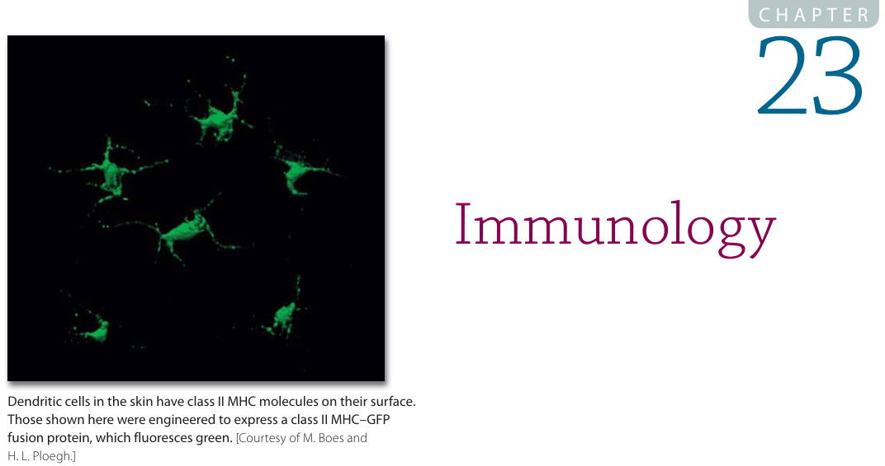
免疫是机体抵抗病原体暴露所造成有害影响的一种保护状态。宿主防御可以采取许多不同形式，而所有病原体都找到了削弱免疫系统或将其操纵以利己的方法。因此，宿主与病原体的相互作用是一项不断演化的工程。这就解释了为什么尽管演化出了极为精密的免疫系统，致病病毒、细菌和寄生虫仍持续威胁人类群体。传染病的流行说明了宿主防御的不完善。与所感染的宿主相比，几乎所有病原体的世代时间都相对较短，因此能够迅速演化出针对宿主免疫系统的精密对策。由新型流感病毒株引起的季节性流感暴发只是其中一个例子。
免疫系统中能够随时间针对这些威胁作出调整的部分称为适应性免疫系统，它会随病原体类型和数量的变化而改变。免疫系统的另一部分称为固有免疫系统，充当对付入侵者的快速部署力量。如此精密的防御是有代价的：一个能够应对大量种类繁多、快速演化的病原体的免疫系统，有时会把宿主自身的组织误当作病原体，并对自身的细胞和组织发动攻击，这种现象称为自身免疫。即便如此，我们已经学会利用免疫系统的运作机制来制造疫苗，以预防多种传染病。疫苗的成本效益极高，并为消灭天花暴发等瘟疫灾害作出了贡献。
宿主防御包括三个层次：(1) 机械与化学防御，(2) 固有免疫系统，(3) 适应性免疫系统（图23-1）。机械与化学防御持续运作。固有免疫应答涉及始终存在的细胞和分子，可被迅速激活（数分钟至数小时），但其区分不同病原体的能力是有限的。相比之下，适应性免疫应答需要数天才能充分形成，并且高度特异；也就是说，它们能够根据结构上极微小的分子差异区分亲缘关系很近的病原体。
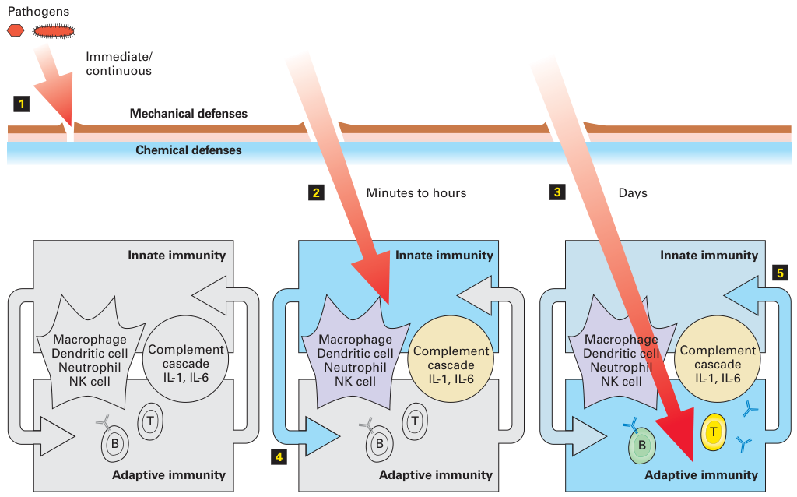
| Mechanical defenses | 机械防御 |
| Chemical defenses | 化学防御 |
| Pathogens | 病原体 |
| Innate immunity | 固有免疫 |
| Adaptive immunity | 适应性免疫 |
| Complement cascade | 补体级联反应 |
| IL-1, IL-6 | IL-1、IL-6 |
| Macrophage | 巨噬细胞 |
| Dendritic cell | 树突状细胞 |
| Neutrophil | 中性粒细胞 |
| NK cell | NK细胞 |
| Immediate/continuous | 即时/持续 |
| Minutes to hours | 数分钟至数小时 |
| Days | 数天 |
本章主要讨论脊椎动物的免疫系统，特别着重于那些使免疫系统有别于其他类型细胞和组织的独特分子、细胞类型和通路。脊椎动物免疫系统有四个显著特征：特异性、多样性、记忆和耐受。特异性是免疫系统区分亲缘关系相近物质的能力。多样性是该系统特异性识别数量惊人（>106）的不同分子的能力。记忆是宿主回忆起以往接触过某种外来物质、并在再次遇到该物质时更迅速有效地防御它的能力。耐受是避免对宿主自身细胞和组织发动免疫系统攻击的能力。正如我们将看到的，免疫系统实现特异性和多样性，靠的是产生大量不同的蛋白质，如抗体和特异性细胞表面受体，每一种都能与靶标致病分子紧密结合，而不与其他也许结构非常相似的分子结合。记忆和耐受依赖于我们将会描述的复杂细胞系统。它们是通过产生一组极其多样的、能结合特异性抗原的细胞表面受体来实现的。这些受体已被"训练"去识别自身分子，因而对自身成分基本无反应（自身耐受）。
从实用的角度看，免疫系统的能力可以被治疗性地加以利用。如今，单克隆抗体已形成数十亿美元的市场，被成功用于治疗炎症性疾病、自身免疫病和癌症。构成适应性免疫系统的分子——尤其是抗体——也是细胞生物学家不可或缺的工具，正如我们在第3章和第4章所看到的。抗体使我们能够以极其精确的方式对其所识别的分子进行可视化和分离。这种能力对于准确描述构成细胞及其细胞器的组分以及它们在细胞和组织中的定位极为宝贵。例如，免疫荧光技术被细胞生物学家广泛用于研究细胞形态和行为，而免疫印迹（Western印迹）已成为信号转导研究中不可或缺的工具。
任何能够引发免疫应答的物质都称为抗原。这些外来物质被识别和清除的方式，涉及免疫系统特有的分子和细胞生物学原理。我们以对哺乳动物免疫系统组织结构的简要概述开始本章，介绍固有免疫和适应性免疫应答中的基本角色，并描述炎症——一种对损伤或感染的局部应答，可导致免疫系统细胞活化并被募集到受累部位。在接下来的两节中，我们讨论抗体（即免疫球蛋白）分子的结构与功能——它们与抗原上特定的分子特征结合——以及抗体结构的变异性如何有助于识别特定抗原。适应性免疫系统所能识别的抗原具有极其巨大的多样性，其原因在于B淋巴细胞和T淋巴细胞（通常称为B细胞和T细胞，是执行抗原特异性识别的白细胞）中遗传物质发生了独特的重排。这些基因重排通过改变淋巴细胞上抗原结合受体的特异性，使机体能够适应各种各样的病原体；它们还在淋巴细胞发育过程中决定细胞命运。
尽管在B细胞和T细胞上产生抗原特异性受体的基因重排机制非常相似，但这些受体结合（识别）抗原的方式却大不相同。B细胞上的受体能够直接与完整的抗原相互作用，而T细胞上的受体则不能。相反，如23.4节所述，T细胞上的受体识别的是抗原经切割成小肽的加工形式，这些小肽随后由特化的细胞表面糖蛋白展示或"提呈"在靶细胞表面。这些糖蛋白由基因组中一个称为主要组织相容性复合体（MHC）的区域内的基因编码。这些MHC编码的糖蛋白（也称为MHC产物）有助于决定宿主对各类抗原发起T细胞和B细胞应答的能力。
理解免疫系统的这些基本特性，使我们能够回答若干非常实际的问题：我们怎样才能最好地制造出能针对某种感染因子提供保护的抗体？我们怎样才能制备出针对我们想在实验室中研究的特定蛋白质的抗体？因此，关于抗原加工和提呈的知识，既为预防传染病的疫苗设计提供了依据，也为生成研究必不可少的工具提供了依据。MHC编码的糖蛋白在个体对自身抗原产生耐受的过程中也发挥关键作用。我们在本章末尾以对针对病原体的免疫应答的整体观点作结，着重说明有效免疫应答所必需的不同免疫系统细胞之间的协作。
23.1 宿主防御概述
由于免疫系统是在微生物（其中一些是病原体）存在的环境中演化的，我们在开始宿主防御概述时，先考察典型病原体存在于何处以及在何处复制。然后我们介绍固有免疫和适应性免疫的基本概念，包括一些关键的细胞和分子角色。
病原体经不同途径进入机体并在不同部位复制
病原体经不同途径暴露于机体。人的皮肤本身表面积约为20平方英尺；衬覆呼吸道、消化道和生殖道的上皮表面则构成更为可观的约4000平方英尺的表面积。所有这些表面每天都会接触环境中的病毒和细菌。其中一些细菌称为共生菌，通常不致病，事实上还可能有益，帮助提供关键营养素或维持皮肤健康。据认为，成人体内任一时刻携带的微生物可多达3磅，而大多数人并不会对它们产生明显的炎症反应。只要这些共生微生物停留在机体这些外表面，它们就不致病。然而，如果构成这些表面的上皮的正常屏障功能受损，这些微生物进入机体内部，它们就可能致病。食源性病原体和性传播病原体以它们所接触的上皮为靶标。流感患者的喷嚏会以气溶胶形式释放数百万个病毒颗粒，随时可被新宿主吸入。皮肤的破损——哪怕只是轻微擦伤——或保护下方组织的上皮屏障的破损，都为病原体提供了便利的入侵途径，病原体随后便可获得丰富的营养来源（对细菌而言）以及复制所需的细胞（对病毒而言）。
病毒的复制严格局限于宿主细胞的胞质或细胞核内，病毒蛋白的合成和病毒遗传物质的复制均在此进行。随后，病毒可以以从最初被感染细胞释放的游离病毒颗粒（病毒体）的形式，或通过直接转移到相邻细胞（细胞间传播）的方式，扩散到其他细胞。许多细菌可以在机体的细胞外空间中复制，但有些细菌特化出侵入宿主细胞并在其中存活和繁殖的能力。这类胞内细菌或驻留于它们经内吞作用或吞噬作用进入细胞所通过的膜界囊泡中（见图17-19），或在逃出这些囊泡后驻留于胞质中。因此，一个有效的宿主防御系统必须不仅能够清除细胞外的病毒和细菌，还要能够清除藏匿这些病原体的宿主细胞。
寄生性真核生物也能引起疾病。其中一些寄生虫，例如引起昏睡病（锥虫）或疟疾（疟原虫属物种）的原生动物，具有非常复杂的生活史，并演化出复杂的对策来逃避宿主免疫系统的摧毁。
白细胞在全身循环并定居于组织和淋巴结
循环系统（图23-2）负责将血液输送到全身各处。血液由细胞（红细胞、白细胞、血小板）和液体（血浆，含有包括蛋白质、离子和小分子在内的溶解物质）组成。除了含血红蛋白、携带氧的红细胞（红细胞占血细胞的绝大多数）之外，血液中还含有白细胞和血小板（参与血液凝固）。白细胞包括多种细胞类型，有淋巴细胞（B细胞和T细胞）、单核细胞（称为巨噬细胞的清道夫细胞的前体）、树突状细胞、中性粒细胞和自然杀伤（NK）细胞，它们在免疫系统中各有不同功能。与红细胞不同——红细胞在衰老死亡之前从不离开循环——白细胞会离开循环并进入靶组织，帮助保护机体抵御入侵者。循环系统将白细胞从它们产生的部位（骨髓、胸腺、胎肝）运送到它们可被激活的部位（淋巴结、脾），然后再运送到感染部位。白细胞一旦到达某处，在执行任务的过程中还可能离开并重新进入循环。
免疫系统是由血管、器官和细胞相互连接而成的系统，可分为一级和二级淋巴器官（见图23-2）。一级淋巴器官——淋巴细胞（白细胞中包含B细胞和T细胞的一个亚群）产生并获得其功能特性的部位——包括产生T细胞的胸腺和产生B细胞的骨髓。需要功能健全的淋巴细胞的适应性免疫应答，在二级淋巴器官中启动，后者包括淋巴结和脾。淋巴器官中的所有细胞都来源于造血干细胞（见图21-19），最初在胎肝中产生，之后在骨髓中产生。据估计，年轻成年男性体内淋巴细胞总数约为500 × 109个。其中约15%的细胞存在于脾中，40%存在于其他二级淋巴器官（扁桃体、淋巴结）中，10%存在于胸腺中，10%存在于骨髓中；其余的则在血流中循环。
在正常情况下，心脏泵血所产生的压力不仅驱动血液在血管内运输，还迫使无细胞液体穿过血管壁进入其下方的组织。这种液体既输送营养素，也输送蛋白质，其中一些蛋白质执行防御功能。其体积最多可达总血量的三倍。为维持稳态，离开循环的液体最终必须返回，而它正是以淋巴的形式，经由淋巴管返回。淋巴管在其最远端是开放的，以收集浸润组织中细胞的组织液。淋巴管汇合成更大的集合管，将淋巴输送到淋巴结（图23-3）。淋巴结由被膜构成，其内部被划分为若干个由栖居其中的细胞类型所界定的区域。进入淋巴结的血管为淋巴结输送B细胞和T细胞。到达淋巴结的淋巴携带着来自该特定输入淋巴管所引流组织的、接触过（"采样"过）抗原的细胞以及可溶性抗原。在淋巴结中，适应性免疫应答所需的细胞和分子发生相互作用，对新获得的抗原信息作出反应，随后执行必要步骤以清除机体内的病原体（见图23-3）。
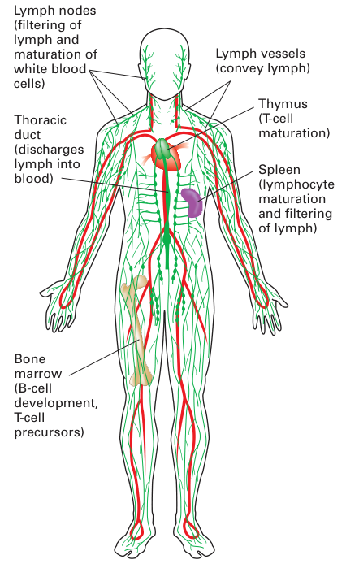
| Thymus | 胸腺 |
| T-cell maturation | T细胞成熟 |
| Spleen | 脾 |
| lymphocyte maturation and filtering of lymph | 淋巴细胞成熟与淋巴过滤 |
| Lymph vessels | 淋巴管 |
| Bone marrow | 骨髓 |
| B-cell development | B细胞发育 |
| T-cell precursors | T细胞前体 |
| Lymph nodes | 淋巴结 |
| filtering of lymph and maturation of white blood cells | 淋巴过滤与白细胞成熟 |
| Thoracic duct | 胸导管 |
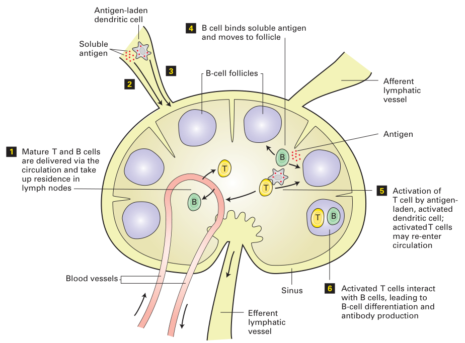
| Afferent lymphatic vessel | 输入淋巴管 |
| Soluble antigen | 可溶性抗原 |
| Antigen-laden dendritic cell | 载抗原树突状细胞 |
| Antigen | 抗原 |
| Efferent lymphatic vessel | 输出淋巴管 |
| Blood vessels | 血管 |
| Sinus | 淋巴窦 |
| B-cell follicles | B细胞滤泡 |
淋巴结可以被看作过滤器：从全身各远端部位收集来的抗原信息汇集于此，并以适于引发应答的形式展示给免疫系统。导致静息淋巴细胞活化的所有相关步骤都发生在淋巴器官中。接收到恰当指令而变得功能活跃的细胞，经输出淋巴管离开淋巴结，后者最终将淋巴送回到血流中。这类被激活的细胞通过血流再循环，并——此时已准备好行动——可能到达某处，在那里响应趋化信号再次离开循环、进入组织，搜寻病原入侵者、摧毁病毒感染的细胞，或产生能识别入侵者并标记它们以供摧毁的抗体。
淋巴细胞和其他白细胞离开循环、这些细胞被募集到感染部位、抗原信息的加工，以及免疫系统细胞返回循环，都是受到精细调控的过程，涉及特异性的细胞黏附事件、趋化信号以及穿越内皮屏障，我们将在本章后面看到。
机械与化学屏障构成抵御病原体的第一道防线
如前所述，机械与化学防御构成抵御病原体的第一道宿主防线（见图23-1）。持续运作的机械防御包括皮肤、上皮和节肢动物的外骨骼，这些都是只能被机械性损伤或通过特定酶的攻击才能突破的屏障。化学防御包括胃分泌物中的低pH，以及泪液和肠分泌物中能直接攻击微生物的酶，如溶菌酶。
机械防御的根本重要性在烧伤患者身上一目了然。当皮肤（表皮和真皮）的完整性受损时，下方组织中丰富的营养来源便暴露出来，空气中的细菌或原本无害的皮肤共生菌会不受遏制地增殖，最终使宿主不堪重负。病毒和细菌已演化出突破这些物理屏障完整性的策略。HIV、狂犬病病毒和流感病毒等包膜病毒具有带有融合特性的膜蛋白。在病毒体黏附到待感染细胞表面之后，病毒膜与宿主细胞质膜的直接融合使病毒遗传物质被送入宿主胞质，在此它便可用于转录、翻译和复制（见图5-46和5-48）。某些致病细菌（如"食肉细菌"，即链球菌的高致病性菌株）分泌胶原酶，破坏结缔组织的完整性，从而便于细菌进入下方组织。
固有免疫提供第二道防线
一旦机械与化学防御失效、入侵者的存在被感知，固有免疫系统便会被激活（见图23-1）。固有免疫系统由可立即用于应对病原体的细胞和分子组成。吞噬细胞——即摄入并摧毁病原体的细胞（见图17-19）——广泛分布于组织和上皮中，并可被募集到感染部位。若干组成性存在于血液中、或响应感染或炎症而产生的可溶性蛋白，也对固有防御有所贡献。缺乏适应性免疫系统的动物，如昆虫，完全依赖固有防御来对抗感染。同样，植物也完全依赖固有防御，而根本没有适应性免疫。
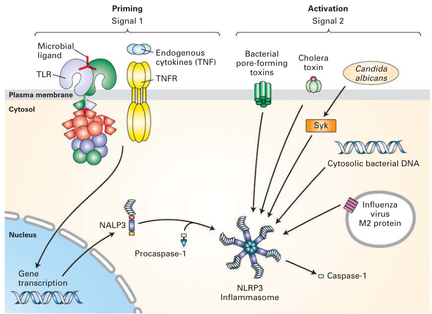
| Microbial ligand | 微生物配体 |
| TLR | Toll样受体（TLR） |
| Endogenous cytokines (TNF) | 内源性细胞因子（TNF） |
| TNFR | TNF受体（TNFR） |
| Influenza virus M2 protein | 流感病毒M2蛋白 |
| Cytosolic bacterial DNA | 胞质细菌DNA |
| Cholera toxin | 霍乱毒素 |
| Bacterial pore-forming toxins | 细菌成孔毒素 |
| Candida albicans | 白色念珠菌 |
| Syk | Syk激酶 |
| NLRP3 inflammasome | NLRP3炎症小体 |
| Procaspase-1 | caspase-1前体 |
| Caspase-1 | caspase-1 |
| Gene transcription | 基因转录 |
吞噬细胞与抗原提呈细胞 固有免疫系统包括巨噬细胞、中性粒细胞和树突状细胞。所有这些细胞都具有吞噬能力，并在其细胞表面装备了病原体识别受体，如Toll样受体（TLR；其分子结构见下文图23-35）和清道夫受体。这些受体能检测病原体特异性标志物的广泛模式，如细菌细胞壁成分，或含未甲基化CpG或双链RNA的核酸，因而是检测细菌或病毒存在的关键传感器。当这些标志物与TLR结合时，细胞会产生效应分子，包括抗微生物肽。TLR检测到病原体的树突状细胞和巨噬细胞还通过加工外来物质并将其展示给抗原特异性T细胞而发挥抗原提呈细胞（APC）的功能，从而在固有免疫与适应性免疫系统之间架起桥梁。TLR的结构与功能及其在激活树突状细胞中的作用将在23.6节详细描述。
炎症小体与非TLR核酸传感器 哺乳动物细胞拥有一类蛋白质，它们带有富亮氨酸重复，能够识别各种非自身成分并感知"危险"信号。这些蛋白质所识别的分子范围很广，从细菌细胞壁成分到尿酸结晶，到血红素降解产物，甚至到石棉和二氧化硅（图23-4）。
一旦被识别，这些"危险"信号就会激活一种称为炎症小体的多蛋白复合物的组装，后者再激活参与炎症的效应蛋白。构成炎症小体的蛋白质含有可介导与接头蛋白相互作用的模块，这些相互作用最终使炎症小体得以与caspase-1发生物理连接并将其激活；caspase-1是一种酶，对引起炎症的细胞因子的产生至关重要（该过程见下文）。正如我们将在23.6节看到的，炎症小体在连接固有免疫应答与适应性免疫应答中发挥重要作用。
某些能识别细菌或病毒核酸的哺乳动物TLR，其配体结合结构域位于内体的腔内。哺乳动物细胞还拥有其他能够检测胞质核酸存在的传感器。RIG-I和MDA5是专门识别病毒RNA的蛋白质。哺乳动物细胞还拥有一种酶——cGAS，它能够以细菌或病毒DNA为底物生成环二核苷酸。这些环二核苷酸随后被定位于内质网的STING蛋白识别。这几类受体的激活会触发炎症，并有助于启动适应性免疫应答。
补体系统 固有免疫系统的另一个重要组成部分是补体系统，即一组能够直接结合微生物或真菌表面的血清蛋白。这种结合会激活一个蛋白水解级联反应，其最终结果之一是形成膜攻击复合物，后者能够在病原体的保护性膜上形成孔洞（图23-5）。补体激活的级联反应在概念上类似于血液凝固级联反应，在激活的每一个相继阶段反应都被放大。至少有三条不同的途径可以激活补体系统。经典途径需要存在适应性免疫应答过程中产生、并已结合到靶微生物表面抗原上的抗体。这类抗体如何产生将在下文描述。这条补体途径是固有免疫系统组分与适应性免疫系统所产生的抗体协同作用的一个例子。
除补体激活的经典途径之外，细胞壁富含甘露糖的病原体还可通过甘露糖结合凝集素途径激活补体级联反应。甘露糖结合凝集素与病原体表面成组的特征性甘露糖结合，随后触发两种甘露糖结合凝集素相关蛋白酶——MASP-1和MASP-2——的激活，从而使补体级联反应的下游组分得以激活，如图23-5所示。最后，许多微生物表面所具有的、尚未完全明了的物理和化学性质，可经替代途径激活补体，这一激活级联反应包括因子B、D和P，它们都是血浆中存在的蛋白质。
这三条途径都汇聚于补体蛋白C3的激活。该蛋白合成时为前体形式，其中含有一个内部处于张力状态的硫酯键，位于彼此紧邻的一个半胱氨酸残基和一个谷氨酸残基之间，需要经蛋白水解转换才能变得完全有反应活性。C3只共价沉积在与自身紧邻的抗原–抗体复合物上。被甘露糖结合凝集素恰当修饰的表面，或经替代途径接受C3沉积的表面，也以类似方式被靶向。这种邻近限制将补体的作用限制在附近的表面上，避免对不展示所靶向抗原的细胞发动不当攻击。
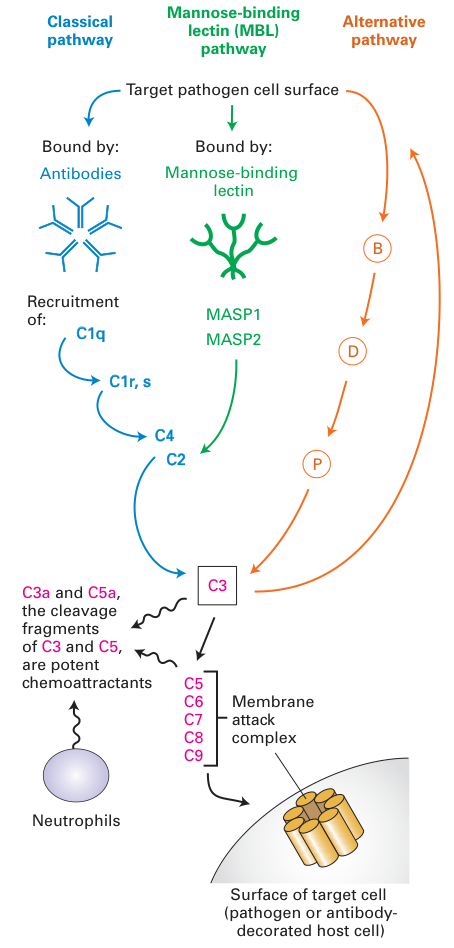
| Target pathogen cell surface | 靶病原体细胞表面 |
| Antibodies | 抗体 |
| Classical pathway | 经典途径 |
| Mannose-binding lectin | 甘露糖结合凝集素 |
| Mannose-binding lectin (MBL) pathway | 甘露糖结合凝集素（MBL）途径 |
| MASP1 | 甘露糖结合凝集素相关蛋白酶1 |
| MASP2 | 甘露糖结合凝集素相关蛋白酶2 |
| Alternative pathway | 替代途径 |
| Membrane attack complex | 膜攻击复合物 |
| C3 | 补体C3 |
| C5 | 补体C5 |
| Neutrophils | 中性粒细胞 |
无论通过哪条激活途径，活化的C3都会释放补体级联反应的末端组分——补体蛋白C5至C9，最终形成膜攻击复合物，后者可插入几乎任何相邻的生物膜，并通过形成孔洞使其通透。由此造成的电解质和小分子溶质流失导致靶细胞裂解和死亡。每当补体被激活，膜攻击复合物便会形成，并导致它所沉积其上的细胞死亡。完全激活的补体级联反应所具有的直接杀微生物（杀菌）效应，是宿主防御的一种重要机制。
所有三条补体激活途径还都产生C3a和C5a裂解片段，它们结合G蛋白偶联受体，发挥吸引中性粒细胞及其他参与炎症的细胞的作用。此外，巨噬细胞等吞噬细胞能识别表面被C3片段共价标记的细胞，并将其摄入和摧毁。
因此，补体级联反应在宿主防御中承担多重角色：它可以摧毁包裹病原体（细菌、病毒）的膜；它共价地"涂抹"被靶向的病原体，使其更容易被吞噬细胞摄入，而这些吞噬细胞能够杀死病原体并将其内容物提呈给将启动适应性免疫应答的细胞；最后，补体激活这一行为本身会产生信号，将固有免疫（中性粒细胞、巨噬细胞、树突状细胞）和适应性免疫（淋巴细胞）的细胞吸引到感染部位。这些信号称为趋化信号。
自然杀伤细胞 除了细菌和真核寄生虫入侵者之外，固有免疫系统还要防御病毒。当病毒感染的细胞的存在被检测到时，固有免疫系统的另一些细胞类型会活跃起来，搜寻并杀死被病毒感染的靶细胞。例如，当许多类型的细胞（不只是免疫系统细胞）被感染时，它们会合成并分泌一类称为I型干扰素的蛋白质，后者充当细胞间信号，警告免疫系统存在感染。干扰素被归类为细胞因子，即帮助以多种方式调节免疫应答的小分子分泌蛋白。随着本章的展开，我们还会遇到其他细胞因子，并讨论其中一些细胞因子的受体。
干扰素激活自然杀伤（NK）细胞。活化的NK细胞通过几种方式帮助保护机体。首先，它们能杀死被病毒感染的宿主细胞（"自然杀伤"之名即由此而来），阻止这些被感染的细胞制造更多会扩散感染的病毒颗粒。
其次，NK细胞分泌II型干扰素γ，它对协调抗病毒防御的许多其他方面至关重要（图23-6）。第三，NK细胞能杀死被抗体装饰的靶细胞。NK细胞借助几类表面受体识别其靶标，这些受体能够产生刺激性信号（促进细胞杀伤）或抑制性信号。
炎症是对损伤的一种复杂应答，同时涵盖固有免疫与适应性免疫
当有血管的组织（即由血管供血的组织）受到损伤时，随之而来的典型反应就是炎症。损伤可能是物理或化学过程造成的，如肌肉撕裂、简单的纸割伤，或病原体感染。炎症也称为炎症应答，以四个典型体征为特征：红、肿、热、痛。这些体征是由血管渗漏增加（血管舒张）、免疫系统细胞被吸引到损伤部位，以及可溶性炎症介质的产生所引起，后者与热感和痛感有关。炎症通过激活共同发起固有免疫应答的细胞类型和可溶性产物，并营造有利于启动适应性免疫应答的局部环境，来提供即时保护。然而，如果控制不当，炎症也可能成为组织损伤的主要原因。
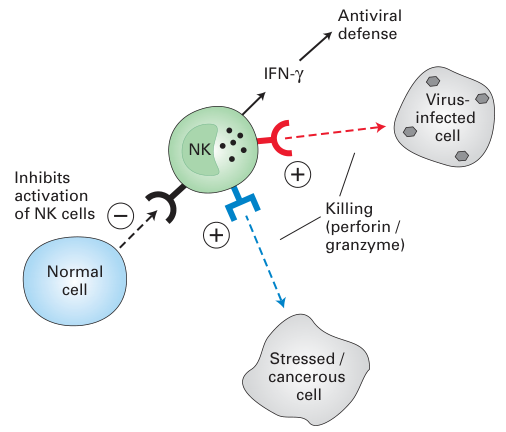
| Antiviral defense | 抗病毒防御 |
| IFN-γ | 干扰素γ（IFN-γ） |
| Killing (perforin / granzyme) | 杀伤（穿孔素/颗粒酶） |
| Stressed / cancerous cell | 应激/癌变细胞 |
| Virus-infected cell | 病毒感染细胞 |
| Normal cell | 正常细胞 |
| Inhibits activation of NK cells | 抑制NK细胞的激活 |
图23-7描绘了针对细菌病原体的炎症应答以及随后启动适应性免疫应答中的关键角色。组织定居的树突状细胞通过其TLR感知病原体的存在并作出反应，释放细胞因子和趋化因子等小分子可溶性蛋白；后者充当吸引免疫系统细胞的趋化物。中性粒细胞响应损伤或感染部位产生的细胞因子和趋化因子，离开循环并迁移到该部位（见图20-40）。中性粒细胞约占所有循环白细胞的一半，具有吞噬能力（见图17-19），直接摄入并摧毁致病细菌和真菌。中性粒细胞可通过其TLR与种类繁多的病原体来源大分子相互作用。这些受体的结合（下文将详细描述）会激活中性粒细胞，使其产生更多细胞因子和趋化因子；后者又能吸引更多白细胞——中性粒细胞、巨噬细胞，最终还有淋巴细胞（T细胞和B细胞）——前往该区域对抗感染。活化的中性粒细胞可释放杀灭细菌的酶（如溶菌酶和蛋白酶），以及具有杀微生物活性的小肽，统称为防御素。活化的中性粒细胞还会开启产生超氧阴离子自由基及其他活性氧的酶（见第12章第547–548页），它们能在近距离杀死微生物。另一种对炎症应答有贡献的细胞类型是组织定居的肥大细胞。当受到多种物理或化学刺激而活化时，肥大细胞释放组胺——一种结合G蛋白偶联受体的小分子。这种结合导致血管通透性增加，从而便于血浆蛋白（如补体）进入组织，对抗入侵的病原体。
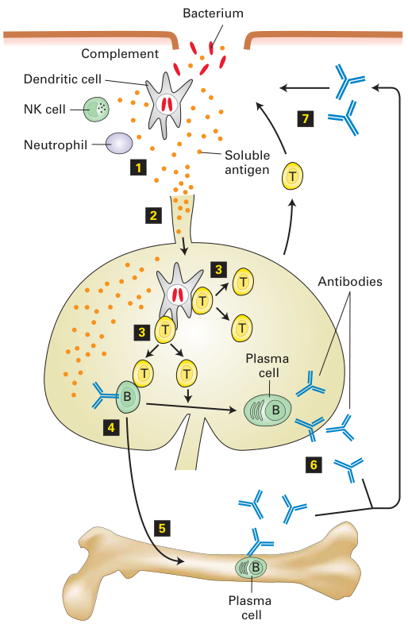
| Complement | 补体 |
| Bacterium | 细菌 |
| Soluble antigen | 可溶性抗原 |
| Neutrophil | 中性粒细胞 |
| NK cell | NK细胞 |
| Dendritic cell | 树突状细胞 |
| Plasma cell | 浆细胞 |
| Antibodies | 抗体 |
对感染或损伤的一项非常重要的早期应答，是多种血浆蛋白酶的激活，包括上文讨论的补体级联反应中的蛋白质。正如我们所看到的，这些蛋白酶激活过程中产生的裂解片段会将中性粒细胞吸引到组织损伤部位（见图23-5）。它们还进一步诱导白细胞介素1和6（IL-1和IL-6）等引起炎症的细胞因子的产生。中性粒细胞的募集还依赖于血管通透性的增加，后者部分受来源于磷脂和脂肪酸的脂质信号分子（如前列腺素和白三烯）控制。所有这些事件都发生迅速，在损伤后数分钟内即开始。如果这种即时应答的起因未能消退，可能导致慢性炎症及随之而来的组织损伤，其中适应性免疫系统的细胞发挥重要作用。
当组织损伤部位的病原体负荷很高时，它可能超出固有防御机制处理该感染的能力。此外，一些病原体在演化过程中获得了使固有免疫防御失能或将其绕过的工具。在这种情况下，就需要适应性免疫应答来帮助控制感染。这种应答依赖于横跨适应性免疫与固有免疫交界处的特化细胞，包括巨噬细胞和树突状细胞，它们既能摄入并杀死病原体，也能将抗原提呈给适应性免疫系统。特别是树突状细胞，它能通过将新获得的病原体来源抗原递送到二级淋巴器官来启动适应性免疫应答（见图23-7）。
适应性免疫作为第三道防线具有特异性
适应性免疫这一术语专指抗原特异性受体对外来物质的高度特异性识别，其充分完善需要在上次接触发生后数天或数周才能完成。带有抗原特异性受体的淋巴细胞是负责适应性免疫的关键细胞。适应性免疫应答具有特异性，其早期证据来自Emil von Behring和Shibasaburo Kitasato于1905年对抗体的发现，抗体是适应性免疫的关键效应分子。他们首先将血清（血液凝固过程完成后从细胞碎片中分离出的草黄色液体）从接触过亚致死剂量致命白喉毒素的豚鼠转移到从未接触过产生该毒素的细菌的动物体内。受体动物由此获得了对同一细菌致死剂量的保护（图23-8，左）。来自从未接触过白喉毒素的动物的血清转移则不能提供保护，而且保护作用仅限于产生该白喉毒素的微生物，并不扩展到其他毒素。这一实验证明了特异性——即区分同一类中两种相关物质的能力。这种特异性是适应性免疫系统的标志。即使是仅相差一个氨基酸的蛋白质，也能通过免疫学手段加以区分。
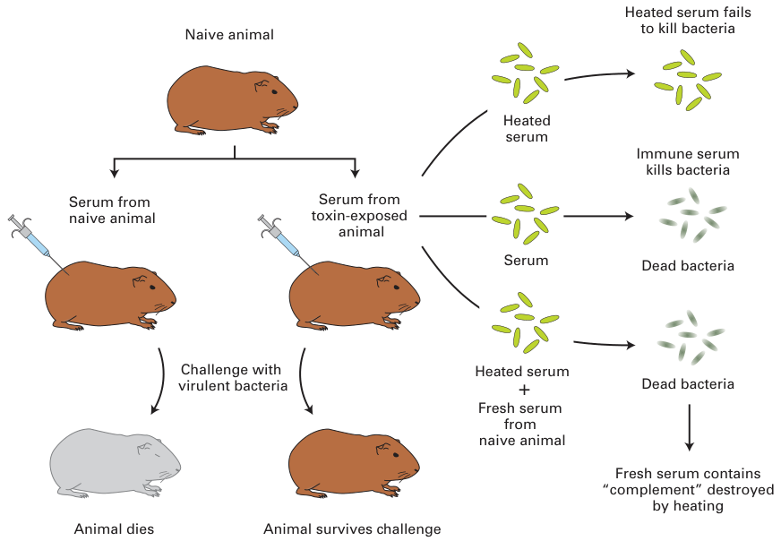
| Naive animal | 未免疫动物 |
| Serum from naive animal | 来自未免疫动物的血清 |
| Challenge with virulent bacteria | 用强毒细菌攻击 |
| Animal survives challenge | 动物存活 |
| Animal dies | 动物死亡 |
| Heated serum | 加热血清 |
| Heated serum fails to kill bacteria | 加热血清不能杀死细菌 |
| Immune serum kills bacteria | 免疫血清能杀死细菌 |
| Dead bacteria | 死细菌 |
| Fresh serum from naive animal | 来自未免疫动物的新鲜血清 |
| Fresh serum contains “complement” destroyed by heating | 新鲜血清中含有被加热破坏的“补体” |
| Serum from toxin-exposed animal | 来自接触过毒素的动物的血清 |
| Serum | 血清 |
von Behring从这些实验中推断，存在负责保护的、可转移的因子，他称之为"小体"（Antikörper），即抗体。含抗体的血清不仅在体内提供保护，还能在试管中杀死微生物（图23-8，右）。将含抗体的血清加热至56℃会破坏这种杀伤活性，但加入来自未免疫动物（即从未接触过该细菌的动物）的未经加热的新鲜血清后，该活性得以恢复。这一发现提示，还有第二种因子（后来证明是补体）与抗体协同作用来杀死细菌。
我们现在知道，von Behring所说的抗体是被称为免疫球蛋白的血清蛋白，而补体实际上就是上文所述的一系列蛋白酶，它们负责摧毁被抗体标记的病原体（见23-5中的经典途径）。免疫球蛋白不仅能中和（使失活）细菌毒素，还能通过直接结合病毒等有害因子、阻止病毒附着到宿主细胞上的方式将其中和。产生中和性抗体是几乎所有疫苗接种策略的基本原理。疫苗接种是主动免疫的一种形式，其做法是有意让个体接触某种外来抗原，通过产生适应性免疫应答（见下文）和抗体来引发保护性免疫。同样，针对蛇毒制备的抗体可以给予蛇咬伤者，以保护他们免于中毒，前提是给药在咬伤后相对较早进行：抗体与蛇毒中的毒性蛋白结合，阻止它们与宿主中的靶标结合，从而将其中和。这一称为被动免疫的程序，可以通过即刻中和毒素等有害物质来挽救生命。被动免疫还被用于预防性保护前往病毒性肝炎等疾病流行地区的人群：给予来自免疫个体的血清可提供针对感染的暂时性保护。因此，抗体可以产生即时的保护效果。鉴于当今的医学进步使免疫系统严重受损的个体（接受化疗或放疗的癌症患者、免疫系统受到药物抑制的移植患者、罹患艾滋病的患者、患有先天性免疫系统缺陷的个体）得以存活，被动免疫具有直接的实用重要性。让小鼠或家兔等动物有意接触某种外来物质（免疫接种），可以产生能特异性识别该物质（抗原）的抗血清。这些抗血清已成为细胞生物学家工具箱中的标准组分。
- 机械与化学防御为机体提供针对大多数病原体的保护。这种保护即时且持续，但特异性很低。固有免疫和适应性免疫则针对突破机体机械或化学屏障的病原体提供防御（见图23-1）。
- 循环系统和淋巴系统将固有免疫与适应性免疫中的分子和细胞角色分布到全身各处（见图23-2）。
- 固有免疫由补体系统（见图23-5）和若干类型的白细胞介导，其中最重要的是中性粒细胞以及其他吞噬细胞，如巨噬细胞和树突状细胞。固有免疫系统的细胞和分子被快速部署（数分钟至数小时）。提示病原体存在的分子模式可被Toll样及其他受体识别，但识别的特异性不高，因为这些受体能够识别相当宽泛的一组相关分子。
- 适应性免疫由T淋巴细胞和B淋巴细胞介导。这些细胞需要数天才能完全激活和部署，但它们能够区分亲缘关系很近的抗原。这种抗原识别的特异性是适应性免疫的关键鉴别特征。
- 固有免疫与适应性免疫以相互协同的方式发挥作用。炎症是对组织损伤或感染的早期应答，涉及一系列将固有免疫与适应性免疫要素结合起来的事件（见图23-7）。
23.2 免疫球蛋白：结构与功能
免疫球蛋白（也称抗体）由B细胞产生，是赋予适应性免疫的分子中研究得最透彻的一类。一个人有能力制造数量无限的多种抗体，但任何一种特定的抗体通常只有在个体接触过（即被免疫过）该抗体能特异性结合的抗原之后才会产生——因此抗体的产生是一种适应性免疫应答。本节我们介绍免疫球蛋白的结构组织方式、它们的多样性，以及它们如何与抗原结合。产生多样化抗体的机制将在23.3节中介绍。
免疫球蛋白具有由重链和轻链组成的保守结构
免疫球蛋白是血清中含量丰富的一类蛋白质，可分为若干具有不同结构和功能特性的类别。当人们从免疫动物分离的血清（称为抗血清）中对抗体活性进行生化纯化时，免疫球蛋白被鉴定为负责该活性的那一类血清蛋白。纯化的依据是它们介导杀灭微生物的能力，以及直接结合其对应抗原（即同源抗原）的能力。最常见类别的免疫球蛋白由两条相同的重链（H链）与两条相同的轻链（L链）共价连接而成（图23-9；其他类别见下文）。因此，典型的免疫球蛋白（有时缩写为Ig）具有二重对称结构，记作H2L2。一个H2L2抗体分子通常能结合两个抗原分子（二价结合；见下文）。这种基本H2L2结构的一个例外见于骆驼科动物（骆驼、美洲驼、小羊驼）所制造的免疫球蛋白。这些动物能产生一些重链二聚体（H2）且不含轻链的免疫球蛋白。
为了回答抗体如何能够在彼此相关的分子之间加以区分——也就是说，一种抗体如何能与其特异性的抗原结合，而不与另一个结构上非常相似的分子结合，人们采用了生化方法。免疫球蛋白是相当大的蛋白质（约150 kDa），人们用蛋白水解酶将其切成片段，以确定蛋白质中直接参与抗原结合的区域（见图23-9）。木瓜蛋白酶产生的片段称为F(ab)（意为抗原结合片段），它们能结合单个抗原分子（单价片段）；而胃蛋白酶产生的是二价片段，称为F(ab')2（F＝片段；ab＝抗体），表现为二价结合。这些酶常被用来把完整的免疫球蛋白分子转变成单价或二价的试剂。F(ab)片段虽然不能交联抗原，但F(ab')2片段可以做到。研究者常利用这一特性来交联并由此激活细胞表面受体。许多受体（如表皮生长因子（EGF）受体）在与配体结合后发生二聚化（配体诱导的二聚化），这是下游信号级联完全激活的先决条件。免疫系统细胞上的许多受体行为方式与之类似。
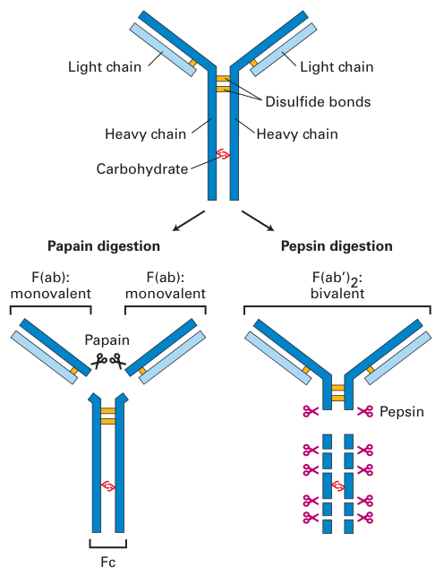
| Light chain | 轻链 |
| Heavy chain | 重链 |
| Carbohydrate | 碳水化合物 |
| Disulfide bond | 二硫键 |
| F(ab) fragment | F(ab)片段 |
| F(ab')2 fragment | F(ab')2片段 |
| Papain | 木瓜蛋白酶 |
| Pepsin | 胃蛋白酶 |
| Papain digestion | 木瓜蛋白酶消化 |
| Pepsin digestion | 胃蛋白酶消化 |
| Fc fragment | Fc片段 |
木瓜蛋白酶消化后释放出来、且不能结合抗原的那部分称为Fc，因为它易于结晶（F＝片段；c＝可结晶）。
存在多种免疫球蛋白同种型，各自具有不同的功能
根据各自不同的生化特性，免疫球蛋白可以划分为不同的类别，即同种型（isotype）。轻链有两种同种型，即κ和λ。重链的变异更大：在哺乳动物中，主要的重链同种型是μ、δ、γ、α和ε。这些重链既可以与κ轻链结合，也可以与λ轻链结合。依脊椎动物物种的不同，α和γ同种型内部还会进一步细分，而鱼类具有一种哺乳动物中不存在的同种型。完整组装的免疫球蛋白（Ig）依其重链命名：μ链产生IgM；α链产生IgA；γ链产生IgG；δ链产生IgD；ε链产生IgE。主要Ig同种型的总体结构如图23-10所示。凭借其重链Fc部分独特的结构特征，各Ig同种型执行各自专门的功能。
IgM分子以H2L2链的五聚体形式分泌，由重链末端之间的二硫键以及一条额外的链——J链——所稳定。处于五聚体形式时，IgM拥有十个相同的抗原结合位点（每个H2L2有两个），从而能与展示同源抗原的表面发生高亲合力相互作用。亲合力定义为各个可用结合位点的相互作用强度（亲和力）与此类结合位点数目的乘积。许多低亲和力的相互作用可以导致高亲合力的相互作用（就像尼龙搭扣那样）。五聚体IgM分子一旦沉积在携带同源抗原的表面上，就会采取一种极有利于激活补体级联的构象，因而是损伤其所吸附的膜（补体蛋白随后也沉积于该膜）的有效手段。
IgA分子也与J链相互作用，形成H2L2分子的二聚体。二聚体IgA能结合上皮细胞基底外侧面的多聚IgA受体，结合后即触发受体介导的内吞。随后，IgA受体被切割，仍带有一部分受体片段（分泌片）的二聚体IgA从上皮细胞的顶端面释放出去。这一过程称为跨细胞转运，是把免疫球蛋白从上皮的基底外侧运送到顶端面的有效方式（图23-11a）。泪液和其他分泌物（尤其是胃肠道中的）富含IgA——每天分泌的免疫球蛋白可达数克！——因而能抵御环境中的病原体。
IgG同种型对于中和病毒颗粒十分重要。该同种型还帮助把颗粒性抗原（如病毒或较大的细菌碎片）加工处理，以便被那些带有针对IgG分子Fc部分特异性受体的细胞摄取（见下文）。
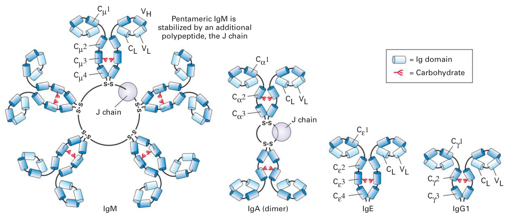
| IgM | IgM |
| IgA (dimer) | IgA（二聚体） |
| IgE | IgE |
| IgG1 | IgG1 |
| J chain | J链 |
| Ig domain | Ig结构域 |
| Carbohydrate | 碳水化合物 |
| VH | 重链可变区 |
| VL | 轻链可变区 |
| CL | 轻链恒定区 |
新生哺乳动物的免疫系统尚未成熟，但保护性抗体可经由母乳从母体转移给新生儿。负责捕获母体IgG的受体是新生儿Fc受体（FcRn），在啮齿类动物中它存在于肠上皮细胞上。通过跨细胞转运，在新生动物肠道腔侧被捕获的母体IgG得以穿过肠上皮，供幼年啮齿动物被动保护之用（图23-11b）。在人类中，FcRn存在于胎盘中与母体循环接触的胎儿细胞上。IgG抗体经胎盘从母体循环跨细胞转运，把母体抗体输送给胎儿。这些母体抗体将保护新生儿，直到其免疫系统成熟到足以自行产生抗体为止。在成体中，FcRn也表达于内皮细胞上，既有助于控制循环中IgG的更新，也有助于IgG穿过内皮屏障进入其下方的组织。
正如我们将在23.3节中看到的，IgM和IgD同种型在新生成的B细胞上以膜结合型受体的形式表达。在这里，μ链在B细胞发育和活化中起重要作用。
每个初始B细胞都产生一种独特的免疫球蛋白
克隆选择学说规定，每个初始淋巴细胞（尚未遇到其特异性抗原）都携带一个特异性独一无二的抗原结合受体。当一个淋巴细胞遇到其所特异性针对的抗原时，便发生克隆扩增（快速细胞分裂形成一群细胞——一个克隆——它们全部源自同一个前体细胞），从而放大应答，最终分泌大量特异性抗体（与最初的前体细胞所制造的抗体相同）（图23-12）。抗原特异性抗体负责结合抗原，并随后介导将抗原从体内清除。在典型的免疫应答中，引发应答的抗原组成复杂：即使最简单的病毒也含有若干种不同的蛋白质，而每种蛋白质又可能向免疫系统呈现若干在分子上彼此不同的特征，这些特征可以被各自独立地识别。因此，许多单个淋巴细胞都会对某一给定抗原发生应答并扩增成各自独立的克隆，每个克隆都产生自己的抗原特异性受体和结构独特的抗体，因而具有独特的结合特性（亲和力）。由于每个淋巴细胞都被赋予独特的受体，并针对抗原发生克隆扩增，这种由多个独立前体细胞共同参与的应答被称为多克隆应答。
B细胞肿瘤是单个淋巴细胞恶性克隆扩增的产物，正是它们使人们得以首次对抗体多样性产生过程进行分子层面的分析。一个关键观察是，来源于淋巴细胞的肿瘤可以产生大量分泌型免疫球蛋白。这些免疫球蛋白中的一些轻链会被分泌到患有此类肿瘤的患者的尿液中。这些轻链以其发现者命名，称为本周蛋白（Bence-Jones蛋白），它们易于纯化，为免疫球蛋白的蛋白质化学分析提供了第一个研究对象。
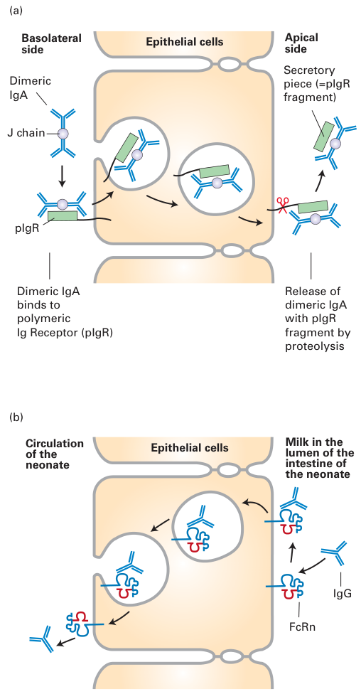
| Secretory piece (pIgR fragment) | 分泌片（pIgR片段） |
| J chain | J链 |
| Apical side | 顶端面 |
| Basolateral side | 基底外侧面 |
| Dimeric IgA | 二聚体IgA |
| Polymeric Ig receptor (pIgR) | 多聚Ig受体（pIgR） |
| pIgR | pIgR |
| IgG | IgG |
| FcRn | FcRn |
| Epithelial cells | 上皮细胞 |
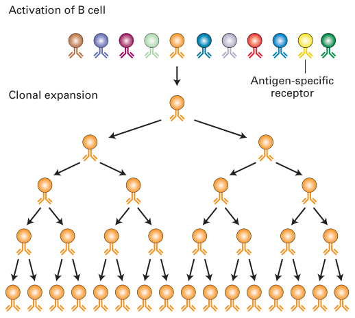
| Activation of B cell | B细胞活化 |
| Clonal expansion | 克隆扩增 |
| Antigen-specific receptor | 抗原特异性受体 |
这项工作产生了两个关键发现。第一，没有两个独立的肿瘤产生生化性质完全相同的轻链，提示它们在序列上各不相同。第二，区分不同轻链的氨基酸序列差异并非随机分布，而是聚集在一个称为轻链可变区的结构域中，即VL。该结构域由轻链N端的约110个氨基酸组成。序列的其余部分在不同轻链之间是相同的（前提是它们来自同一同种型，即κ或λ），因此称为恒定区，即CL。随后，人们从各个患者的血清中纯化出每位患者特有的免疫球蛋白。对这些制品中重链的测序显示，区分不同重链的可变残基同样集中在一个界限分明的结构域中，称为重链可变区，即VH。
对不同轻链的可变区序列进行比对，显示出一种非随机的可变性区域分布模式，揭示了三个高变区——HV1、HV2和HV3——它们被夹在所谓的骨架区之间（图23-13a）。
（对免疫球蛋白重链序列所做的类似比对同样得到了高变区。）在免疫球蛋白正确折叠的三维结构中，这些高变区彼此靠得很近（图23-13b和图23-14），并与抗原接触。因此，Ig分子中含有高变区的那一部分就构成了抗原结合位点。出于这一原因，高变区也称为互补决定区（CDR）。
要在遗传而来的基因组（种系）中直接编码产生极其多样的抗体库（超过一百万种不同的抗体分子，而我们现在知道，基因组只编码约20,000个独立基因）所需的全部信息十分困难，这促使人们提出存在独特的遗传机制来解释这种多样性。考虑到典型抗体重链和轻链的大小（每一种重链–轻链组合若按此方式编码，依同种型不同需要2.5–3.5 kb的DNA），显然，要编码出一套多样性足以对机体所接触的各种病原体和其他异物提供充分保护的抗体分子，很快就会耗尽基因组的DNA编码能力。我们将会看到，确实存在独特的机制来产生一套多样性足够的抗体。
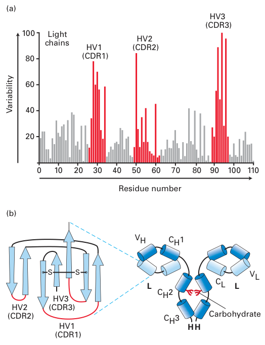
| Variability | 可变性 |
| Residue number | 残基编号 |
| Light chains | 轻链 |
| HV1 (CDR1) | HV1（CDR1） |
| HV2 (CDR2) | HV2（CDR2） |
| HV3 (CDR3) | HV3（CDR3） |
| Carbohydrate | 碳水化合物 |
| VH | 重链可变区 |
| CH1 | 重链恒定区1 |
| CH2 | 重链恒定区2 |
| CH3 | 重链恒定区3 |
| CL | 轻链恒定区 |
免疫球蛋白结构域具有一种特征性折叠，由两个被二硫键稳定的β折叠组成
免疫球蛋白的可变结构域和恒定结构域都折叠成一种完全由β折叠组成的紧密三维结构（见图23-13b）。一个典型的Ig结构域含有两个β折叠（一个由三条链组成，另一个由四条链组成），由一条二硫键像夹心一样连在一起。朝向内部的残基大多是疏水性的，有助于稳定这种夹心结构。暴露于水环境的残基则表现出更高频率的极性和带电侧链。构成二硫键的半胱氨酸残基之间的间距，以及少数高度保守的残基，是这一进化上古老的结构基元的特征，该基元称为免疫球蛋白折叠。基本的免疫球蛋白折叠也见于许多并不直接参与抗原特异性识别的真核蛋白质，包括细胞黏附分子的Ig超家族，即IgCAM（见第20章）。
抗原上与相应抗体接触的区域称为表位。一种蛋白质抗原通常含有多个表位，它们往往是蛋白质上暴露的环或表面，因而能被抗体分子接近。由克隆性B细胞群体得到的每种均一抗体制品，都只识别相应抗原上单个在分子层面得到确定的表位。
为了解析抗体与其抗原上同源表位形成的复合物的结构，必须具备均一免疫球蛋白的来源以及纯形式的抗原（见第3章）。正如我们已经看到的，均一免疫球蛋白可以从B细胞肿瘤中获得，但在那种情况下，抗体所特异性针对的抗原通常是未知的。要制备适合结构分析的均一抗体制品，一项必不可少的突破是开发出通过特殊选择培养基从杂交瘤获取抗体的技术（见第4章第135–136页）。建立能产生特定特异性抗体的永生化细胞系（称为单克隆抗体）为细胞生物学家提供了必不可少的工具：单克隆抗体不仅广泛用于特异性检测大分子，也用于检测和定量药物、药物代谢物，甚至cAMP之类的信号分子。单克隆抗体能够检测蛋白质及其修饰（磷酸化、亚硝基化、甲基化、乙酰化等），也能检测复杂碳水化合物、（糖）脂以及核酸及其修饰，因此它们在实验室中以及诊断和治疗领域都得到了广泛应用。
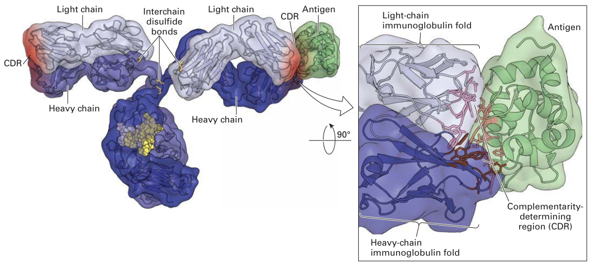
| Antigen | 抗原 |
| Light-chain immunoglobulin fold | 轻链免疫球蛋白折叠 |
| Heavy-chain immunoglobulin fold | 重链免疫球蛋白折叠 |
| Complementarity-determining region (CDR) | 互补决定区（CDR） |
| Interchain disulfide bonds | 链间二硫键 |
| Light chain | 轻链 |
| Heavy chain | 重链 |
我们现在对大量单克隆抗体的结构（每一种都与其特异性针对的抗原形成复合物）有了详细的了解。除了蛋白质与其他（大）分子之间通常的分子互补规则之外，并不存在固定不变的规则来描述这些相互作用（见第3章）。CDR对抗原–抗体界面的贡献最为重要。Ig重链VH区的CDR3发挥特别突出的作用，Ig轻链VL区的CDR3也是如此。
免疫球蛋白的恒定区决定其功能特性
正如我们所见，抗体通过其可变区识别抗原。其恒定区则决定它们招募哪些效应分子来中和病原体。
附着在病毒或微生物表面的抗体，可被那些表达针对免疫球蛋白Fc部分特异性受体的细胞直接识别。这些Fc受体（FcR）针对免疫球蛋白的各个类和亚类，在结构上和功能上都表现出相当大的异质性。借助依赖FcR的事件，特化的吞噬细胞（如树突状细胞和巨噬细胞）能够抓住被抗体装饰的颗粒，进而将其吞入并摧毁。用抗体对抗原性靶标进行非共价装饰，或用补体成分对其进行共价修饰，称为调理作用。依赖FcR的事件还使某些免疫系统细胞（如单核细胞和自然杀伤细胞）能够直接接触那些展示着抗体所附着的病毒抗原或其他抗原的靶细胞。这种接触可能诱导免疫系统细胞释放有毒小分子（如活性氧）或细胞毒性颗粒的内容物（包括穿孔素和颗粒酶）。穿孔素是能附着到被接触靶细胞表面并在其膜上形成孔的蛋白质。这些新形成的孔允许颗粒酶进入，颗粒酶是一类蛋白酶，可启动一系列最终杀死靶细胞的事件（见图23-6）。这一过程称为抗体依赖的细胞介导的细胞毒性（ADCC），它说明了固有免疫系统的细胞如何与适应性免疫应答的产物相互作用并从中获益。
某些免疫球蛋白同种型的抗原–抗体（免疫）复合物能够启动补体激活的经典途径（见图23-5）。IgM和IgG3特别擅长激活补体，但原则上所有IgG类都能激活补体，而IgA和IgE则不能。肠道中存在的大量IgA通过中和肠道内定居的微生物，参与构成肠道的屏障功能。
- 大多数免疫球蛋白（抗体）由两条相同的重链（H链）和两条相同的轻链（L链）组成（H2L2）。每条链都含有一个可变区（V区）和一个恒定区（C区）。蛋白酶解片段化产生单价的F(ab)片段和二价的F(ab')2片段，它们含有保留抗原结合能力的可变区结构域（见图23-9）。Fc片段含有恒定区结构域，决定它们激活补体成分或结合白细胞上表达的Fc特异性受体的能力。
- 免疫球蛋白根据其重链恒定区划分为不同类别（见图23-10）。在哺乳动物中有五大类：IgM、IgD、IgG、IgA和IgE；相应的重链分别称为μ、δ、γ、α和ε。轻链有两大类型，即κ和λ，同样以其恒定区的特征来界定。
- IgM和IgA能形成更高阶的结构：IgM可形成五聚体（五个相同的H2L2拷贝），IgA可形成二聚体（两个相同的H2L2拷贝）
- 每个B淋巴细胞都表达一种序列独特的免疫球蛋白，因而对某一特定抗原具有独一无二的特异性。识别抗原后，只有携带针对该抗原的特异性受体的B淋巴细胞才会被活化并发生克隆扩增（克隆选择）（见图23-12）。
- 抗体的抗原特异性由其可变区赋予，可变区中含有序列高度可变的区域，称为高变区或互补决定区（见图23-13a）。这些高变区位于可变区的顶端，在那里它们能与特定抗体所特异性针对的抗原发生特异性接触。
- 构成免疫球蛋白分子的重复免疫球蛋白结构域具有一种特征性的三维结构，即免疫球蛋白折叠，它由两个β折叠经一条二硫键像夹心一样连在一起构成（见图23-13b）。
- 重链的恒定区赋予抗体独特的效应功能，例如结合补体的能力、被转运穿过上皮的能力，或与针对免疫球蛋白Fc部分的特异性受体相互作用的能力。
23.3 抗体多样性的产生与B细胞发育
病原体复制时间短，遗传组成高度多样，且进化迅速，产生巨大的抗原变异。因此，充分的防御必须能够发起同样多样的应答。抗体提供了成功宿主防御所需的多样性。抗体应答的时相，以及它对抗原组成变化所作的必要调整，对适应性免疫系统的组织与调控提出了独特的要求。有一种独特的机制进化出来，它不仅使能够产生的抗体集合（称为抗体库）几乎具有无限的变异，还使这些抗体的质量能够迅速提高，以满足正在进行的病毒或细菌感染所提出的要求。由于B细胞产生最佳的抗体需要T细胞的协助，我们将在下文看到，淋巴细胞多样性背后的分子机制对B细胞和T细胞而言基本相似。
负责产生抗体的B细胞利用一种独特的机制，把合成免疫球蛋白重链和轻链所需的遗传信息由各自独立的DNA序列（即Ig基因片段）拼接起来，形成一个有功能的转录单元。这种把Ig基因片段组合起来的重组机制本身，恰好就在这些遗传元件相互连接之处极大地扩展了序列的变异性。这种产生多样抗体的机制，与只发生在生殖细胞中的减数分裂重组以及外显子的可变剪接（见第8章）都有本质的不同。由于这种重组机制发生在体细胞中而不是生殖细胞中，故称为体细胞基因重排或体细胞重组。这种不寻常的重组机制是B、T淋巴细胞上抗原特异性受体所独有的，它使得只需耗费极少的DNA编码空间就能指定一大批极其多样的受体。体细胞重组的发现详见经典实验23-1。
能够随意组合彼此独立的遗传元件（组合多样性），再加上重组机制本身在编码的受体中产生更多的序列多样性，使得适应性免疫应答能够针对几乎无限的抗原阵列，包括由宿主自身编码的分子。因此，体内既有产生这种巨大多样性的机制，也有施加耐受、抑制对"自身"成分发生不必要反应的机制；这种反应的结果就是自身免疫。两种机制都不完美：适应性免疫系统无法为所有外来物质产生受体。此外，我们生成B细胞和T细胞受体的方式所付出的不可避免的代价，就是有可能产生自身反应性受体（自身免疫）。
有功能的轻链基因需要V和J基因片段的组装
编码完整免疫球蛋白的基因并不以组装完成、随时可以表达的形式存在于基因组中。相反，所需的基因片段是在B细胞发育过程中被聚拢并组装起来的。含免疫球蛋白基因的基因组区域的组织结构如图23-15所示。在B细胞中，该区域的DNA按下文所述发生重排，从而在每个B细胞及其后代中生成组装完成、完全有功能的免疫球蛋白编码基因。虽然重链基因的重排先于轻链基因的重排，但由于轻链基因的组织结构比较简单，我们先讨论轻链基因。
免疫球蛋白轻链基因由成簇的V基因片段构成，其下游是一个单独的C片段。每个V基因片段都带有自己的启动子序列，并编码轻链可变区的大部分；不过，编码轻链可变区的一小段核苷酸序列并不在V基因片段中。这段缺失的部分由多个J片段之一提供，这些J片段位于未重排的κ轻链基因座中V片段与单个C片段之间（见图23-15a）。（这里的J片段是一个遗传元件，不要与J链混淆；J链是五聚体IgM分子的一个多肽亚基，在IgA中也与之结合存在；见图23-10。）在B细胞发育过程中，一个B细胞前体决定使用某个特定的V基因片段——这是一个随机过程——结果它与某一个J片段（同样是随机选择）在物理上并置，形成一个编码整个轻链可变区（VL）的外显子。这种DNA重排不仅生成完整、有功能的轻链基因，还把重排后基因的启动子序列置于轻链恒定区外显子下游的增强子元件的可控距离之内，而这些增强子是转录所必需的。只有完全重排的轻链基因才会被转录，并随后翻译成蛋白质。
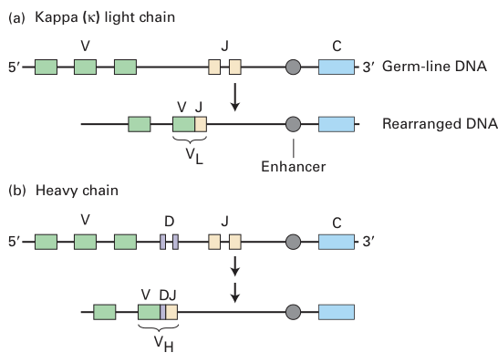
| Heavy chain | 重链 |
| light chain | 轻链 |
| Kappa | κ |
| VH | 重链可变区（VH） |
| VL | 轻链可变区（VL） |
| Germ-line DNA | 胚系DNA |
| Rearranged DNA | 重排后DNA |
| Enhancer | 增强子 |
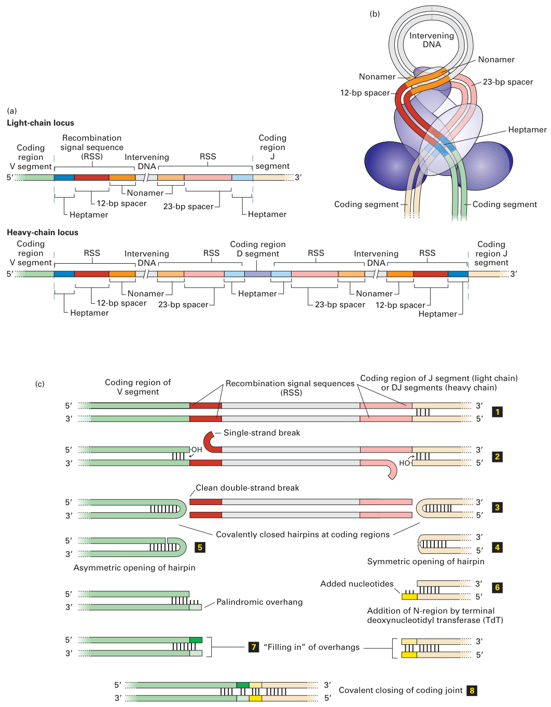
| Coding region | 编码区 |
| J segment | J片段 |
| V segment | V片段 |
| D segment | D片段 |
| Recombination signal sequence (RSS) | 重组信号序列（RSS） |
| Light-chain locus | 轻链基因座 |
| Heavy-chain locus | 重链基因座 |
| Heptamer | 七聚体 |
| Nonamer | 九聚体 |
| 12-bp spacer | 12 bp间隔区 |
| 23-bp spacer | 23 bp间隔区 |
| Intervening DNA | 间隔DNA |
| Single-strand break | 单链断裂 |
| Clean double-strand break | 干净的双链断裂 |
| Asymmetric opening of hairpin | 发夹的不对称打开 |
| Palindromic overhang | 回文悬垂 |
重组信号序列 对轻链和重链区域所作的详细DNA序列分析显示，每个V基因片段的3′端都有一个保守的序列元件。这个称为重组信号序列（RSS）的保守元件由七聚体和九聚体序列组成，二者之间隔着一个23 bp的间隔区。每个J片段的5′端也有一个相似的保守RSS，其中含有一个12 bp的间隔区（图23-16a）。12 bp和23 bp的间隔区分别把保守的七聚体和九聚体序列隔开一个和两个DNA双螺旋圈。
体细胞重组由两种酶催化，即RAG1和RAG2重组酶，它们只在淋巴细胞中表达（图23-17）。因此这些重排不会在体内任何其他细胞中发生。待连接的两个基因片段的并置由RAG1/RAG2复合体稳定（图23-16b）。随后重组酶在每个编码序列与其相邻RSS的确切边界处做一个单链切口。只有具有间隔区长度不同的七聚体-九聚体RSS的基因片段才能进行这类重排（即所谓的12/23 bp间隔区规则）。切割位点上每个新产生的–OH基团随后对互补链发起亲核攻击，在两个编码端各形成一个共价闭合的发夹，并在RSS末端产生双链断裂。包含Ku70和Ku80蛋白的蛋白质复合体把这个复合体维系在一起，使即将连接的末端保持紧密靠近：染色体中的双链断裂需要修复，因此必须把末端握在一起，这些断裂的解析和修复才能进行。RSS末端随后被共价连接，既不丢失也不添加核苷酸，产生一个含中间DNA的环状反应产物（缺失环），而该中间DNA则完全丢失。参与重组的各编码片段的发夹末端随后被打开，并按图23-16c所示最终连接，从而完成重组过程。
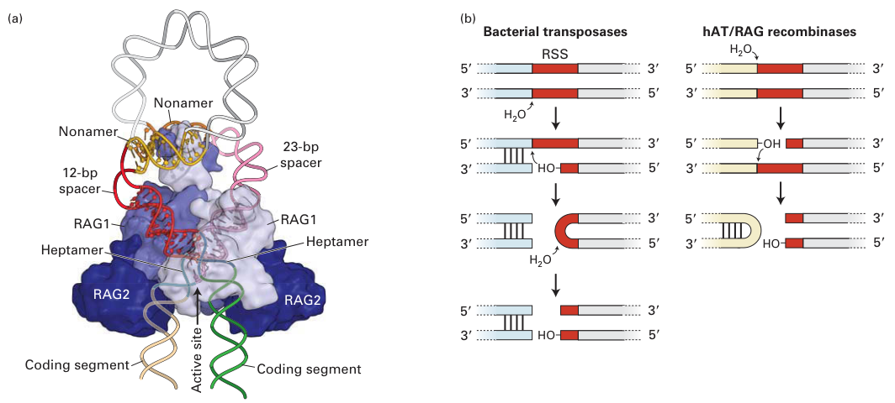
| Bacterial transposases | 细菌转座酶 |
| hAT/RAG recombinases | hAT/RAG重组酶 |
| RAG1 | RAG1 |
| RAG2 | RAG2 |
| Coding segment | 编码片段 |
| Heptamer | 七聚体 |
| Nonamer | 九聚体 |
| Active site | 活性位点 |
| 12-bp spacer | 12 bp间隔区 |
| 23-bp spacer | 23 bp间隔区 |
刚才描述的这种重组机制称为缺失性连接，它发生在所涉及的V基因片段与轻链基因座上其他基因片段具有相同转录方向时。然而，有些V基因片段具有相反的转录方向。这些片段通过一种称为倒位性连接的机制与J片段连接，此时V片段被倒转，中间的DNA和RSS不会从基因座中丢失。
RAG蛋白合成上的缺陷会彻底消除体细胞基因重排的可能。如下文所述，重排过程对B细胞发育至关重要；因此，RAG缺陷会导致B细胞完全缺失。RAG基因功能有缺陷的人患严重的免疫缺陷。在小鼠中定向敲除RAG基因同样会造成免疫球蛋白（以及T细胞受体）基因重排的完全缺陷，导致B、T淋巴细胞生成上的发育阻滞。
连接不精确性 除了随机选择V和J基因片段之外，对体细胞重组过程中产生的中间体进行加工，提供了扩展免疫球蛋白序列变异的又一途径。这种额外的变异产生于待连接片段的接合处。而编码端发夹的打开是这一过程的关键步骤：这种打开可以是对称的，也可以是不对称的（见图23-16c，步骤4和5）。蛋白Artemis负责打开发夹，其功能需要DNA依赖性蛋白激酶的催化亚基。
如果发夹以不对称方式打开，就会产生一段短的单链回文序列。DNA聚合酶把这段悬垂补齐，结果添加了几个核苷酸，称为P-核苷酸，它们不属于相关基因片段原有的编码区。或者，悬垂也可被外切核酸酶切除，结果从原有编码区中移除核苷酸。这些可能情况同样适用于V和J编码区。发夹的对称打开保留了原有的全部编码信息。不过，即使发夹是对称打开的，DNA分子的末端也倾向于"呼吸"，产生短的单链序列，这些序列也可能被核酸酶攻击。一旦发夹被打开、编码端被加工，末端就由两种蛋白质——DNA连接酶IV和XRCC4——连接起来，生成一个有功能的轻链基因。
这种重排过程固有地带来连接不精确性，部分原因是在编码区接合处添加和丢失核苷酸。当一个V片段和一个J片段重组时，VJ产物的序列和阅读框无法预测。每三次重组反应中只有一次产生的阅读框与轻链合成相容。其余的产生移码，不编码有功能的蛋白质。
因此，轻链多样性不仅来自V和J基因片段的组合使用，也来自连接不精确性。对轻链三维结构的观察表明，连接不精确性所产生的高度多样的接合处构成一个环——高变区3（HV3）——的一部分，该环伸入抗原结合位点并与抗原接触（见图23-13b）。
重链基因座的重排涉及V、D、J基因片段
重链基因座的组织结构比κ轻链基因座更为复杂。重链基因座不仅含有大量串联排列的V片段（每个都带有自己的启动子）和多个J片段，还含有多个D（多样性）片段（见图23-15b）。一个V、一个D和一个J片段的体细胞重组生成编码重链可变区（VH）的重排序列。
在重链DNA中每个V片段的3′端，都有由间隔DNA隔开的保守七聚体和九聚体序列，与轻链DNA中的重组信号序列（RSS）相似。在每个D片段的5′端和3′端也发现这些RSS呈互补且反向平行的构型（见图23-16a）。J片段同样在其5′端配备了所需的RSS。这些RSS中间隔区的长度使得D片段能与J片段连接，V片段能与已重排的DJ片段连接。然而，不允许直接的V到J连接，也不允许D到D连接，这符合12/23 bp间隔区规则。重链的重排通过上文所述与轻链重排相同的机制进行。
在B细胞发育过程中，重链基因座总是最先重排，从D-J重排开始。D-J重排之后是V-D-J重排。在D-J和V-D-J重排过程中，一种称为末端脱氧核苷酸转移酶（TdT）的酶可以以不依赖模板的方式向DNA上游离的3′ OH端添加核苷酸。每当发生D-J和V-D-J重排时，最多可添加十几个核苷酸，称为N区或N-核苷酸，在接合处产生额外的序列多样性（见图23-16c，步骤7）。每三次重排中只有一次产生重排后VDJ序列的适当阅读框。如果重排产生的序列编码有功能的蛋白质，就称为生产性的。虽然重链基因座存在于两条同源染色体上，但只允许发生一次生产性重排，我们将在下文看到这一点。
位于J片段簇下游、恒定区片段上游的一个增强子激活重排后VDJ序列5′端启动子的转录（见图23-15）。重排后重链基因产生的初级转录本经剪接生成编码μ重链的有功能mRNA。对于重链基因和轻链基因而言，体细胞重组都把V片段上游的启动子置于转录所需的增强子的有效作用范围之内，因此只有重排后的VJ和VDJ序列被转录，而仍处于胚系构型的V片段则不转录。
体细胞高频突变使得能够产生和选择亲和力提高的抗体
除了体细胞重组和连接不精确性之外，被抗原激活的B细胞还可以经历一种额外的多样性产生过程，称为体细胞高频突变。在接触抗原并接受适当的额外信号（其中大部分由T细胞提供）之后，活化诱导性脱氨酶（AID）的表达被开启。这种酶使胞嘧啶残基脱氨基，将其转变为尿嘧啶。当携带这一损伤的B细胞复制时，它可能在互补链上放上一个腺嘌呤，从而产生G到A的转换（见图5-34）。或者，尿嘧啶可被DNA糖基化酶切除，产生一个无碱基位点。此类无碱基位点在被拷贝时，可能产生转换，也可能产生颠换，除非缺口对面的核苷酸正是原本与胞嘧啶靶标配对的那个G。因此，随着B细胞每一轮相继的分裂，突变不断累积，在重排后的VJ和VDJ片段中产生大量突变。易出错的DNA聚合酶对核苷酸切除修复所造成的缺口进行的填补，也参与体细胞高频突变。
体细胞高频突变过程发生在淋巴细胞驻留于称为生发中心的特化微解剖结构之时。这些结构在免疫接种后出现于次级淋巴器官的滤泡内，由数千个快速增殖并发生高频突变的B细胞组成。除了B细胞之外，生发中心还含有滤泡树突状细胞（这种细胞类型充当抗原的储存库，抗原可被B细胞取回），以及少量专门提供控制B细胞的选择性信号的辅助性T细胞。AID诱导的许多体细胞突变是有害的，因为它们降低了所编码抗体对抗原的亲和力，但有些则提高了所编码抗体对抗原的亲和力。在与达尔文进化类似的过程中，携带提高亲和力突变的B细胞在从滤泡树突状细胞获取抗原方面具有选择优势，这使它们能够成功竞争来自生发中心内数量有限的辅助性T细胞的信号，如23.6节所述。这些信号因此触发对较高亲和力B细胞的克隆选择，使其进一步增殖并发生更多突变，同时也分化为分泌抗体的浆细胞或记忆B细胞。最终结果是产生一个B细胞群体，其抗体通常对抗原表现出更高的亲和力。
在免疫应答过程中，或在反复免疫接种之后，适应性免疫应答会表现出亲和力成熟——即抗体的平均抗原亲和力随抗原暴露后时间的推移而升高——这是体细胞高频突变和选择的结果。在这一阶段之后产生的抗体，对抗原的亲和力达到纳摩尔（或更高）范围。出于尚不清楚的原因，AID的活性主要集中在重排后的VJ和VDJ片段上，因此这种靶向可能需要活跃的转录。体细胞高频突变的整个过程严格依赖抗原，并且绝对需要B细胞与某些T细胞类型之间的相互作用。
B细胞发育需要来自前B细胞受体的输入信号
正如我们所见，注定要产生免疫球蛋白的B细胞必须重排必要的基因片段，以组装有功能的重链和轻链基因。这些重排在B细胞发育过程中以严格有序的顺序发生，从重链重排开始。此外，重排后的重链首先被用来构建一种膜结合型受体，该受体执行一项细胞命运决定，通过允许随后发生轻链基因的重排来驱动B细胞进一步发育（以及抗体合成）。只有产生框内VDJ组合的生产性重排才能生成完整的μ重链。这种μ链的产生作为一种信号传给B细胞，表明它已成功完成重排，不再需要对剩余基因拷贝上的重链基因座作进一步重排。回想一下，每个淋巴细胞前体一开始都带有两条携带免疫球蛋白基因座的同源染色体，处于胚系（未重排）构型。根据克隆选择理论（该理论规定每个淋巴细胞应当只装备一种抗原特异性受体），继续重排将带来产生具有两种不同重链、且各自特异性不同的B细胞的风险——这是一个不希望出现的结果。
因此，重链基因座中V、D和J片段的成功重排使得能够合成完整的μ链。处于这一发育阶段的B细胞称为前B细胞，因为它们尚未完成有功能轻链基因的组装，因此不能进行抗原识别。μ链在内质网中合成，并成为一种膜结合型信号受体的组成部分，该受体的表达对于B细胞有序发育是必需的。
在前B细胞中，新合成的μ链与两条所谓的替代轻链λ5和VpreB形成复合物（图23-18）。μ链本身没有胞质尾，因此不能招募胞质组分来进行信号转导。相反，前B细胞表达两种辅助性跨膜蛋白，称为Igα和Igβ，它们各自的胞质尾中都带有一个免疫受体酪氨酸激活基序，即ITAM。包括μ链、λ5、VpreB、Igα和Igβ在内的整个复合物构成前B细胞受体（pre-BCR）。该受体被（未知的）适当信号接合后，会招募并激活一种Src家族酪氨酸激酶，后者使ITAM中的酪氨酸残基磷酸化。ITAM以磷酸化形式招募其他对信号转导至关重要的分子（见下文）。由于该受体中还没有有功能的轻链，据推测它不能识别抗原，因为抗原结合位点由重链和轻链共同贡献（见图23-14）（骆驼科动物除外）。
前B细胞受体有几个重要功能。第一，它关闭RAG重组酶的表达，使另一个（等位）重链基因座的重排无法进行。这一称为等位基因排斥的现象确保重链基因座的两个可用拷贝中只有一个会发生重排，从而表达为完整的μ链。第二，由于前B细胞受体与Igα和Igβ结合，该受体成为一个有功能的信号转导单元。由pre-BCR发出的信号启动前B细胞增殖，以扩大那些已发生生产性D-J和V-D-J重组的B细胞的数量。
在这一扩增过程中，替代轻链VpreB和λ5的表达逐渐减弱。随着每一次相继的细胞分裂，VpreB和λ5被逐步稀释，导致内质网中组装完整的pre-BCR不足。其结果是，重链被降解（见第13章和第14章），pre-BCR信号的量随之下降。信号的这一减少使得RAG重组酶的表达重新启动，此时它们以κ或λ轻链基因座为靶标。生产性的轻链V-J重排也会关闭等位基因座的重排（等位基因排斥）。在成功完成V-J轻链重排之后，B细胞就能产生μ重链和κ或λ轻链，并把它们组装成有功能的B细胞受体（BCR），该受体能够识别抗原（见图23-18）。
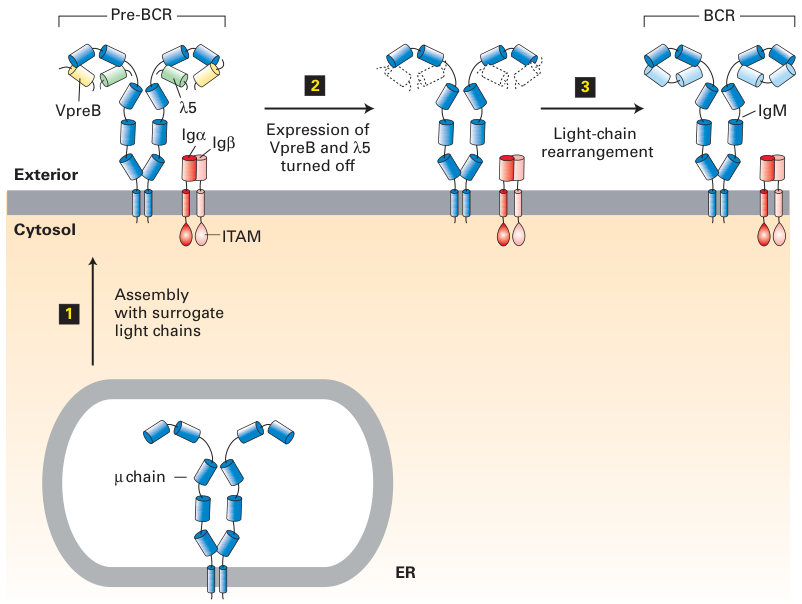
| Pre-BCR | 前B细胞受体（pre-BCR） |
| BCR | B细胞受体（BCR） |
| μ chain | μ链 |
| VpreB | VpreB |
| λ5 | λ5 |
| Igα | Igα |
| Igβ | Igβ |
| IgM | IgM |
| ITAM | 免疫受体酪氨酸激活基序（ITAM） |
| ER | 内质网（ER） |
| Cytosol | 胞质溶胶 |
| Exterior | 外侧 |
| Surrogate light chain | 替代轻链 |
| Light-chain rearrangement | 轻链重排 |
| Expression of VpreB and λ5 turned off | VpreB和λ5表达关闭 |
一旦B细胞在其细胞表面表达完整的BCR，它就能识别抗原，而B细胞活化和分化的所有后续步骤都需要与该BCR所特异针对的抗原接合。BCR不仅在成功遇到抗原时驱动B细胞增殖，还充当受体介导的内吞装置，这是一个必需的步骤，使B细胞能够加工所获取的抗原，并将其转化为一种信号，发出请求T淋巴细胞协助的呼叫。B细胞的这种抗原提呈功能将在后面几节中描述。
在适应性应答中，B细胞从产生膜结合型Ig转换为产生分泌型Ig
正如刚才所述，B细胞受体是一种膜结合型IgM，它赋予B细胞识别特定抗原的能力，这一事件触发该B细胞的克隆选择和增殖，从而增加对该抗原特异的B细胞的数量（见图23-12）。然而，免疫球蛋白的关键功能，如中和抗原或杀灭细菌，要求这些产物由B细胞释放出来，以便它们能在细胞外环境中积累，并在远离其产生部位的地方发挥作用。
合成膜结合型还是分泌型免疫球蛋白，是B细胞在加工重链初级转录本时做出的选择。如图23-19所示，μ基因座含有两个外显子（TM1和TM2），它们共同编码一个把IgM锚定在质膜上的C端结构域。在这两个外显子的上游有一个多聚腺苷酸化位点；第二个多聚腺苷酸化位点位于下游。如果选择下游的poly(A)位点，进一步加工就产生编码膜结合型μ的mRNA。（如上所述，这一选择是形成B细胞受体所必需的，B细胞受体包含膜结合型IgM。）如果选择上游的poly(A)位点，加工就产生分泌型μ链。其他Ig恒定区基因片段（γ、α、ε）也有类似的安排，它们各自既可指定膜结合型重链，也可指定分泌型重链。通过选择性使用poly(A)位点（而不是通过可变剪接）在膜锚定型与分泌型免疫球蛋白重链之间切换的能力，迄今是这一基因产物家族所独有的。
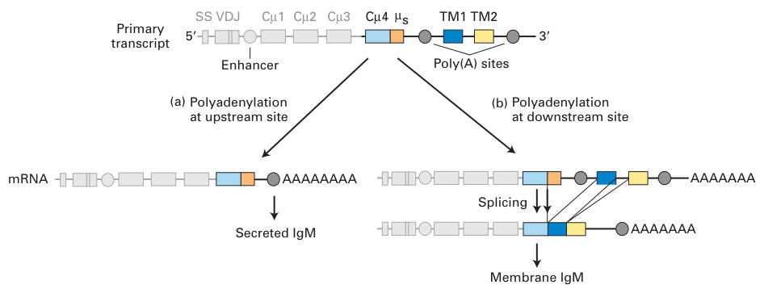
| VDJ | VDJ |
| Cμ4 | Cμ4 |
| μs | μs |
| TM1 | TM1 |
| TM2 | TM2 |
| SS | 信号序列（SS） |
| Secreted IgM | 分泌型IgM |
| Membrane IgM | 膜结合型IgM |
| Poly(A) sites | poly(A)位点 |
| Primary transcript | 初级转录本 |
| Splicing | 剪接 |
| Enhancer | 增强子 |
| Polyadenylation at upstream site | 在上游位点多聚腺苷酸化 |
| Polyadenylation at downstream site | 在下游位点多聚腺苷酸化 |
从只合成膜结合型免疫球蛋白转为合成分泌型免疫球蛋白的能力，是B细胞在分化过程中获得的。终末分化的B细胞称为浆细胞，几乎专门致力于分泌型抗体的合成（见图23-7）。每个浆细胞每秒合成并分泌数千个抗体分子。正是这种分泌型抗体产量的急剧提升，构成了适应性免疫应答在清除病原体以及防止同一病原体再次感染方面有效性的基础。抗体的保护价值与其在循环中的浓度成正比。事实上，循环抗体水平常被用作判断针对某种病原体的疫苗接种是否成功的关键参数。浆细胞大量分泌免疫球蛋白的能力需要内质网的大规模扩增，而这是浆细胞的一个标志。未折叠蛋白反应（见第13章）
在B细胞中被启动，作为一种必需的生理机制来扩增内质网，并使正在分化的B细胞为其未来作为高度活跃的分泌细胞的任务做好准备。干扰未折叠蛋白反应会消除B细胞转变为浆细胞的能力。
B细胞可以转换其所产生免疫球蛋白的同种型
在免疫球蛋白重链基因座中，编码μ链的外显子紧接在重排后VDJ外显子的下游（图23-20，上方）。它们之后是规定δ链的外显子。新重排的免疫球蛋白重链基因座的转录产生一个单一的初级转录本，其中包含μ和δ恒定区。对这个大转录本的剪接决定将产生μ链还是δ链。μ和δ外显子的下游是编码所有其他重链同种型（isotype）的外显子。编码不同同种型的每一簇外显子（δ基因座除外）的上游都有一段易于重组的重复序列（转换区），推测是因其重复性质所致。由于每个B细胞必然以表面IgM起步，涉及这些位点的重组一旦发生，就会导致从IgM向恒定区基因阵列下游编码的其他某个同种型的类别转换（见图23-20）。中间的DNA被删除。
在其分化过程中，B细胞可以依次转换Ig类别。重要的是，轻链不受这一过程影响，B细胞走上这条途径时起始的重排VDJ片段也不受影响。因此，类别转换重组产生的抗体具有不同的恒定区，但由于可变区没有改变，抗原特异性相同。每种免疫球蛋白同种型都以自己独特的恒定区为特征。如前所述，这些恒定区决定各同种型的功能特性。类别转换重组依赖于活化诱导性脱氨酶（AID）的活性，也依赖于抗原的存在以及辅助性T细胞。体细胞高频突变和类别转换重组同时发生，二者的共同作用使得适应性免疫应答能够在所产生抗体的亲和力和所采用的效应功能方面得到精细调节。
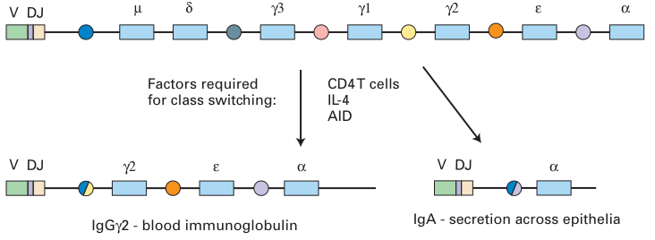
| CD4 T cells | CD4 T细胞 |
| IL-4 | IL-4 |
| AID | 活化诱导性脱氨酶（AID） |
| Factors required for class switching | 类别转换所需的因子 |
| V-DJ | V-DJ |
| IgG | IgG |
| IgA | IgA |
| blood immunoglobulin | 血液免疫球蛋白 |
| secretion across epithelia | 经上皮分泌 |
- 有功能的抗体编码基因是通过重链和轻链基因座上多个DNA片段的体细胞重排产生的。这些重排涉及免疫球蛋白轻链的V和J片段，以及免疫球蛋白重链的V、D和J片段（见图23-15）。
- 免疫球蛋白基因片段的重排由保守的重组信号序列（RSS）控制，RSS由七聚体和九聚体组成，二者之间隔有12 bp或23 bp的间隔区（见图23-16）。只有间隔区长度不同的片段才能成功重排：待连接的两个片段必须分别具有12 bp和23 bp的间隔区，而不能两者长度相同。
- 执行重排过程的分子机器包括只在淋巴细胞中产生的蛋白质（重组酶RAG1和RAG2），但其他类型细胞也使用的另一些蛋白质则参与DNA分子的非同源末端连接。
- 抗体多样性一方面来自对待重组的Ig基因片段的随机选择，另一方面来自重排后Ig基因所产生的重链和轻链分别与许多不同的轻链和重链结合的能力。
- 连接不精确性在体细胞基因重排所汇合的基因片段接合处产生额外的抗体多样性。
- 进一步的抗体多样性在B细胞遇到抗原之后由体细胞高频突变产生，高频突变可导致产生最高亲和力抗体的B细胞被选择并增殖，这一过程称为亲和力成熟。
- 在B细胞发育过程中，重链基因先重排，导致前B细胞受体的表达。随后轻链基因的重排导致含膜结合型IgM的B细胞受体的组装（见图23-18）。
- 重链基因座和轻链基因座的两个等位基因拷贝中只有一个发生重排（等位基因排斥），从而确保一个B细胞表达具有单一抗原特异性的Ig。
- Ig初级转录本在不同poly(A)位点上的多聚腺苷酸化决定了产生的是膜结合型还是分泌型抗体（见图23-19）。
- 在免疫应答过程中，类别转换使B细胞能够调整所产生抗体的类别，从而调整所产生免疫球蛋白的效应功能，同时保留抗体对抗原的特异性（见图23-20）。
23.4 MHC与抗原提呈
抗体无需其他分子参与即可识别抗原；抗原与抗体的存在就足以使二者相互作用。B细胞在分化过程中接受T细胞的协助，这一过程将在下文详述。该过程字面上称为T细胞辅助，它具有抗原特异性，负责提供这种辅助的T细胞即辅助性T细胞。尽管抗体有助于清除细菌和病毒病原体，但有时还必须摧毁受感染的宿主细胞，因为它们可能成为新病毒颗粒的来源。这项任务由细胞毒性T细胞完成。辅助性T细胞和细胞毒性T细胞都利用抗原特异性受体，这些受体由与B细胞产生免疫球蛋白基因所用机制类似的机制所产生，包括基因重排。然而，T细胞识别其同源抗原的方式与B细胞大不相同。T细胞上的抗原特异性受体识别蛋白抗原的短小片段，但只有当这些片段是存在于"抗原提呈"细胞外表面的糖蛋白复合体的一部分时才能做到。编码提呈抗原片段的膜糖蛋白复合体的基因，位于基因组DNA中一个称为主要组织相容性复合体（MHC）的区域。各种抗原提呈细胞在正常活动过程中消化病原体来源的蛋白质（以及它们自身的蛋白质），然后在其细胞表面"提呈"由MHC蛋白与蛋白片段（肽）结合而成的物理复合物。T细胞可以审视这些复合物，如果检测到与MHC分子结合的病原体来源肽，T细胞就会采取适当行动，其中可能包括杀死携带该MHC-肽复合物的细胞。本节中，我们先描述MHC及其编码的蛋白质，然后探讨MHC分子如何参与抗原提呈以及T细胞对抗原的识别。
MHC决定同种内两个无亲缘关系个体接受或排斥移植物的能力
正如其名称所示，主要组织相容性复合体最初是作为控制组织移植物接受或排斥的遗传位点而被发现的。当时组织培养尚未发展到能在实验室中培养肿瘤来源细胞系的阶段，研究者只能依靠在体内连续传代肿瘤组织（即把肿瘤从一只小鼠移植到另一只小鼠）。人们很快观察到，在某近交系小鼠中自发产生的肿瘤可以在其起源的品系中成功传代，但在遗传上不同的品系中则不能。遗传分析很快表明，单一的主要遗传位点决定了这一行为。同样，健康皮肤的移植在同一品系小鼠之间可行，但当受者来自遗传背景不同的品系时则不可行。对移植排斥的遗传分析同样鉴定出一个单一的主要位点——正是负责肿瘤排斥的那一个——它控制着接受或排斥，而这是一种免疫反应。正如我们现在所知，所有具有适应性免疫系统的脊椎动物，都有一个对应于最初在小鼠中定义的主要组织相容性复合体的基因区域。
在小鼠中，负责移植物排斥的基因区域称为H-2复合体（图23-21a）。在人类中，编码MHC的基因区域是在研究接受多次输血并由此引发免疫反应的患者时被发现的。人类的MHC区域称为HLA复合体（图23-21b）。典型的哺乳动物MHC包含数十个基因，其中许多编码与免疫学相关的蛋白质。所有脊椎动物的MHC都编码一组高度同源的蛋白质，尽管其组织形式和基因组成的细节在物种之间存在相当大的差异，如家鸡、小鼠和人所显示的那样。脊椎动物中的大多数细胞都表达MHC蛋白，因而具有向免疫系统提呈抗原肽以供识别的潜能。
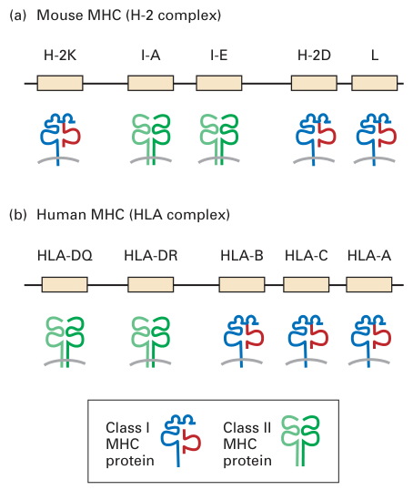
| Mouse MHC (H-2 complex) | 小鼠MHC（H-2复合体） |
| Human MHC (HLA complex) | 人MHC（HLA复合体） |
| Class I MHC protein | I类MHC分子 |
| Class II MHC protein | II类MHC分子 |
| H-2K | H-2K |
| H-2D | H-2D |
| I-A | I-A |
| I-E | I-E |
| HLA-A | HLA-A |
| HLA-B | HLA-B |
| HLA-C | HLA-C |
| HLA-DQ | HLA-DQ |
| HLA-DR | HLA-DR |
有趣的是，人类胎儿可以视为母亲体内的一块组织移植物：胎儿与母亲只共享一半的遗传物质，另一半由父亲提供。父源等位基因编码的抗原可能与母源对应物差异足够大，从而在母亲体内引发免疫应答。这种应答之所以会发生，是因为在妊娠过程中，脱落到母体循环中的胎儿细胞可以刺激母体免疫系统产生针对父源抗原的抗体应答。我们现在知道，这些抗体识别的正是人类MHC编码的蛋白质。胎儿本身之所以能免遭排斥，是因为胎盘具有特殊的组织方式，阻止了母亲对胎儿组织发起免疫应答。
细胞毒性T细胞的杀伤活性具有抗原特异性和MHC限制性
显然，MHC分子并非为了阻止外科移植物的交换而进化。MHC分子在细胞毒性T细胞（又称细胞溶解性T淋巴细胞，CTL）识别病毒感染细胞的过程中发挥关键作用。在病毒感染细胞中，MHC分子与来自病毒的蛋白片段相互作用，并将这些片段展示在细胞表面，供肩负清除感染使命的CTL识别。这类抗原片段如何产生与展示将在下文描述。当CTL的受体能够识别某一特定的肽-MHC复合物时，它们便向受感染的靶细胞倾泻大量致死分子，破坏靶细胞膜。这些靶细胞物理性崩解时其胞质内容物会释放出来，据此可以很方便地测定其被破坏的程度。因此，CTL杀伤受感染的宿主细胞需要：(1)宿主细胞表面由MHC提呈来自病原体的抗原肽；(2)CTL表面表达能识别MHC-抗原复合物的抗原-MHC特异性T细胞受体；(3)一旦T细胞受体与MHC-抗原复合物结合，CTL的杀伤机器即被激活。
从某种病毒感染中康复的小鼠，是能够识别并杀死感染同一病毒的靶细胞的CTL的现成来源。如果从成功清除流感病毒感染的小鼠中获取CTL，则可观察到它们对流感病毒感染的靶细胞有细胞毒性活性，而对未感染的对照细胞没有（图23-22）。此外，流感特异性CTL不会杀死感染其他病毒（如水疱性口炎病毒）的靶细胞。CTL甚至能区分亲缘关系很近的流感病毒株，而且精度极高：病毒抗原中单个氨基酸的差异就足以阻止CTL的识别和杀伤。这些实验表明，CTL确实具有抗原特异性，而不是仅仅识别所有病毒感染细胞共有的某种特征，而不论病毒是什么。
在这个例子中，假定从流感免疫小鼠中采集的CTL是在来自同一小鼠品系（a品系）的流感病毒感染靶细胞上测定的。然而，如果用来自一个完全无关的小鼠品系（b品系）的靶细胞感染同一株流感病毒并用作靶细胞，则来自a品系小鼠的CTL无法杀死被感染的b品系靶细胞（见图23-22b，1与4）。因此，仅仅存在抗原（一种流感来源的蛋白）还不够；CTL对抗原的识别受到小鼠品系特异性元件的限制。遗传作图表明，这些限制元件由MHC中的基因编码。因此，来自一个对流感免疫的小鼠品系的CTL，只有在两个品系的相关MHC分子的MHC位点相匹配时，才能杀死来自另一小鼠品系的流感病毒感染靶细胞。这一现象因此被称为MHC限制性，所涉及的MHC分子称为限制元件。
功能特性不同的T细胞由两类不同的MHC分子引导
MHC编码两类对免疫识别必不可少的糖蛋白，通常称为I类和II类MHC分子。比较小鼠和人的MHC遗传图谱可以发现，二者都存在若干I类MHC基因和若干II类MHC基因，尽管它们的排列在两个物种之间存在差异（见图23-21）。除I类和II类MHC分子外，MHC还编码抗原加工（如蛋白水解）与提呈机器的关键组分。最后，典型的脊椎动物MHC还编码补体级联反应的组分。
I类和II类MHC蛋白都参与向T细胞提呈抗原，但它们承担两种大体不同的功能。I类MHC产物向细胞毒性T细胞提呈抗原，授权后者摧毁受感染的细胞。细胞毒性T细胞以I类MHC分子作为其主要限制元件。这类T细胞的特征是表达CD8，这是一种表面糖蛋白，决定携带它的T细胞与I类MHC产物相互作用的能力。大多数（如果不是全部）有核细胞都组成性表达I类MHC分子，其中许多能支持病毒复制。细胞毒性T细胞随后通过展示病毒来源抗原（肽）的表面I类MHC分子，识别并杀死受感染的细胞。
II类MHC产物仅见于特化的抗原提呈细胞，也称为专职APC。这些APC通过II类MHC分子向一类称为辅助性T细胞的T淋巴细胞提呈抗原。这种提呈是适应性免疫应答的起点，该应答还使细胞毒性T细胞能够杀死其靶细胞，并帮助B细胞产生抗原特异性抗体。B细胞若没有辅助性T细胞的协助，就不能最终分化成分泌抗体的浆细胞。辅助性T细胞表达一种称为CD4的表面糖蛋白，并以II类MHC分子作为限制元件。II类MHC分子的组成性表达仅限于专职APC，包括B细胞、树突状细胞和巨噬细胞。（其他若干细胞类型，如某些上皮细胞，在特定情况下可被诱导表达II类MHC分子，但我们将不讨论它们。）再者，描述II类MHC分子表达、组装及抗原提呈方式的细胞生物学基础，与这种功能特化相当契合，这一点我们将在下文看到。
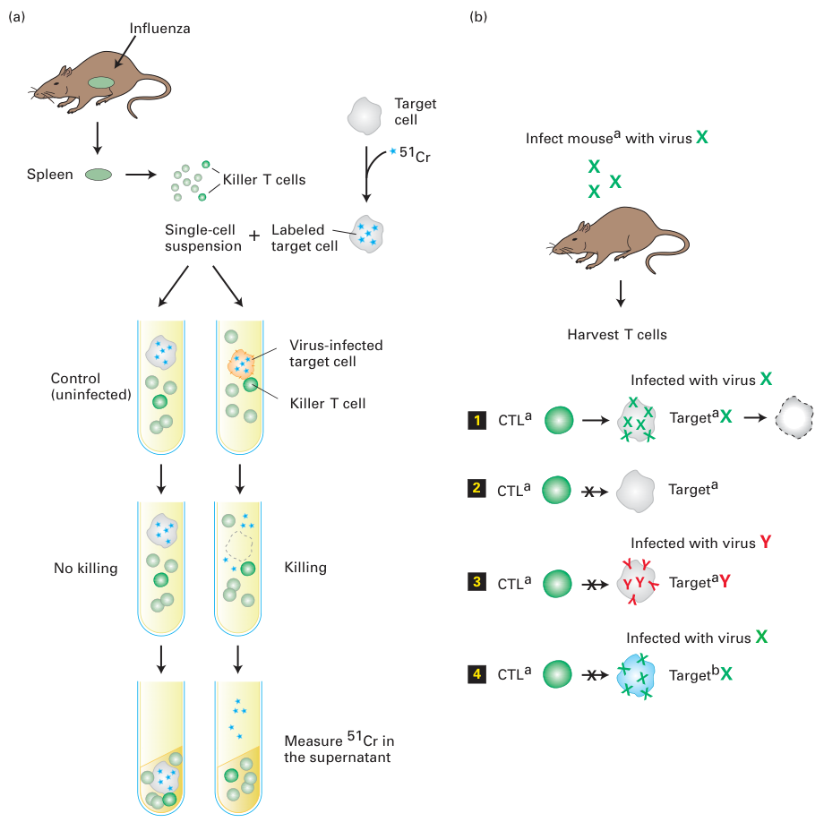
| Influenza | 流感 |
| Spleen | 脾 |
| Killer T cells | 杀伤性T细胞 |
| Single-cell suspension | 单细胞悬液 |
| Virus-infected target cell | 病毒感染靶细胞 |
| Killing | 杀伤 |
| No killing | 无杀伤 |
| Measure 51Cr in the supernatant | 测定上清中的51Cr |
| Labeled target cell | 标记靶细胞 |
| Control (uninfected) | 对照（未感染） |
| Harvest T cells | 收获T细胞 |
| CTL | CTL |
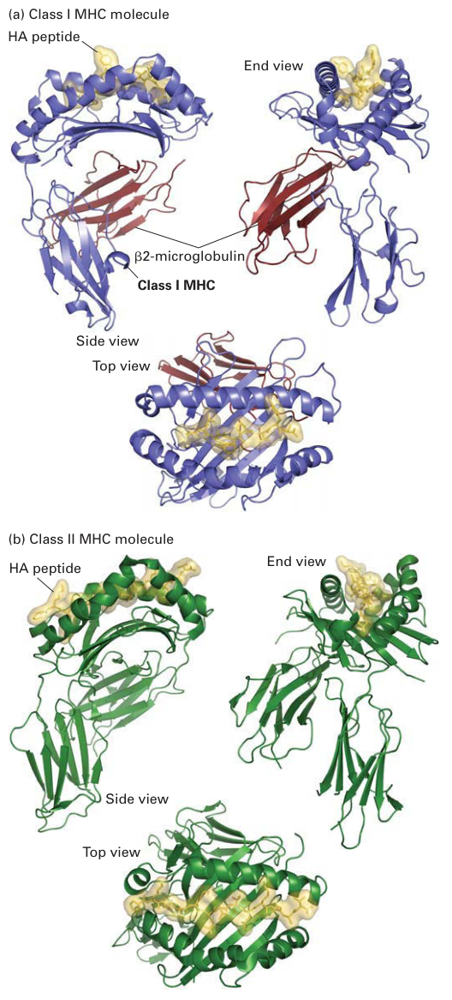
| Top view | 俯视图 |
| Side view | 侧视图 |
| End view | 端视图 |
| Class I MHC molecule | I类MHC分子 |
| Class II MHC molecule | II类MHC分子 |
| HA peptide | HA肽 |
| β2-microglobulin | β2-微球蛋白 |
由此可见，功能不同的两大类T淋巴细胞——细胞毒性T细胞和辅助性T细胞——可以通过它们展示在细胞表面的独特膜蛋白谱，以及它们用作限制元件的MHC分子来区分：
● 细胞毒性T细胞：CD8标志；受I类MHC限制。
● 辅助性T细胞：CD4标志；受II类MHC限制。
CD4和CD8，以及免疫系统的许多其他蛋白质（包括B细胞和T细胞受体以及多聚IgA受体），都属于免疫球蛋白（Ig）蛋白超家族，该家族的蛋白质都具有一个或多个Ig结构域。CD8的表达与以I类MHC分子作为限制元件之间的严格相关性，或者说CD4的表达与以II类MHC分子作为限制元件之间的严格相关性，其分子基础将在MHC分子的结构和作用方式得到描述之后变得清晰。
MHC分子结合肽抗原并与T细胞受体相互作用
I类和II类MHC分子都高度多态；也就是说，同一物种的个体之间存在许多等位变异体。脊椎动物的免疫系统能够对这些等位差异作出应答，其识别等位MHC变异体的能力，正是涉及无亲缘关系、遗传上不同的个体之间移植物遭排斥的免疫学根源。然而，这两类MHC分子在许多方面结构相似，它们与肽和T细胞受体的相互作用也相似（图23-23）。
编码I类和II类MHC分子的基因存在许多多态性（指某一给定位点上包含多个等位变异体的遗传差异）。人类所有MHC产物合计有2000多个不同的等位基因。
MHC分子对于识别"自身"组织并将其与"非自身"（因而可能具有致病性）物质区分开来尤为重要。一般来说，除近亲外，任意两个个体共享相同MHC变异体的几率极低。移植物受者与供者之间MHC分子的任何个体间差异都会被受者的免疫系统识别，后者将移植物视为异物并将其清除（移植物排斥）。供者与移植受者的MHC等位基因集合越相似，移植被接受的机会就越大。这就是外科医生要寻找MHC"匹配"的个体来捐献器官的原因。如果供者的组织型（MHC等位基因）与受者不完全匹配，就必须使用抑制受者免疫应答的药物来防止器官排斥。
免疫系统藉以获得区分"自身"与"非自身"（或有致病性与无致病性）能力的细胞生物学机制十分复杂，但值得理解。理解免疫的分子与细胞基础，对医学和公共卫生具有巨大的实际意义。因此，我们将详细讨论这些分子与细胞机制。
I类MHC分子 I类MHC分子属于Ig超家族，由两个多肽亚基组成。较大的亚基是I型膜糖蛋白（见图13-10），在哺乳动物基因组的MHC区域有多个独立的基因拷贝。较小的β2-微球蛋白亚基不由MHC编码，其结构相当于一个Ig结构域。人类I类MHC分子的较大亚基由HLA-A、HLA-B和HLA-C位点编码（见图23-20），其中每一个位点在个体间都表现出广泛的等位变异。在小鼠中，I类MHC分子的较大亚基由H-2K和H-2D位点编码，二者同样都有许多已知的等位变异体。
I类MHC分子的三维结构显示有两个靠近膜的Ig样结构域（见图23-23a）。这两个结构域支撑着一个由八条β链组成的β折叠，其上方覆盖着两条α螺旋。β折叠与螺旋共同形成一个两端封闭的槽，肽即结合于其中。I类MHC分子结合肽的方式要求肽长约8–10个氨基酸，这样肽的两端才能塞进容纳末端带电荷氨基和羧基的口袋中。此外，肽通过少量氨基酸侧链锚定在肽结合槽中，每一个侧链都由MHC分子中恰好能容纳该特定氨基酸残基的口袋所接纳（图23-24a）。平均而言，必须有两个这样的"特异性口袋"被正确填充才能实现稳定的肽结合，这就把结合限制在侧链能装入这些口袋的肽上。通过这种方式，一个给定的MHC分子可以容纳大量序列多样但受到限定的肽。
区分不同等位MHC分子的多态残基主要位于肽结合槽内部及其周围。因此，这些残基决定了肽结合口袋的结构，从而决定肽结合的特异性。此外，这些多态残基还影响MHC分子上与T细胞受体接触的表面。因此，能够与某一特定I类MHC等位基因相互作用的T细胞受体，通常不会与无关的MHC分子相互作用，因为它们的表面结构不同（图23-24b）；这就是MHC限制性的分子基础。细胞毒性T细胞上的CD8分子起共受体作用，与I类MHC分子的保守部分结合。因此，CD8的存在"设定"了任何携带它的成熟T细胞对I类MHC的偏好。
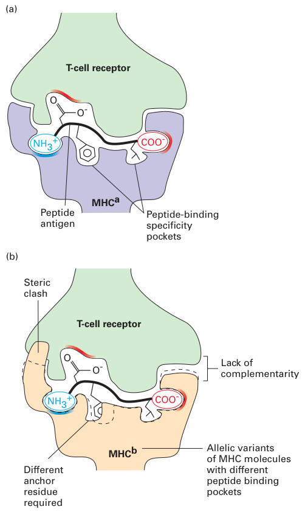
| Allelic variants of MHC molecules with different peptide binding pockets | 具有不同肽结合槽的MHC分子等位变异体 |
| T-cell receptor | T细胞受体 |
| Peptide antigen | 肽抗原 |
| Peptide-binding specificity pockets | 肽结合特异性口袋 |
| Steric clash | 空间位阻冲突 |
| Different anchor residue required | 需要不同的锚定残基 |
| Lack of complementarity | 缺乏互补性 |
II类MHC分子 II类MHC分子的两个亚基（α和β）都是Ig超家族的I型膜糖蛋白。典型的哺乳动物MHC包含若干编码II类MHC分子的位点（见图23-21）。与I类分子的较大亚基一样，II类分子的α和β亚基都表现出遗传多态性。
II类MHC分子的基本三维设计与I类MHC分子相似：两个靠近膜的Ig样结构域支撑着带有肽结合槽的肽结合部分（见图23-23b）。在II类MHC分子中，α和β亚基对肽结合槽的构建贡献相等。该槽两端开放，因此能够支持比结合I类MHC分子的肽更长的肽结合，因为肽可以从槽的两端伸出。肽结合的方式既涉及容纳特定肽侧链的口袋，也涉及MHC分子侧链与所结合肽的主链原子之间的接触。与I类MHC一样，II类MHC的多态性主要影响肽结合槽内部及周围的残基，因此不同等位产物的肽结合特异性通常不同。与某一特定II类MHC分子相互作用的T细胞受体，通常不会与不同的II类MHC等位变异体相互作用，这不仅是因为不同等位MHC分子的肽结合特异性不同，也是因为那些影响与T细胞受体接触的残基的多态性；与I类MHC一样，这就是II类MHC限制性抗原识别的基础。
正如我们将看到的，II类MHC分子进化而来是为了提呈主要在内体和溶酶体中产生的肽。肽与II类MHC分子的结合就发生在这些细胞器中，而II类MHC分子在内质网中合成之后被特异性地导向这些部位。这种导向是通过一种称为恒定链的伴侣蛋白实现的，它是一种II型膜糖蛋白（见图13-10）。恒定链（Ii）在II类MHC生物合成的早期阶段起关键作用：它形成一个三聚体结构，三个II类MHC αβ异二聚体装配到其上。因此最终的装配产物由9条多肽组成：(αβIi)3。Ii与αβ异二聚体之间的相互作用涉及Ii上的一段称为CLIP片段的序列，它占据II类MHC的肽结合槽。一旦(αβIi)3复合物装配完成，该复合物就进入分泌途径，并在反式高尔基体网络处被转向内体和溶酶体（见图14-1）。负责这种转向的信号由Ii的胞质尾携带，而且这些信号并不明显符合溶酶体膜蛋白上常见的内体导向信号或回收信号的模式。一部分(αβIi)3复合物被直接送往细胞表面，并可能从那里被内化，但绝大多数最终进入晚期内体。
正如我们在I类MHC分子及其CD8共受体中所看到的，CD4共受体识别II类MHC分子上的保守特征。任何携带CD4共受体的成熟T细胞都使用II类MHC分子进行抗原识别。
抗原提呈是蛋白片段与MHC产物结合成复合物并被展示到细胞表面的过程
异物进入免疫系统的过程，是决定免疫应答最终结局的关键步骤。成功的适应性免疫应答——包括抗体的产生以及辅助性T细胞和细胞毒性T细胞的生成——若没有专职APC的参与就无法展开。正是这些细胞获取抗原、加工抗原，然后以T细胞能够识别的形式将其展示出来。抗原被转变为适合T细胞识别形式的途径，称为抗原加工与提呈。
I类MHC途径主要侧重于提呈由细胞自身合成的蛋白质（包括受感染细胞中病原体编码的蛋白质），而II类MHC途径则侧重于从APC外部获取的物质。回忆一下，所有有核细胞都表达I类MHC产物，或者可被诱导表达；考虑到有核细胞既能合成蛋白质也能合成核酸，因而原则上能够支持病毒病原体的复制，这一点就说得通了。向免疫系统警示胞内入侵者存在的能力，与I类MHC限制性抗原提呈密不可分。由APC自身合成的物质的提呈，与从细胞外获取的抗原的加工和提呈，二者之间的区分绝非绝对。I类和II类抗原加工与提呈途径合在一起，对所有需要巡查病原体存在的区室都进行了取样。
I类和II类途径中的抗原加工与提呈都可以分为六个独立的步骤，这有助于比较两条途径：(1)获取抗原；(2)标记抗原以毁灭之；(3)蛋白水解；(4)将肽递送至MHC分子；(5)肽与MHC分子结合；(6)将负载肽的MHC分子展示在细胞表面。下面我们描述每条途径的分子细节。
I类MHC途径提呈胞质抗原
图23-25以病毒感染细胞为例，概述了I类MHC途径的六个步骤。
1 获取抗原：在病毒感染的情况下，获取抗原通常等同于被感染状态。病毒依赖宿主的生物合成途径来产生新的病毒蛋白。与DNA复制不同，蛋白质合成是一个容易出错的过程，其中一部分新起始的多肽链会提前终止，或出现其他错误（氨基酸错误掺入、移码、折叠不当或延迟）。这些蛋白质合成中的错误同等地影响宿主细胞自身的蛋白质和病毒基因组所编码的蛋白质。这类含错误的蛋白质必须被迅速清除，以免堵塞胞质、与伙伴蛋白发生无效的相互作用，甚至充当某种蛋白质的显性负性形式。正确折叠的蛋白质也可能遭受损伤而导致其完全或部分解折叠，因而必须被清除。这些功能失常蛋白质的胞质蛋白水解速率，必须与蛋白质合成和折叠错误发生的速率相匹配。这些蛋白质是注定要被I类MHC分子提呈的肽的重要来源。除了一个称为交叉提呈的特殊过程（下文讨论）之外，I类MHC途径所形成的肽-MHC复合物中，肽均来自携带该I类MHC的细胞自身所合成的蛋白质。
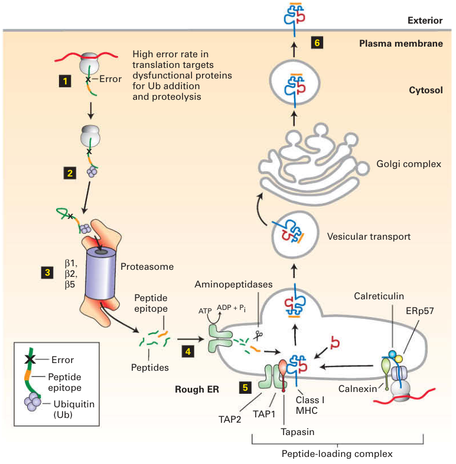
| Calnexin | 钙联蛋白 |
| Calreticulin | 钙网蛋白 |
| ERp57 | ERp57 |
| Tapasin | tapasin |
| TAP1 | TAP1 |
| TAP2 | TAP2 |
| Peptide-loading complex | 肽装载复合体 |
| Proteasome | 蛋白酶体 |
| Aminopeptidases | 氨肽酶 |
| Ubiquitin (Ub) | 泛素（Ub） |
| Peptide epitope | 肽表位 |
| Rough ER | 粗面内质网 |
| Cytosol | 胞质 |
| Plasma membrane | 质膜 |
2 标记抗原以毁灭之：在大多数情况下，多聚泛素化负责将蛋白质导向毁灭（见第3章第99页）。多聚泛素化是一种受到严格调控的共价修饰。
3 蛋白水解：多聚泛素化的蛋白质在蛋白酶体中被蛋白水解破坏。蛋白酶体是一种蛋白酶，它与底物结合后不释放中间产物，最终消化产物是大小在3–20个氨基酸范围内的肽（见图3-31）。在炎症反应过程中以及响应干扰素γ时，蛋白酶体三个具有催化活性的β亚基（β1、β2、β5）可以被三个免疫特异性亚基取代：β1i、β2i和β5i。β1i、β2i和β5i亚基由基因组的MHC区域编码。这种取代的净结果是生成免疫蛋白酶体，其产出（肽产物的长度）与I类MHC分子结合肽的要求相匹配。免疫蛋白酶体调节所产生肽的平均长度以及切割发生的位点。鉴于蛋白酶体在生成I类MHC分子所提呈的肽中处于核心地位，蛋白酶体抑制剂能有效地干扰经I类MHC途径的抗原加工。
4 将肽递送至I类MHC分子：蛋白质合成、多聚泛素化和蛋白酶体蛋白水解都发生在胞质中，而I类MHC分子结合肽则发生在内质网（ER）腔内。因此，肽必须穿过ER膜才能接触到I类分子，这一过程由异二聚体的TAP复合物介导，该复合物是ATP驱动泵ABC超家族的成员（见图11-15）。TAP复合物在ER的胞质面结合肽，并通过一个包含ATP结合和水解的循环将它们转运进入ER。TAP复合物的特异性使其只能转运所有胞质肽中的一个子集，主要是长度在5–10个氨基酸范围内的肽，这与能够装入I类MHC分子的肽长度受限相兼容。小鼠TAP复合物对以亮氨酸、缬氨酸、异亮氨酸或甲硫氨酸残基结尾的肽表现出明显的偏好，这与I类MHC分子的结合偏好相匹配。编码组成TAP复合物的TAP1和TAP2亚基的基因位于MHC区域。
5 肽与I类MHC分子的结合：在ER内，新合成的I类MHC分子是一个称为肽装载复合体的多蛋白复合物的一部分。该复合物包括两个伴侣蛋白（钙联蛋白和钙网蛋白）以及氧化还原酶Erp57。另一个伴侣蛋白（tapasin）既与TAP复合物相互作用，也与即将接受肽的I类MHC分子相互作用。TAP与I类MHC分子的空间邻近由tapasin维持。一旦肽装载到I类MHC分子上，构象变化就将已装载的I类MHC分子从肽装载复合体中释放出来。这种安排有效地确保只有负载肽的I类MHC分子才能从ER释放，随后被运输到细胞表面并在那里展示。该途径的总体效率是：要生成一个携带来自某一特定多肽的肽的MHC-肽复合物，大约必须销毁该蛋白质的4000个分子。
6 I类MHC-肽复合物在细胞表面的展示：一旦肽装载完成，I类MHC-肽复合物便从肽装载复合体中释放出来，进入组成性分泌途径（见图14-1）。从高尔基体到细胞表面的转移十分迅速，完成了I类MHC-肽复合物的生物合成途径。
I类途径中的整个事件序列在所有有核细胞中组成性地发生，这些细胞都表达I类MHC分子和其他所需的蛋白质，或者可被诱导表达。正如我们所见，暴露于诸如干扰素γ之类的细胞因子可以诱导免疫特异性蛋白酶体亚基，生成免疫蛋白酶体，其产生适合I类MHC分子提呈的肽的能力增强。在没有病毒感染的情况下，蛋白质合成和蛋白水解持续产生一连串的肽，这些肽被装载到I类MHC分子上。因此，健康正常的细胞在其表面展示来自自身蛋白质的代表性肽库。一个典型的有核细胞表面可能展示数千种不同的MHC-肽组合。正常未感染细胞表面展示MHC-自身肽复合物，在免疫系统中起着至关重要的作用。直到病毒出现，病毒来源的肽才开始对细胞表面肽-MHC复合物的展示作出贡献。
正如我们上面所指出的，功能正常的免疫系统必须能够区分自身（无致病性）抗原与非自身（可能具致病性）抗原。称为胸腺的小器官——在人类中位于心脏水平、靠近胸骨——在控制免疫系统识别自身与非自身的能力方面起关键作用。胸腺中正在发育的T细胞（称为胸腺细胞）将其抗原特异性受体校准到胸腺上皮细胞上产生的一组组MHC-肽复合物，并学会将自身MHC产物识别为路标——用免疫学的说法即限制元件——此后它们必须依赖这些路标进行抗原识别。与此同时，胸腺中自身MHC分子对自身肽的展示，使正在发育的T细胞能够了解哪些肽-MHC组合是自身来源的，因而必须被忽略，以避免自我毁灭性的自身免疫反应。因此，T细胞发育是由负载自身肽的自身MHC分子驱动的，这是一个"模板"，可据此塑造出有用的T细胞库。简单地说，任何携带与自身MHC-自身肽复合物反应过强的受体的T细胞，在离开胸腺时都是潜在危险的，必须被清除。这一选择过程将在下文讨论。
交叉提呈是常规抗原提呈方式的一个例外，但它在细胞毒性T细胞的发育中至关重要。这一术语指的是树突状细胞通过吞噬作用获取凋亡细胞残骸、由抗原与抗体结合而成的复合物以及可能的其他形式抗原。通过一条尚未完全了解的途径，这些物质从吞噬体或内体区室逃逸到胞质中，然后按照上述步骤被处理。树突状细胞进行交叉提呈的效率最高，因此使得来自APC以外细胞的肽能够装载到I类MHC分子上形成复合物。
II类MHC途径提呈被递送至内吞途径的抗原
尽管I类和II类MHC分子在结构上惊人地相似，但这两类分子获取肽的方式以及它们在抗原识别中的功能却大相径庭。I类MHC分子的主要功能是将携带CD8的细胞毒性T细胞引导至其靶细胞（通常是被感染的细胞），而II类MHC分子则用于将携带CD4的辅助性T细胞引导至与之相互作用的细胞，主要是专职APC。活化的辅助性T细胞提供保护，不仅通过帮助B细胞产生抗体，还借助它们产生的一组组复杂的细胞因子，这些细胞因子激活吞噬细胞以清除病原体，或帮助启动炎症反应。
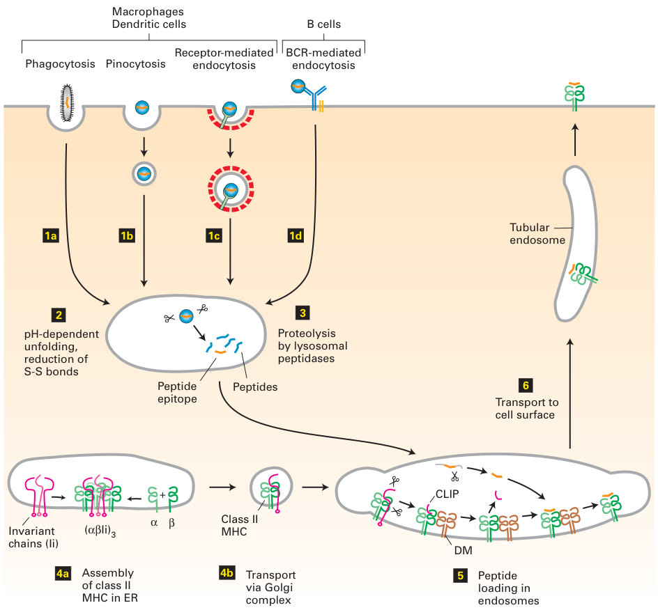
| Class II MHC | II类MHC分子 |
| Assembly of class II MHC in ER | 内质网中II类MHC的组装 |
| Invariant chains (Ii) | 恒定链（Ii） |
| CLIP | CLIP |
| DM | DM |
| Phagocytosis | 吞噬作用 |
| Pinocytosis | 胞饮作用 |
| Receptor-mediated endocytosis | 受体介导的内吞 |
| BCR-mediated endocytosis | BCR介导的内吞 |
| Peptide loading in endosomes | 内体中的肽装载 |
| Proteolysis by lysosomal peptidases | 溶酶体肽酶催化的蛋白水解 |
| Macrophages | 巨噬细胞 |
| Dendritic cells | 树突状细胞 |
| B cells | B细胞 |
如前所述，II类MHC分子主要由专职APC表达：具有吞噬能力的树突状细胞和巨噬细胞，以及不具吞噬能力的B细胞。因此，抗原加工与提呈的II类MHC途径一般只在这些细胞中发生。该途径的步骤见图23-26。
1 获取抗原：在II类MHC途径中，抗原通过胞饮作用、吞噬作用或受体介导的内吞被获取。胞饮作用相当不具特异性，它通过膜内陷和断裂的过程，递送一定体积的细胞外液及其中溶解的分子。吞噬作用是摄入细菌、病毒和死亡细胞残骸等颗粒性物质，它涉及基于肌动蛋白的细胞骨架的大规模重塑，以容纳进入的颗粒。虽然吞噬作用可能由特异性的受体-配体相互作用启动，但这并非总是必需：即使是乳胶颗粒和其他颗粒物（如玻璃珠），也能被巨噬细胞非常高效地摄入。被抗体和某些补体成分修饰的病原体被导向巨噬细胞和树突状细胞，后者通过针对补体成分或免疫球蛋白Fc部分的细胞表面受体识别它们，然后将其吞噬（图23-27）。巨噬细胞和树突状细胞还表达若干种选择性较低的受体（如C型凝集素、Toll样受体、清道夫受体），它们能识别可溶性和颗粒性抗原中的分子模式；随后这些细胞通过受体介导的内吞将结合的抗原内化。不具吞噬能力的B细胞也能利用其抗原特异性B细胞受体，通过受体介导的内吞获取抗原（图23-28）。最后，胞质抗原可通过自噬进入II类MHC途径（见图14-35）。
2 标记抗原以毁灭之：需要蛋白水解才能将完整的蛋白抗原转变为大小适合与II类MHC分子结合的肽。蛋白抗原通过渐进式解折叠被导向降解，这种解折叠由蛋白质沿内吞途径行进时pH的下降所致。细胞外环境的pH约为7.2，早期内体中的pH在6.5至5.5之间；在晚期内体和溶酶体中，pH可降至4.5。内体和溶酶体膜上的ATP驱动V类质子泵负责这种酸化（见图11-9）。在中性pH下稳定的蛋白质，当通过氢键断裂和盐桥失稳而暴露于极端pH时会倾向于解折叠。此外，内体或溶酶体区室中的环境是还原性的，溶酶体中还原当量的浓度可达毫摩尔级。稳定许多细胞外蛋白质的二硫键的还原，也可由一种可被干扰素γ暴露诱导的硫还原酶催化。低pH与还原环境的共同作用使抗原为蛋白水解做好准备。
3 蛋白水解：II类MHC途径中蛋白质的降解由一大类溶酶体蛋白酶完成，它们统称为组织蛋白酶，属于半胱氨酸蛋白酶或天冬氨酰蛋白酶。其他蛋白酶，如天冬酰胺特异性内切蛋白酶，也可能参与蛋白水解。由此产生范围广泛的肽片段，其中一些能与II类MHC分子结合。溶酶体蛋白酶在酸性pH下活性最佳（即在溶酶体内）。因此，抑制维持其酸化的V类质子泵活性的药物会干扰抗原加工，溶酶体蛋白酶抑制剂也是如此。
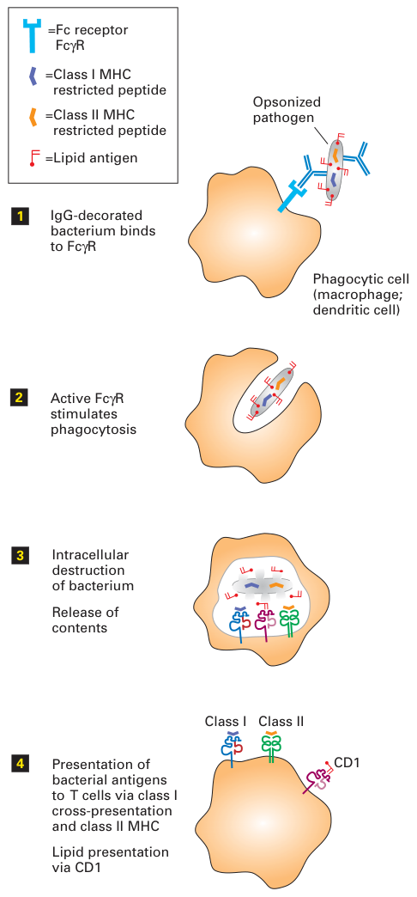
| IgG-decorated bacterium binds to FcγR | 被IgG修饰的细菌与FcγR结合 |
| Active FcγR stimulates phagocytosis | 活化的FcγR刺激吞噬作用 |
| Lipid presentation via CD1 | 经CD1的脂质提呈 |
| Intracellular destruction of bacterium | 细菌的胞内破坏 |
| Release of contents | 内容物释放 |
| Class I | I类MHC |
| Class II | II类MHC |
| CD1 | CD1 |
| Phagocytic cell (macrophage; dendritic cell) | 吞噬细胞（巨噬细胞；树突状细胞） |
| Fc receptor | Fc受体 |
| Lipid antigen | 脂质抗原 |
| Class II MHC restricted peptide | 受II类MHC限制的肽 |
| Class I MHC restricted peptide | 受I类MHC限制的肽 |
| Opsonized pathogen | 被调理的病原体 |
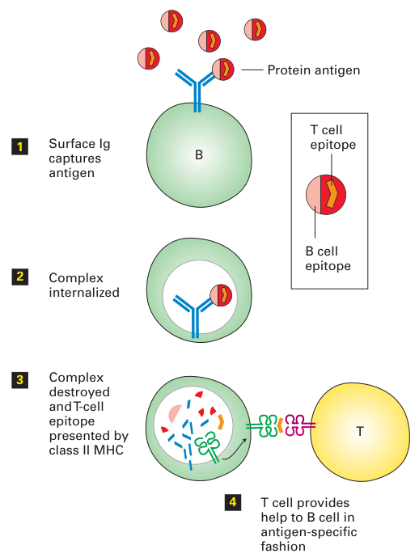
| Surface Ig captures antigen | 表面Ig捕获抗原 |
| Complex internalized | 复合物内化 |
| B cell epitope | B细胞表位 |
| T cell epitope | T细胞表位 |
| Protein antigen | 蛋白抗原 |
| B cell | B细胞 |
| T cell | T细胞 |
4 肽与II类MHC分子的相遇：回忆一下，在内质网中合成的大多数II类MHC分子都被导向晚期内体。蛋白水解产生的肽与II类MHC分子本身处于同一拓扑空间——它们不必像注定要结合I类MHC分子的肽那样穿过一层膜（见图23-25）。为了让肽与II类MHC分子相遇，(αβIi)3复合物经分泌途径被运输到内体区室。
5 肽与II类分子的结合：被递送至内体区室的(αβIi)3复合物不能结合肽，因为II类分子中的肽结合槽被恒定链（Ii）占据。出于同样的原因，新装配的(αβIi)3复合物不会与经TAP递送至ER的、注定结合I类MHC的肽竞争：它们的肽结合位点已被Ii占据。回忆一下，ER正是I类和II类MHC分子装配的场所。新生II类MHC复合物中Ii的存在确保了II类MHC分子不在ER中结合肽。内体和溶酶体中那些作用于内化抗原并将其降解为肽的蛋白酶，同样作用于(αβIi)3复合物，导致Ii分子从复合物中被移除，只剩下一个称为CLIP片段的小部分。由于CLIP牢固地嵌在II类MHC的肽结合槽中，它能抵抗蛋白水解的攻击。在内吞途径的条件下，II类MHC分子本身也能抵抗解折叠和蛋白水解攻击。CLIP片段由伴侣蛋白DM从αβ异二聚体上移除。II类MHC分子新空出的肽结合槽现在可以结合内吞途径中大量存在的肽。尽管DM蛋白由MHC编码，且在结构上与II类分子非常相似，但它本身并不结合肽。然而，新形成的II类MHC-肽复合物本身也容易受到DM的进一步"编辑"，DM可将已结合的肽赶走，直到II类分子获得一个结合得如此牢固、以致无法被DM移除的肽。由此形成的II类MHC-肽复合物极其稳定，估计半衰期超过24小时。
6 II类MHC-肽复合物在细胞表面的展示：新生成的II类MHC-肽复合物大多定位于晚期内体区室，其中包括多囊体（或多囊内体）（见图14-33）。多囊体的内部小泡被招募到界膜上，使其表面积扩大：通过形成沿微管轨道铺设的管状膜，这些区室伸长，并最终通过膜融合将II类MHC-肽复合物递送到表面。这些事件受到严格调控：在树突状细胞和巨噬细胞中，当它们被感染所引发的信号（如细菌脂多糖，由这些专职APC表面的Toll样受体检测）以及CD4表达性辅助性T细胞产生的炎性细胞因子（如干扰素γ）激活后，II类MHC分子的成管与向表面的递送都会增强。
对于专职APC而言，上述步骤是组成性的——始终在发生——但它们可以通过暴露于微生物因子和细胞因子而被调节。除了这里描述的I类和II类MHC产物的途径之外，还有一类与I类MHC相关的分子，即CD1蛋白，专门负责提呈脂质抗原。CD1分子的结构类似I类MHC分子：一个较大的亚基与β2-微球蛋白形成复合物。许多种类的细菌产生的脂质，其化学结构在它们的哺乳动物宿主中并不存在。当由CD1分子提呈时，这些脂质可以作为抗原，它们通过一个与大多数MHC分子的口袋在概念上相似的脂质结合口袋与CD1结合。较大CD1亚基胞质尾中的信号将这些分子导向内体或溶酶体区室，在那里发生抗原性脂质的装载。CD1-脂质复合物与一类相对罕见的T细胞（称为NKT细胞）以及γδ T细胞相互作用，二者都将在下文描述。NKT细胞在细胞因子产生中发挥重要作用，并通过其细胞因子输出帮助启动和协调适应性免疫应答。
- MHC最初是作为负责移植物接受或排斥的遗传区域而被发现的，它编码许多参与免疫应答的不同蛋白质。其中两种蛋白质——I类和II类MHC分子——高度多态，存在许多等位变异（见图23-21）。
- I类和II类MHC蛋白的功能是结合肽抗原并将它们展示在细胞表面，以便抗原-MHC蛋白复合物能与T细胞上的抗原特异性T细胞受体相互作用。当抗原提呈细胞上的抗原-MHC蛋白复合物与其在T细胞上的互补T细胞受体结合时，T细胞即被激活而承担效应功能，例如产生细胞因子或获得杀死病毒感染细胞的能力。I类MHC分子存在于大多数有核细胞上，而II类MHC分子的表达主要局限于专职APC，如树突状细胞、巨噬细胞和B细胞。
- I类和II类MHC分子的组织形式和结构相似，都包含一个专门用于结合多种多样肽的肽结合槽（见图23-23）。
- MHC分子的不同等位变异体结合不同的肽集合，因为区分不同等位基因的差异包括决定肽结合槽结构的残基（见图23-24）。等位变异还包括MHC分子中直接接触相应T细胞受体的残基。因此，MHC分子的不同等位变异体即使结合相同的肽，通常也不与同一个T细胞受体反应。这一现象称为MHC限制性。
- I类和II类MHC分子在不同胞内区室中与肽结合：I类分子主要结合胞质物质，而II类分子结合通过吞噬作用、胞饮作用或受体介导的内吞而内化的细胞外物质。
- 蛋白抗原被获取、加工成肽并转变为表面展示的MHC-肽复合物的过程，称为抗原加工与提呈。这一过程在表达相关MHC分子的细胞中持续运行，但在免疫应答过程中可受到调节。
- 抗原加工与提呈可分为六个独立步骤：(1)获取抗原；(2)标记抗原以毁灭之；(3)蛋白水解；(4)肽与MHC分子的相遇；(5)肽与MHC分子的结合；(6)将负载肽的MHC分子展示在细胞表面（见图23-27）。
23.5 T细胞、T细胞受体与T细胞发育
T淋巴细胞通过与其MHC分子的特异性相互作用识别抗原。承担这一任务的多样化、抗原特异性T细胞受体，在结构上和生物合成上都与免疫球蛋白的F(ab)部分相关。为了产生庞大的抗原特异性T细胞受体库，T细胞通过体细胞重组机制重排编码T细胞受体亚基的基因，这一机制与B细胞重排免疫球蛋白基因所用的机制基本相同。而且T细胞的发育与B细胞一样，严格依赖于这些体细胞基因重排的成功完成，从而产生有功能的T细胞受体。本节中，我们将描述介导抗原特异性识别的受体亚基、它们如何与信号转导所必需的膜糖蛋白配对，以及这些复合物如何识别MHC-肽组合。
正如上一节所指出的，一个个体的T细胞只有在其肽抗原与该个体中存在的多态性MHC分子结合时才能识别它们。在T细胞发育过程中，T细胞必须"学会"这些"自身"MHC分子的身份，并接受关于哪些MHC-肽组合应当忽略的指令，从而避免新生成的T细胞与该个体自身组织发生可能灾难性的反应（即自身免疫）。
T细胞受体的结构与免疫球蛋白的F(ab)部分相似
正如B细胞利用其表面的B细胞受体识别抗原并产生导致克隆扩增的胞内信号，T细胞则依赖其T细胞受体（TCR）来启动自身参与免疫应答。通过这类抗原特异性受体而被激活的T细胞会增殖，并获得杀伤携带抗原的靶细胞（就细胞毒性T细胞而言）或分泌协助B细胞分化的细胞因子（就辅助性T细胞而言）的能力。TCR识别与MHC分子结合的抗原肽。
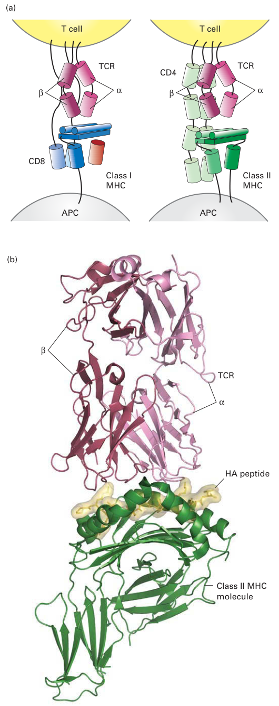
| TCR | T细胞受体（TCR） |
| CD4 | CD4 |
| CD8 | CD8 |
| Class I MHC | I类MHC |
| Class II MHC | II类MHC |
| T cell | T细胞 |
| APC | 抗原提呈细胞（APC） |
| HA peptide | HA肽 |
TCR由两个糖蛋白亚基组成（图23-29），每个亚基都由一个经体细胞重排的基因编码。该受体由α和β亚基、或γ和δ亚基组成。这些亚基的结构与免疫球蛋白的F(ab)部分相似：N端为可变区，其后是恒定区和一个跨膜片段。TCR亚基的胞质尾很短，不直接与胞质信号转导分子相互作用。相反，TCR与CD3复合体结合，后者是一组由γ、δ、ε和ζ链组成的膜糖蛋白。（TCR的γ和δ亚基不要与CD3复合体中名称相似的亚基混淆。）ε链与γ链或δ链形成非共价二聚体，产生δε和γε复合物。CD3亚基的胞外结构域与免疫球蛋白结构域同源，每个亚基的胞质结构域都含有一个ITAM（免疫受体酪氨酸激活基序），其酪氨酸残基被磷酸化后可通过ITAM招募接头蛋白。ζ链以二硫键连接的同源二聚体形式整合于CD3-TCR复合体中，每条ζ链含有三个ITAM。
TCR基因的重排方式与免疫球蛋白基因相似
几乎所有由体细胞重组产生的抗原特异性受体都含有一个V-D-J重排产物的亚基（如Ig重链、TCR β链）和一个V-J重排产物的亚基（如Ig轻链、TCR α链）。TCR的V-D-J和V-J重排机制与免疫球蛋白基因所述的基本相同，需要构成非同源末端连接机器的全部组分蛋白：RAG1、RAG2、Ku70、Ku80、DNA依赖性蛋白激酶的催化亚基、XRCC4、DNA连接酶IV和Artemis。这一过程需要重组信号序列（RSS），并且重排遵循12/23 bp间隔区规则（图23-30）。
TCR基因座的组织与重排具有若干值得注意的特点。第一，RSS的组织方式使得D到D重排成为可能，这与Ig的情况不同。第二，末端脱氧核苷酸转移酶（TdT）在TCR基因重排时具有活性，因此所有重排后的TCR基因中都可能存在N核苷酸。第三，在人和小鼠中，TCR δ基因座嵌于TCR α基因座之内。这种组织方式使得TCRα发生重排时，位于中间的δ基因座被完全切除，因此选择TCR α基因座进行重排就排除了使用δ基因座的可能，后者因缺失而丢失。表达αβ受体的T细胞与表达γδ受体的T细胞被视为具有不同功能的独立谱系。在表达γδ受体的T细胞中，有一些能够识别CD1分子，后者专门负责提呈脂质抗原。γδ T细胞被编程为归巢至特定的解剖部位（如生殖道内衬上皮、皮肤），并可能在针对这些部位常见病原体的宿主防御中发挥作用。
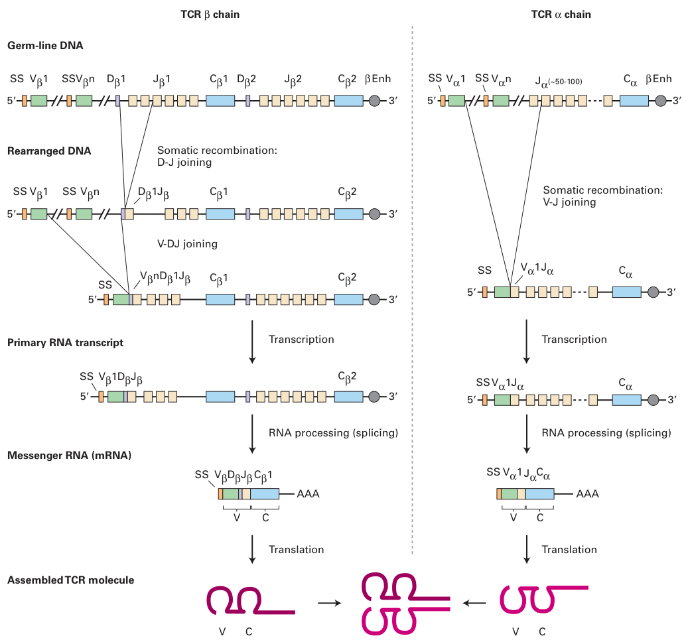
| Germ-line DNA | 种系DNA |
| Rearranged DNA | 重排DNA |
| Primary RNA transcript | 初级RNA转录物 |
| Messenger RNA (mRNA) | 信使RNA（mRNA） |
| Assembled TCR molecule | 装配好的TCR分子 |
| Somatic recombination | 体细胞重组 |
| D-J joining | D-J连接 |
| V-DJ joining | V-DJ连接 |
| V-J joining | V-J连接 |
| RNA processing (splicing) | RNA加工（剪接） |
重组机器关键组分的缺陷，例如RAG重组酶的缺陷，会阻断TCR基因的重排。正如我们在B细胞中所见，淋巴细胞的发育严格依赖于抗原受体基因的重排。因此，RAG1或RAG2的缺陷会同时阻断B细胞和T细胞的发育。RAG基因纯合敲除的小鼠常被用来评估B细胞和T细胞在生理与病理生理过程中的作用。
TCR的许多可变残基由V、D、J基因片段之间的连接处编码
由TCR基因体细胞重组产生的多样性估计超过10^10种独特的受体。不同V、D和J基因片段的组合使用对这种多样性有重要贡献，前面已讨论过的免疫球蛋白基因重排中的连接不精确性和N核苷酸添加机制也是如此。最终结果是V区的变异程度与免疫球蛋白相当（见图23-13）。事实上，TCR的每个可变区都包含三个高变区（CDR），与BCR中的相当。然而与免疫球蛋白基因不同，TCR基因不发生体细胞高频突变。因此，TCR不具有与免疫应答过程中抗体亲和力成熟相当的过程，也没有类别转换重组或使用替代多聚腺苷酸化位点来产生可溶性与膜结合型受体的选项。
已测定了多种TCR与I类MHC–肽或II类MHC–肽复合物结合的晶体结构。这些结构显示TCR与MHC-肽复合物的对接方式存在差异，但在体细胞多样化的CDR3区中，最广泛的接触是与复合物中央含肽部分形成的，而种系编码的CDR1和CDR2则接触MHC分子的α螺旋。许多已解出结构的TCR以对角线方式跨过MHC-肽复合物的肽结合部位对接。因此，TCR既与肽广泛接触，也与其结合的MHC分子的α螺旋广泛接触。等位MHC分子彼此不同的位置常常正是那些直接接触TCR的残基，从而阻止了不相关等位MHC产物的紧密结合。
区分不同MHC等位基因的氨基酸差异也会影响肽结合槽的结构。即使两个等位MHC分子共享直接与TCR相互作用的MHC残基，由于肽结合槽中的氨基酸差异，它们的肽结合特异性也很可能不同。因此，与TCR稳定相互作用所必需的、由结合肽提供的TCR接触残基，在"错误"的MHC-肽组合中将会缺失。于是与TCR产生有效相互作用就不太可能发生。
经抗原特异性受体的信号转导触发T细胞和B细胞的增殖与分化
由T细胞和B细胞介导的免疫应答，是在其抗原特异性细胞表面受体（TCR或BCR）与各自的配体结合而被激活时启动的。TCR的配体是表达于APC表面的MHC-肽复合物。BCR的配体是抗原，它们与受体结合无需MHC介入，也不必与提呈细胞结合。TCR和BCR被其抗原激活的过程，与我们已讨论过的信号受体（G蛋白偶联受体、酪氨酸激酶受体；见第15章和第16章）的激活相似，都激活了信号转导级联反应。若干整合膜蛋白以及可溶性胞质蛋白参与TCR和BCR的信号转导。在某些情况下，这些膜相关蛋白可被视为受体的辅助亚基。这类辅助蛋白参与信号转导的例子见图23-31。抗原特异性受体自身的胞质部分很短，不会明显突出于质膜的胞质侧，且无法招募下游信号分子。相反，如前所述，抗原特异性受体与含有ITAM的辅助亚基结合。配体与抗原特异性受体的结合启动一系列受体近端事件：激酶激活、ITAM修饰，以及随后招募作为支架、用于招募更多下游信号分子的接头蛋白。
如图23-31所示，配体与抗原特异性受体的结合激活Src家族酪氨酸激酶（如辅助性T细胞中的Lck；B细胞中的Lyn和Fyn）。这些激酶位于抗原特异性受体附近，或与之物理结合。活化后的激酶使抗原特异性受体辅助亚基中的ITAM磷酸化。磷酸化形式的ITAM招募并激活非Src家族酪氨酸激酶（T细胞中的ZAP-70、B细胞中的Syk）以及其他接头蛋白。这种招募和激活涉及磷酸肌醇特异性磷脂酶Cγ和PI-3激酶。随后的下游事件与第16章中描述的受体酪氨酸激酶信号转导类似。B细胞和T细胞上的抗原特异性受体也许最宜被描述为"模块化"的受体酪氨酸激酶：配体识别单元和激酶结构域由不同的分子携带。最终，经抗原特异性受体的信号转导启动决定活化淋巴细胞命运的转录程序：增殖与分化。
T细胞的克隆扩增关键依赖于细胞因子白细胞介素2（IL-2）。T细胞受到抗原刺激后，最先开启的基因之一就是IL-2基因。T细胞对自身最初爆发产生的IL-2作出响应，并继续产生更多IL-2，这是一个自分泌刺激，是正反馈环路的一部分。诱导IL-2合成所需的一个重要转录因子是NF-AT蛋白（活化T细胞核因子）。该蛋白以磷酸化形式隔离在胞质中，除非先被去磷酸化，否则无法进入细胞核。负责这一过程的磷酸酶是钙调磷酸酶，一种Ca2+激活的酶。导致钙调磷酸酶活化的胞质Ca2+初始升高，源于PI(4,5)P2水解及随之产生IP3所触发的内质网内Ca2+库动员（见图15-34，步骤2–4）。
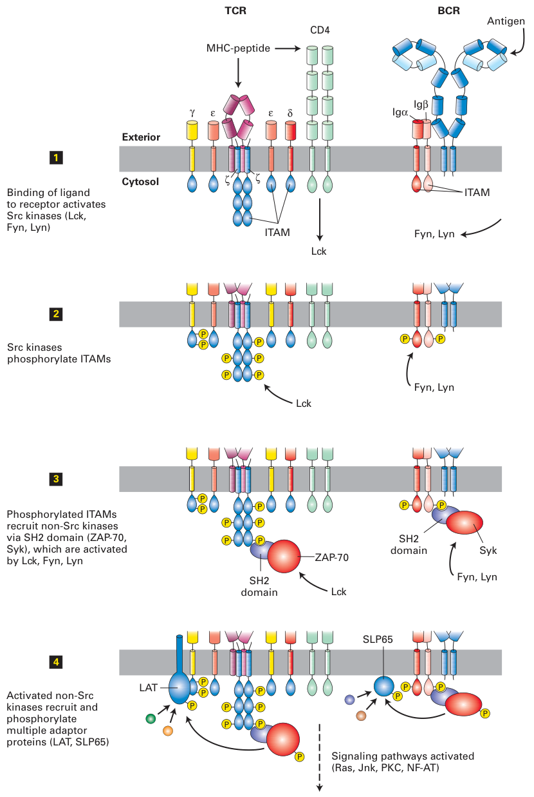
| ITAM | 免疫受体酪氨酸激活基序（ITAM） |
| TCR | T细胞受体（TCR） |
| BCR | B细胞受体（BCR） |
| CD4 | CD4 |
| MHC-peptide | MHC-肽 |
| Antigen | 抗原 |
| ZAP-70 | ZAP-70 |
| Syk | Syk |
| SH2 domain | SH2结构域 |
免疫抑制剂环孢素通过与亲环蛋白形成环孢素-亲环蛋白复合物，该复合物结合并抑制钙调磷酸酶，从而抑制钙调磷酸酶的活性。如果NF-AT的去磷酸化被抑制，NF-AT就不能进入细胞核并诱导IL-2基因的转录。这就阻止了受抗原刺激的T细胞的克隆扩增，从而导致免疫抑制——这可以说是使涉及无关供者与受者（即遗传上不同、因而表达不同MHC产物的个体）的器官移植得以成功的最重要的一项干预，这种移植被称为同种异体组织移植。尽管移植的成功率因所用器官而异，但环孢素这类强效免疫抑制剂的出现，极大地拓展了临床移植的可能性。 ■
能够识别MHC分子的T细胞通过阳性和阴性选择过程发育
组装成有功能T细胞受体的基因片段重排是一个随机事件，T细胞完成这一过程时，对其受体最终必须与之相互作用的MHC分子一无所知。正如B细胞中Ig重链基因座的体细胞重组那样，TCR β链中最先重排的基因片段是D和J元件；随后一个V片段与刚重排形成的DJ连接（见图23-30）。在T细胞发育的这一阶段，有效重排使得TCR β链得以合成，该链通过与pre-Tα亚基结合而组装进前TCR。这个前TCR所履行的功能与B细胞发育中的前BCR严格类似：它告知T细胞已成功完成一次有效重排，无需再对同源染色体上的基因做进一步重排。前TCR允许成功完成重排的前T细胞克隆扩增，并施加等位基因排斥，以确保通常一个T细胞及其后代只产生一个有功能的TCR β亚基。RAG的表达下降，直到前T细胞的扩增阶段完成，之后又重新启动，以允许TCR α基因座重排，最终产生TCR完全装配好的T细胞。
图23-32展示了T细胞和B细胞发育中的类似步骤。
新出现的T细胞库（携带多样的前TCR）是如何被进一步分化，从而能够与自身MHC–肽复合物发生有效相互作用的呢？基因重排过程的随机性以及由此产生的巨大变异性，造就了一大批多样的TCR，其中绝大多数不能与宿主MHC产物有效相互作用，因而毫无用处。免疫系统发展出了选择过程，以清除那些所产生的TCR无法与自身MHC–肽复合物有效相互作用的T细胞。胸腺中的选择还会去除那些TCR能与自身MHC–自身肽复合物强烈相互作用的T细胞，因为这类T细胞具有自身反应性的潜力，会损害正常健康组织（自身免疫）。如果T细胞在胸腺中识别肽-MHC复合物的亲和力介于这两个极端之间，它们就会获得存活信号并被阳性选择。回想一下，抗原加工与提呈是组成型过程，因此在胸腺中，所有自身MHC分子必然都被来自自身蛋白的肽所占据。这些自身肽与I类和II类MHC分子形成的复合物，构成了新生成的一组T细胞受体用来判断什么是"自身"、应当被忽略的底物。
提呈给正在经历选择的T细胞的肽-MHC复合物的异质性，使得T细胞受体极有可能不仅以定性的方式（强度、持续时间）解读信号，还以累加的方式解读：它遇到的不同MHC–自身肽组合的结合能之和，有助于决定选择的结果。这一现象被称为T细胞选择的亲合力模型。
只有当适当的自身抗原以MHC-肽复合物的形式在胸腺中得到充分呈现时，T细胞才会被凋亡清除。免疫系统如何确保在胸腺中生成的T细胞学会忽略那些通常不在该部位表达的自身抗原呢？以组织特异性方式表达、或在胸腺发育之后才表达的蛋白质，例如胰腺β细胞中的胰岛素或神经系统髓鞘的组分，显然属于这一类。然而，一种称为AIRE（自身免疫调节因子）的因子允许这类组织特异性抗原在胸腺的一个上皮细胞亚群中表达。AIRE是如何做到这一点的尚不清楚，但人们普遍怀疑它直接调控胸腺中以及次级淋巴器官特定部位相关基因的转录。AIRE缺陷会导致这些组织特异性抗原无法在胸腺中表达。在不表达AIRE的个体中，发育中的T细胞无法在胸腺中获得导致潜在自身反应性T细胞被清除的完整指令。其结果是，这些个体表现出令人眼花缭乱的一系列自身免疫应答，造成广泛的组织损伤和疾病。
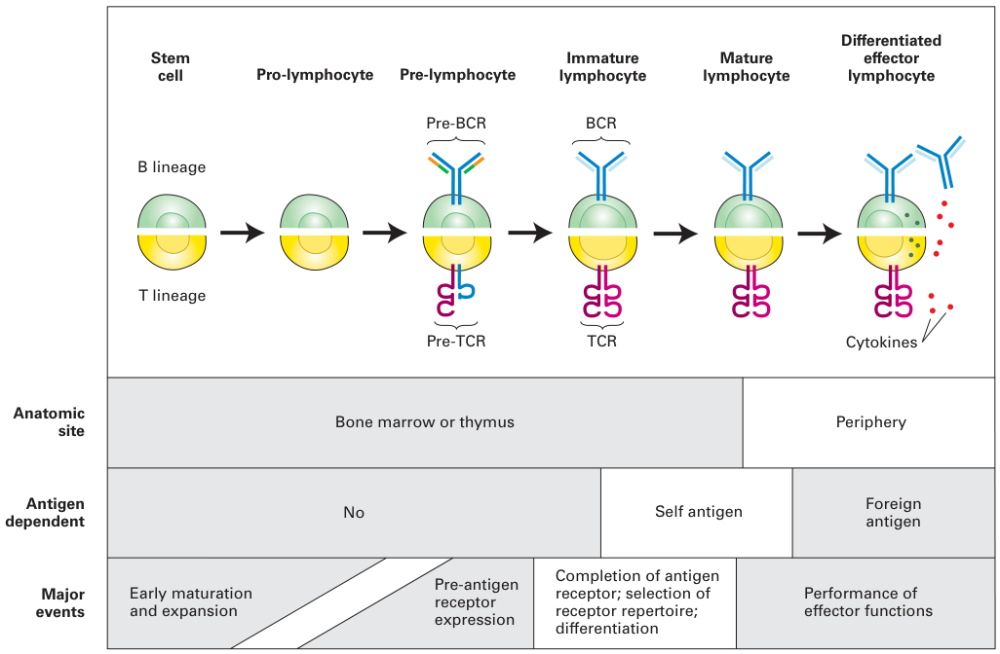
| Stem cell | 干细胞 |
| Pro-lymphocyte | 原淋巴细胞 |
| Pre-lymphocyte | 前淋巴细胞 |
| Immature lymphocyte | 未成熟淋巴细胞 |
| Mature lymphocyte | 成熟淋巴细胞 |
| Bone marrow or thymus | 骨髓或胸腺 |
| Self antigen | 自身抗原 |
| Foreign antigen | 外来抗原 |
| B lineage | B谱系 |
| T lineage | T谱系 |
| Pre-BCR | 前B细胞受体（pre-BCR） |
| BCR | B细胞受体（BCR） |
| TCR | T细胞受体（TCR） |
| Pre-TCR | 前TCR |
T细胞在胸腺中定向为CD4或CD8谱系
TCR基因重排与共受体的获得同时发生。T细胞发育中的一个关键中间体是同时表达两种TCR共受体CD4和CD8、以及一个有功能的TCR-CD3复合物的胸腺细胞。这些细胞被称为双阳性（CD4CD8+）细胞，只在胸腺中作为发育中间体出现。随着T细胞成熟，它们失去CD4或CD8，成为单阳性细胞。选择表达哪一种共受体（CD4还是CD8）决定了T细胞将识别I类还是II类MHC分子。CD4CD8+细胞如何被指令成为CD8（受I类MHC限制）T细胞或CD4（受II类MHC限制）T细胞，这一问题尚未完全解决，但我们知道转录因子ThPOK和Runx3起着根本性作用。ThPOK和Runx3受TCR信号调控。瞬时表达ThPOK的细胞将定向为CD4谱系并抑制Runx3的表达。另一方面，如果ThPOK表达未被诱导，Runx3表达水平就高，细胞便定向为CD8谱系。在小鼠中，ThPOK基因的功能丧失突变会废除CD4 T细胞的发育，所有胸腺细胞都变成表达CD8的T细胞。
胸腺中还会发育出第三类CD4 T细胞，称为天然（或胸腺来源的）调节性T细胞（Treg），但其功能不同于经典的常规CD4辅助性T细胞，如下文所述。天然Treg的发育和功能需要转录因子FoxP3，后者也在一定程度上受TCR信号调控。虽然T细胞选择的亲合力模型也适用于天然Treg的发育，但天然Treg的阴性选择阈值似乎更高：那些以高亲和力识别自身抗原却逃过阴性选择的胸腺细胞，会进一步定向为天然Treg谱系。最后，胸腺还会产生非常规（且数量较少）类型的T细胞，例如表达NK细胞标志NK1.1、并在提呈脂质抗原的非经典MHC分子CD1上被选择的恒定自然杀伤T细胞（iNKT），以及将定植于肠道黏膜表面的上皮内淋巴细胞。经过最后的成熟阶段后，所有类型的T细胞都被输出到外周淋巴器官。
T细胞需要两类信号才能完全激活
所有T细胞的激活都需要经由其TCR的信号，但仅有该信号还不够：T细胞还需要共刺激信号。为了感知这些共刺激信号，T细胞表面携带若干额外的受体，其中CD28分子是最著名的例子。CD28与CD80和CD86相互作用，后两者是T细胞所互动的专职APC上的两种表面糖蛋白。当这些APC自身接收到适当的刺激信号（例如其Toll样受体（TLR）被结合）时，CD80和CD86的表达会增加。经由CD28传递给T细胞的信号，与TCR结合其同源自身MHC–肽抗原复合物时发出的信号协同作用，所有这些信号都是T细胞完全激活所必需的（图23-33）。
T细胞一旦被激活，也会表达一些受体，这些受体在识别这些同样的共刺激分子后提供衰减性或抑制性信号，形成负反馈调节。CTLA4蛋白在T细胞中的表达仅在激活后才被诱导，它与CD28竞争结合CD80和CD86。由于CTLA4对CD80和CD86蛋白的亲和力高于CD28，经由CTLA4提供的抑制性信号最终将压过经由CD28传来的刺激性信号。因此，共刺激分子既可以是刺激性的，也可以是抑制性的——这是后来发现的，而未调整命名——它们因而提供了控制T细胞应答激活状态和持续时间的重要手段。
细胞毒性T细胞携带CD8共受体，专门执行杀伤功能
如前所述，细胞毒性T细胞（CTL）通常在其表面表达称为CD8的TCR共受体糖蛋白。这些CD8+ T细胞杀伤展示其同源I类MHC–肽组合的靶细胞，而且极为灵敏：单个MHC-肽复合物就足以让一个适当激活的CTL杀死携带它的靶细胞。
CTL的杀伤机制涉及两类协同作用的蛋白：穿孔素和颗粒酶（图23-34）。穿孔素与构成膜攻击复合物的补体级联终末组分同源，它在其附着的膜上形成直径最大可达20 nm的孔。完整通透屏障被破坏，导致电解质和其他小溶质的丢失，从而促成细胞死亡。颗粒酶被递送至靶细胞，并被认为很可能经由穿孔素产生的孔进入靶细胞。颗粒酶是丝氨酸蛋白酶，能激活caspase，从而驱动靶细胞走上程序性细胞死亡（凋亡；见第21章）的道路。穿孔素和颗粒酶被包装进细胞毒性颗粒，储存在细胞毒性T细胞内部。当T细胞受体与其同源的I类MHC–抗原复合物结合时，来自TCR的信号转导导致细胞毒性颗粒及其内容物释放到细胞毒性T细胞与靶细胞之间形成的细胞外空间，该空间称为免疫突触。T细胞如何在颗粒酶和穿孔素释放到突触中时避免自身被杀，尚不清楚。自然杀伤细胞也具有细胞毒性活性，同样依赖穿孔素和颗粒酶来杀死其靶细胞（见图23-6）。
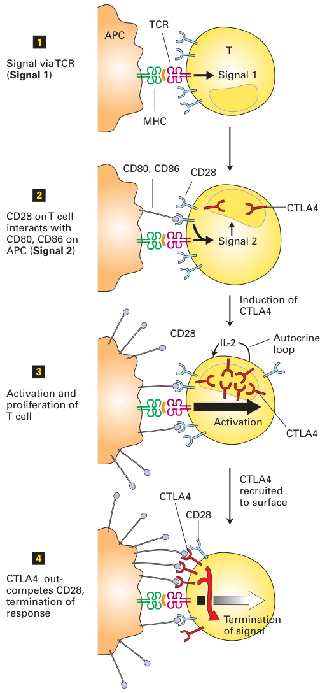
| Signal via TCR | 经TCR的信号 |
| Signal 1 | 信号1 |
| Signal 2 | 信号2 |
| CD28 | CD28 |
| CD80, CD86 | CD80、CD86 |
| APC | 抗原提呈细胞（APC） |
| CTLA4 | CTLA4 |
| IL-2 | IL-2 |
| Autocrine loop | 自分泌环路 |
| MHC | MHC |
| TCR | T细胞受体（TCR） |
| Induction of CTLA4 | CTLA4的诱导 |
| CTLA4 recruited to surface | CTLA4被招募至表面 |
| Termination of signal | 信号终止 |
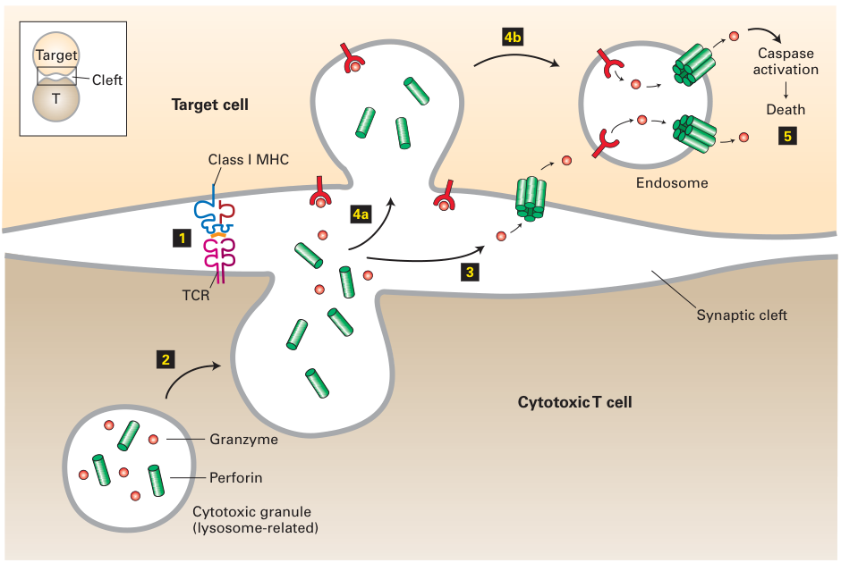
| Target cell | 靶细胞 |
| Class I MHC | I类MHC |
| TCR | T细胞受体（TCR） |
| Cytotoxic T cell | 细胞毒性T细胞 |
| Cytotoxic granule | 细胞毒性颗粒 |
| Synaptic cleft | 突触间隙 |
| Endosome | 内体 |
| Caspase activation | caspase激活 |
| Death | 死亡 |
| Perforin | 穿孔素 |
| Granzyme | 颗粒酶 |
T细胞产生一系列细胞因子，向其他免疫系统细胞提供信号
淋巴组织中的许多淋巴细胞和其他细胞都产生细胞因子。这些小分子分泌蛋白通过与淋巴细胞表面特定的细胞因子受体结合来控制淋巴细胞活性，并启动一个转录程序，使淋巴细胞得以增殖，或分化为准备好发挥细胞毒性（细胞毒性T细胞）、辅助（辅助性T细胞）或分泌抗体（B细胞）活性的效应细胞。由白细胞产生或主要作用于白细胞的细胞因子称为白细胞介素；至少已有35种白细胞介素被识别并在分子水平上得到表征。每种白细胞介素受体与其他受体都有一定的结构相似性；结构最为相近的那些白细胞介素可以被其同源受体识别。白细胞介素-2受体得到了特别充分的表征。白细胞介素2（IL-2）是一种T细胞生长因子，是T细胞受到刺激时最先产生的细胞因子之一。IL-2作为自分泌（作用于自身）和旁分泌（作用于邻近细胞）生长因子，驱动活化T细胞的克隆扩增。
由辅助性T细胞产生的白细胞介素4（IL-4）诱导活化的B细胞增殖，并发生类别转换重组和体细胞高频突变。由骨髓基质细胞产生的白细胞介素7（IL-7）对T细胞和B细胞的发育必不可少。IL-7和IL-15都在记忆细胞的维持中发挥作用，记忆细胞是曾接触过抗原的T细胞，在再次接触抗原时可被调用。这些记忆细胞随后迅速增殖，应对再次入侵的病原体。
IL-2、IL-4、IL-7和IL-15的受体都依赖一个共同的亚基进行信号转导，即共同γ链（γc），而α亚基（IL-2、IL-15）和β亚基（IL-2、IL-4、IL-7、IL-15）提供配体特异性。γc的遗传缺陷会导致淋巴细胞发育近乎完全失败，说明这些细胞因子不仅在免疫应答的效应阶段重要，在淋巴细胞发育过程中也同样重要，其中IL-7尤其起关键作用。
细胞因子受体通过JAK/STAT通路进行信号转导的机制见第16章（综述于图16-1）。在受白细胞介素和STAT通路控制的众多基因中，有一些编码细胞因子信号抑制物，即SOCS蛋白。这些蛋白本身由细胞因子诱导产生，它们与JAK的活化形式结合，并使其靶向蛋白酶体降解（见图16-13b）。
辅助性T细胞根据其细胞因子产生和表面标志物表达分为不同的亚群
表达CD4的T细胞是辅助性T细胞，它们向B细胞提供帮助，并引导其分化为浆细胞。这一功能既需要产生和分泌IL-4等细胞因子，也需要辅助性T细胞与其所帮助的B细胞之间直接接触。
第二类辅助性T细胞的主要功能是分泌有助于建立炎症环境的细胞因子。这类炎症性T细胞有多个亚型，依据它们所产生的不同细胞因子谱及其在调控免疫应答中各自的作用来分类。虽然所有活化的T细胞都能产生IL-2，但其他细胞因子只由特定的辅助性T细胞亚群产生。这些辅助性T细胞被分为分泌干扰素γ和肿瘤坏死因子（TNF）的TH1细胞，以及分泌IL-4和IL-10的TH2细胞。TH1细胞通过产生干扰素γ，能激活巨噬细胞并刺激炎症应答。TH1细胞虽然也被称为炎症性T细胞，但它们在抗体产生中起着重要作用，尤其促进IgG1和IgG3等补体固定抗体的产生。TH2细胞通过产生IL-4，在涉及向IgG1和IgE同种型类别转换的B细胞应答中起重要作用（见上文）。回想一下，在B细胞中，活化诱导胞苷脱氨酶（AID）的诱导使B细胞为类别转换重组和体细胞高频突变做好准备。这种诱导是辅助性T细胞所产生细胞因子的精确组合，以及活化T细胞表面膜蛋白CD40与B细胞表面蛋白CD40配体（CD40L）结合的共同结果。
常规辅助性T细胞还可以分化为产生IL-17的TH17细胞，以及诱导性调节性T细胞（诱导性Treg，与胸腺中产生的天然Treg不同）。两类Treg细胞都通过对其他类型T细胞施加抑制效应来减弱免疫应答。天然Treg抑制潜在自身反应性T细胞的活性，对维持外周耐受（对自身抗原不发生免疫应答）很重要；而诱导性Treg被认为能调控针对外来抗原的过强免疫应答。TH17细胞在抵御细菌（尤其是胞外菌）方面很重要，但也在自身免疫疾病中起致病作用。
白细胞响应趋化因子提供的趋化信号而迁移
白细胞介素通过引发转录程序，使淋巴细胞获得特化的效应功能，从而告诉淋巴细胞该做什么。而趋化因子则告诉白细胞该去哪里。许多细胞以趋化因子的形式发出趋化信号。组织损伤发生时，定居的成纤维细胞产生一种趋化因子IL-8，将中性粒细胞吸引到损伤部位。淋巴结内淋巴细胞运输的调控，对树突状细胞吸引T细胞、以及T细胞与B细胞相遇至关重要。这些运输步骤全都由趋化因子控制。
大约有40种不同的趋化因子和十几种以上的趋化因子受体。一种趋化因子可以结合一个以上的受体，而一个受体也能结合若干种不同的趋化因子。这种灵活性使得有可能产生一套极其复杂的组合式趋化信号编码。这套编码用于引导白细胞从其产生之处（骨髓）进入血流，以运输到其目标目的地。
有些趋化因子指导淋巴细胞离开循环并在淋巴器官中定居。这些迁移使得淋巴器官中定居有必需的各种淋巴细胞群体。由于这些运动是正常淋巴发育的一部分，这类趋化因子被称为稳态趋化因子。而那些以将白细胞募集到炎症和组织损伤部位为目的的趋化因子，则被称为炎症性趋化因子。
趋化因子受体是G蛋白偶联受体，是细胞黏附和细胞迁移调控的一个必需组成部分。在血管中穿行的白细胞速度很快，并暴露于很高的流体剪切力之下。白细胞要穿越内皮并在淋巴结中定居、或在组织中寻找感染部位，就必须先慢下来，这一过程需要称为选择素的糖蛋白表面受体与白细胞表面配体相互作用，这些配体大多本质上是糖类。如果趋化因子被吸附到细胞外基质上，且白细胞拥有针对这些趋化因子的受体，那么其趋化因子受体的激活会引发一个信号，使白细胞携带的整合素发生构象变化。这一变化导致整合素对其配体的亲和力升高，并使白细胞牢固停滞。此时白细胞便可通过称为血管外渗的过程离开血管（见图20-40）。
- 抗原特异性T细胞受体是由α和β亚基或γ和δ亚基组成的二聚体蛋白。T细胞至少分为两大类，依据其是否表达糖蛋白共受体CD4和CD8来界定（见图23-29）。
- 以I类MHC分子作为抗原识别分子路标（用免疫学的说法，即限制元件）的细胞携带CD8；使用II类MHC分子的细胞携带CD4。这些类别的T细胞在功能上不同：CD8 T细胞是细胞毒性T细胞；CD4 T细胞向B细胞提供帮助，是细胞因子的重要来源。
- 编码TCR亚基的基因由V和J片段（α链）以及V、D和J片段（β链）的体细胞重组产生；其重排遵循与B细胞中Ig基因重排相同的规则（见图23-30）。TCR基因的重排发生在淋巴细胞位于胸腺中时，且只发生在那些注定成为T淋巴细胞的细胞中。
- 完整的T细胞受体不仅包括负责抗原和MHC识别的α和β亚基，还包括称为CD3复合体的辅助亚基，后者是信号转导所必需的。CD3复合体的每个亚基在其胞质尾部携带一个或三个ITAM结构域；这些ITAM被磷酸化后，会招募参与信号转导的接头蛋白（见图23-31）。
- 在T细胞发育过程中，TCR β基因座最先重排。如果该基因座编码出有功能的β亚基，它就会与pre-Tα链一起组装进前TCR（见图23-32）。与前BCR一样，前TCR介导等位基因排斥，即只由两个等位基因之一编码表达一个有功能重排的T细胞受体，并使那些成功完成TCRβ重排的细胞增殖。
- 发育中的T细胞若不能识别自身MHC分子，就会因缺乏存活信号而死亡。与发育过程中遇到的自身肽–自身MHC复合物相互作用过强的T细胞被指令死亡（阴性选择）；对自身肽–自身MHC复合物具有中等亲和力的T细胞则被允许成熟（阳性选择），并从胸腺输出到外周。
- T细胞通过趋化因子形式的趋化信号被指令该去哪里（细胞迁移）。趋化因子受体是G蛋白偶联受体，在结合趋化因子方面表现出一定的混杂性。趋化因子–趋化因子受体结合的复杂性使得白细胞运输能够在淋巴器官内和外周都得到精确调控。
23.6 适应性免疫应答中免疫系统细胞的协同作用
有效的适应性免疫应答需要B细胞、T细胞和APC的存在。B细胞要执行类别转换重组和体细胞高频突变——这是产生高亲和力抗体的先决条件——需要活化T细胞的帮助。而这些T细胞又只能被树突状细胞等专职APC活化。树突状细胞通过TLR和其他模式识别受体感知病原体的存在，例如能识别多糖和碳水化合物决定簇的C型凝集素。因此，固有免疫系统与适应性免疫系统各组分之间的相互作用是适应性免疫的一个非常重要的方面。固有免疫与适应性免疫这种分层、交织的性质，既确保了具有即时保护价值的快速早期应答，又使适应性免疫系统准备好对任何持续存在的病原体做出特异性应答。在本节中，我们将描述这些不同要素如何被激活，以及相关细胞类型如何相互作用。
Toll样受体感知多种病原体来源的大分子模式
固有免疫系统的一个重要组成部分，是它能够立即检测到微生物入侵者的存在并对其做出应答。这种应答包括直接消灭入侵者，但它也使哺乳动物宿主为适当的适应性免疫应答做好准备，特别是通过活化专职APC。这些APC分布在整个上皮组织（气道、胃肠道、生殖道）中，这些部位最可能发生与病原体的接触。在皮肤中，一个称为朗格汉斯细胞的树突状细胞网络，使突破这道屏障的病原体几乎不可能避开与这些专职APC的接触。树突状细胞和其他专职APC通过Toll样受体（TLR）家族的成员检测细菌和病毒的存在。这些蛋白因与Drosophila蛋白Toll具有结构和功能同源性而以之命名。Drosophila Toll因其在果蝇背腹图式形成中的重要作用而被发现，但如今人们认识到，相关受体能够在昆虫以及脊椎动物中触发固有免疫应答。
TLR结构 TLR本身和所有TLR都具有一个镰刀形的胞外结构域，由富含亮氨酸的重复序列组成，参与配体识别。TLR的胞质部分含有一个负责招募接头蛋白以启动信号转导的结构域。TLR所启动的信号通路与细胞因子IL-1的受体所使用的信号通路有许多相同的组分（和结果）（图23-35）。
Drosophila Toll蛋白与其配体Spaetzle相互作用，而Spaetzle本身是一种蛋白酶解转化的产物，该转化由捕食Drosophila的真菌的细胞壁组分所启动。在果蝇中，Toll的活化会触发一个信号级联，最终控制编码抗微生物肽的基因的转录。细胞表面被活化的受体借助一系列接头蛋白与转录装置通讯，这些接头蛋白激活位于TLR与其所激活的转录因子之间的下游激酶。一个关键步骤是Cactus蛋白的泛素依赖性蛋白酶体降解。Cactus蛋白的移除使Dif蛋白得以进入细胞核并启动转录。这条通路在运作方式和结构组成上与哺乳动物中的NF-κB通路高度同源（见图16-35）。
TLR的多样性 哺乳动物大约有十几种TLR，它们可被多种微生物产物激活，并由多种细胞类型表达。TLR的功能对树突状细胞和巨噬细胞的活化至关重要。中性粒细胞也表达TLR。TLR所识别的微生物产物包括细菌细胞被膜中的大分子，如脂多糖、鞭毛蛋白（细菌鞭毛的亚基）和细菌脂肽。对相关复合物的晶体学分析已证明，其中至少一些大分子能与TLR直接结合。不同类别的微生物分子由不同的TLR感知：例如，TLR4识别脂多糖；TLR1与2以及TLR2与6的异二聚体识别脂肽；TLR5识别鞭毛蛋白。所有细菌被膜组分的识别都发生在细胞表面。
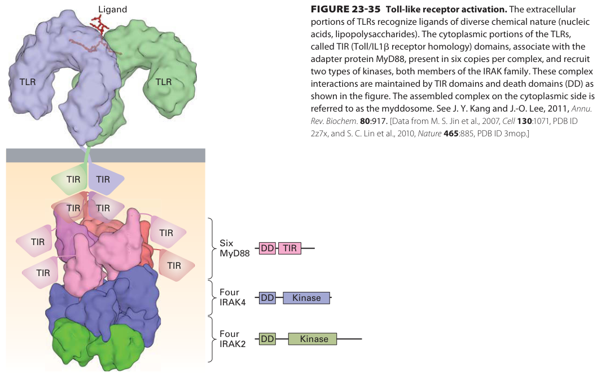
| TIR | TIR（Toll/IL1β受体同源结构域） |
| MyD88 | MyD88 |
| DD | 死亡结构域（DD） |
| Kinase | 激酶 |
| IRAK4 | IRAK4 |
| IRAK2 | IRAK2 |
| Ligand | 配体 |
| TLR | Toll样受体 |
第二组TLR——TLR3、TLR7和TLR9——感知病原体来源的核酸的存在。它们不是在细胞表面，而是在这些受体所驻留的内体区室中进行感知。哺乳动物DNA在许多CpG二核苷酸处被甲基化，而微生物DNA通常缺乏这种修饰。TLR9被未甲基化的、含CpG的微生物DNA激活。类似地，某些病毒感染细胞中存在的双链RNA分子会导致TLR3的活化。最后，TLR7对某些单链RNA的存在做出应答。因此，哺乳动物TLR的全套组合使得机体能够识别多种大分子，这些大分子是细菌、病毒或真菌病原体以及疟疾等寄生虫存在的诊断性标志。
炎症小体 人们已描述了多种识别病毒RNA、在结构上不同于TLR的胞内RNA和DNA受体。能够识别DNA（既包括病原体来源的也包括宿主来源的DNA）的胞质受体名单还在不断加长。其中若干受体参与炎症小体的组装（图23-36），炎症小体的主要功能是将酶前体procaspase-1转化为有活性的caspase-1。Caspase-1是一种蛋白酶，可将pro-IL-1β转化为有活性的IL-1β，后者是一种能引发强烈炎症应答的细胞因子。炎症小体的核心组分是含富含亮氨酸重复序列的蛋白，属于神经元凋亡抑制蛋白（NALP）家族的成员，以及NOD蛋白，后者因含有核苷酸寡聚化结构域而得名。Ipaf-1是一种与凋亡中涉及的Apaf-1分子相关的蛋白（见第21章），它能够招募接头蛋白ASC，以介导与procaspase-1形成复合物。这个多亚基复合物的组装使得procaspase-1转化为有活性的caspase-1，以及pro-IL-1β转化为IL-1β。许多看似无关的物质都能诱导炎症小体的组装和活化，包括二氧化硅、尿酸结晶和石棉颗粒。因此，抑制炎症小体信号级联，或阻断IL-1β的受体，已在多种炎症性疾病中显示出治疗前景。
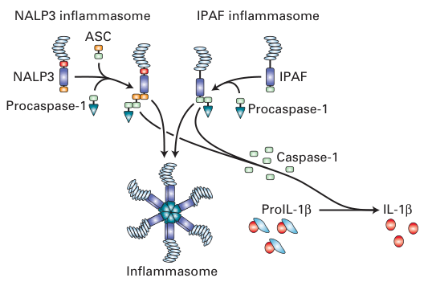
| NALP3 inflammasome | NALP3炎症小体 |
| NALP3 | NALP3 |
| IPAF | IPAF |
| ASC | ASC |
| procaspase-1 | procaspase-1 |
| pro-IL-1 | pro-IL-1 |
| IL-1 | IL-1 |
| inflammasome | 炎症小体 |
| IPAF inflammasome | IPAF炎症小体 |
| caspase-1 | caspase-1 |
TLR信号级联 如图23-35所示，哺乳动物TLR的接合导致接头蛋白MyD88被招募，后者又使IRAK（白细胞介素1受体相关激酶）蛋白得以结合并被激活。IRAK磷酸化TNF受体相关因子6（TRAF6）之后，若干下游激酶开始发挥作用，导致转录因子NF-κB以活性形式释放，从细胞质转位到细胞核，在核中NF-κB激活多种靶基因（见图16-35）。这些靶基因包括编码IL-1β和IL-6的基因（二者促进炎症），以及TNF和IL-12的基因。具有抗病毒作用的I型干扰素（小分子蛋白）的表达，也响应TLR信号而被开启。
细胞对TLR信号的应答相当多样。对于专职APC而言，这些应答不仅包括产生细胞因子，还包括上调共刺激分子——这些表面蛋白对于尚未遇到抗原的T细胞（称为初始T细胞）的充分活化很重要。TLR信号使树突状细胞能够从遇到病原体的地方迁移到引流该区域的淋巴结，在那里它们可以与初始淋巴细胞相互作用。并非所有被激活的TLR都引发相同的应答。在树突状细胞中，每个被激活的TLR控制一组特定细胞因子的产生。对于每个被接合的TLR，共刺激分子的组合与TLR接合所诱导的细胞因子谱共同造就了一种独特的活化树突状细胞表型。树突状细胞所遇到的微生物抗原的身份，决定了将要被激活的TLR的模式。这一模式反过来又塑造了活化树突状细胞的分化途径，影响其产生的细胞因子、展示的表面分子以及树突状细胞所应答的趋化线索。树突状细胞的活化方式及其相应产生的细胞因子，创造出一个独特的局部微环境，T细胞在其中分化。在这个微环境中，邻近的T细胞获得了对抗最初导致TLR接合的感染因子所需的功能特征。
Toll样受体的接合导致抗原提呈细胞的活化
专职APC持续进行内吞，在无病原体时，它们表面展示装载有自身蛋白来源肽的I类和II类MHC分子。在存在病原体时，这些细胞上的TLR被激活，诱导APC变得能运动：它们从周围的基质上脱离，并开始沿着趋化因子提供的方向线索，朝引流淋巴结的方向迁移。例如，活化的树突状细胞会降低其获取抗原的速率，上调内体和溶酶体蛋白酶的活性，并增加II类MHC–肽复合物从装载区室向细胞表面的转运。最后，活化的专职APC上调共刺激分子CD80和CD86的表达，这将使它们能够更有效地活化T细胞。因此，专职APC与病原体的初次接触导致其以完全有能力活化初始T细胞的状态迁移到引流淋巴结。抗原以肽-MHC复合物的形式展示，共刺激分子大量存在，并且产生有助于为待活化T细胞建立适当分化程序的细胞因子。
载有抗原的树突状细胞与抗原特异性T细胞接合，后者通过增殖和分化做出应答。在这一致敏反应过程中产生的细胞因子，决定了表达CD4的T细胞将向炎性还是经典辅助性T细胞表型极化。
如果接合是通过I类MHC分子发生的，那么表达CD8的T细胞可以从细胞毒性T细胞前体发育为完全活化的细胞毒性T细胞。活化的T细胞能运动，它们在淋巴结中穿行以寻找B细胞，或进入循环到身体其他部位执行效应功能。
高亲和力抗体的产生需要B细胞与T细胞的协同
为了产生与抗原紧密结合并有效中和病原体所必需的高亲和力抗体，B细胞需要T细胞的协助。B细胞的活化既需要能与BCR结合的抗原来源，也需要活化抗原特异性T细胞的存在。
可溶性抗原通过传入淋巴管从外周运送到淋巴结（见图23-7）。细菌生长伴随着可作为抗原的微生物产物的释放。如果感染伴随局部组织破坏，补体级联的激活会导致细菌被杀灭，同时释放出细菌蛋白，这些蛋白也经由淋巴管被递送到引流淋巴结。被补体系统蛋白共价修饰的抗原，通过接合B细胞上的补体受体（这些受体充当B细胞受体的共受体），在活化B细胞方面优于未修饰的对应物。通过BCR获取抗原的B细胞以内吞方式将抗体-抗原复合物内化，并对其进行加工以便通过II类MHC途径提呈。因此，成功接合抗原的B细胞将其转化为对T细胞帮助的召唤，形式是表达于细胞表面的II类MHC–肽复合物（图23-37，步骤2）。请注意，被B细胞受体识别的抗原分子上的肽，可能与最终以II类MHC分子结合形式展示在细胞表面的肽截然不同。只要B细胞表位与II类MHC所提呈的肽——即T细胞表位——在物理上相连，成功的B细胞分化和抗体产生就能够启动。
这种连锁识别的概念——即B细胞的BCR接合抗原，以及II类MHC分子将抗原来源的片段展示给T细胞——解释了为什么能够成功引发高亲和力抗体应答的分子存在最小尺寸限制，我们将在下文看到这一点。这类免疫原性分子必须满足若干标准：它们必须含有能与B细胞受体结合的表位，它们必须经历内吞和蛋白酶解，并且该蛋白的一个蛋白酶解片段必须能与可用的等位II类MHC分子结合，从而被提呈为II类MHC–肽复合物，作为对T细胞帮助的召唤。
研究人员常常希望产生一种能够识别较大蛋白中某个短肽片段的抗体（多克隆或单克隆）。这类抗体可用于多种实验，包括检测目标分子（通过免疫荧光或免疫沉淀）。这类抗体被称为抗肽抗体。如果仅用该肽作为免疫原（注射入动物[如兔、山羊或小鼠]以产生抗体），它很可能无法成功诱导强健的抗体生成，即使可能存在BCR能与该肽紧密结合的B细胞。原因在于，那些B细胞不太可能生成由II类MHC与同一肽组成的复合物，以招募辅助性T细胞来驱动增殖和亲和力成熟。因此，用于引发抗体的合成肽被偶联到载体蛋白上以提高其免疫原性；载体蛋白充当通过II类MHC产物进行提呈的肽来源。T细胞只有通过其T细胞受体识别这样的II类MHC–肽复合物，才能提供B细胞完成其全部分化进程所必需的帮助，从而产生强健的高亲和力抗体。
这一概念同样适用于能够识别蛋白或肽上特定修饰的B细胞。识别激酶磷酸化形式的抗体，通常是通过用所讨论的磷酸化肽（偶联到载体蛋白上）免疫实验动物来产生的。一个具有适当特异性的B细胞识别目标肽上的磷酸化位点，内化磷酸化肽和载体，并通过载体蛋白的内体蛋白酶解产生一组复杂的肽。在这些肽中，应当至少有一个能与该B细胞所携带的II类MHC分子结合。如果在B细胞表面被适当地展示，这个II类MHC–肽复合物就成为对T细胞帮助的召唤，而帮助由配备了能够识别II类MHC分子与载体来源肽复合物的受体的辅助性T细胞提供。
辅助性T细胞通过其TCR，借助B细胞展示的II类MHC–肽复合物来识别一个经历过抗原的B细胞。B细胞还展示共刺激分子以及活化T细胞所产生的细胞因子（如IL-4）的受体。与T细胞相互作用后，这些B细胞发生增殖。其中一些分化为浆细胞；另一些被保留下来，成为记忆B细胞。它们产生的第一波抗体总是IgM。向其他同种型（isotype）的类别转换和体细胞高频突变（对高亲和力抗体的产生和选择是必需的）需要抗原的持续存在或反复接触抗原。除细胞因子外，B细胞还需要细胞间接触来启动这些过程。这些接触涉及B细胞上的CD40蛋白和T细胞上的CD40L。这些蛋白是TNF–TNF受体家族的成员。近期关于HIV的研究提示，广泛的超突变是产生广谱中和抗体（能够中和广泛多种高度变异的HIV分离株的抗体）的先决条件。要理解能够作为预防性策略引发这类理想抗体的抗原的性质，还需要对体细胞高频突变的调控有更深入的了解。
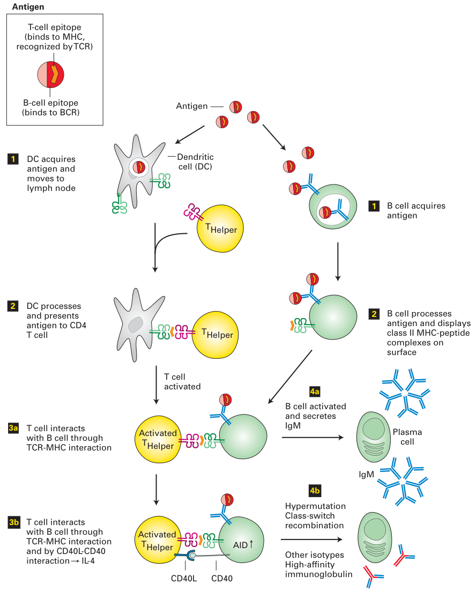
| helper T cell | 辅助性T细胞 |
| dendritic cell (DC) | 树突状细胞（DC） |
| antigen | 抗原 |
| lymph node | 淋巴结 |
| T cell | T细胞 |
| B cell | B细胞 |
| TCR-MHC interaction | TCR-MHC相互作用 |
| class II MHC-peptide complex | II类MHC-肽复合物 |
| B-cell epitope | B细胞表位 |
| T-cell epitope | T细胞表位 |
| class-switch recombination | 类别转换重组 |
| hypermutation | 高频突变 |
| plasma cell | 浆细胞 |
| high-affinity immunoglobulin | 高亲和力免疫球蛋白 |
| CD40 | CD40 |
| CD40L | CD40L |
疫苗可引发针对多种病原体的保护性免疫
可以说，免疫学原理最重要的实际应用就是疫苗。疫苗是被设计成无害的材料，但能够引发免疫应答，目的是提供针对有毒力版本病原体攻击的保护（图23-38）。人们并不总是知道疫苗为何如此成功，但在许多情况下，能够产生中和病原体（病毒）或显示杀微生物效应（细菌）的抗体，是疫苗接种成功的良好指标。
有若干策略可以产生成功的疫苗。病原体在组织培养中或从动物到动物的连续传代常常导致减毒，其分子基础尚不十分清楚。疫苗可以由毒力较强的病原体的减毒活变异体组成。减毒版本的病原体引起轻度疾病形式，或完全不引起症状。然而，通过调动适应性免疫系统的所有组成部分，这类减毒活疫苗能够引发保护性水平的抗体。这些抗体水平可能随年龄增长而下降，因为负责免疫记忆的淋巴细胞寿命可能有限，所以常常需要反复免疫接种（加强注射）以维持完全的保护。减毒活疫苗已用于预防流感、麻疹、腮腺炎和结核病。在结核病的情况下，使用的是引起该病的分枝杆菌的减毒株（卡介苗；BCG）。尽管减毒活脊髓灰质炎病毒直到最近还被用作疫苗，但其使用已停止，因为通过突变重新出现毒力更强的脊髓灰质炎病毒株的风险超过了收益。目前，在美国和欧洲，灭活脊髓灰质炎病毒被用作首选疫苗，尽管减毒活脊髓灰质炎病毒疫苗在其他地方仍在继续使用。
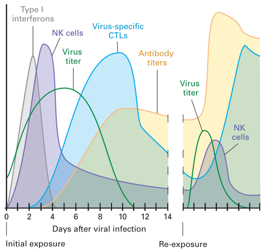
| Initial exposure | 初次暴露 |
| Re-exposure | 再次暴露 |
| Days after viral infection | 病毒感染后天数 |
| Type I interferons | I型干扰素 |
| Virus-specific CTLs | 病毒特异性CTL |
| Antibody titers | 抗体滴度 |
| NK cells | NK细胞 |
| Virus titer | 病毒滴度 |
基于牛痘病毒（引起天花的人类天花病毒的近亲）的疫苗已被成功用于根除天花，这是消除一种传染病的首个此类范例。为脊髓灰质炎实现类似壮举的努力已接近完成，但社会经济和政治因素或武装冲突常常使疫苗的接种复杂化，导致疾病重新出现，正如最近在亚洲所见。
另一种主要类型的疫苗称为亚单位疫苗。它不是使用有毒力的细菌或病毒的减毒活株，而是只用其一种或几种组分（整个病原体的一个亚单位）来引发免疫。在某些情况下，这种方法足以提供持久的保护，抵御用活的、有毒力的抗原来源（即用于接种的抗原）进行的攻击。它在预防乙型肝炎病毒感染方面已取得成功。常用的流感疫苗主要由包膜蛋白神经氨酸酶和血凝素组成（见图3-11）；这些疫苗引发中和抗体。针对人乳头瘤病毒HPV 16（一种引起宫颈癌的血清型）的疫苗，是生成由该病毒的衣壳结构蛋白组成但不含其遗传物质的病毒样颗粒；这些颗粒不具感染性，但在许多方面模拟完整的病毒体。现已获准用于人类的HPV疫苗，预计可将易感人群中宫颈癌的发病率降低多达80%，这是疫苗预防特定类型癌症的首个范例。
从公共卫生的角度来看，廉价生产并广泛分发的疫苗是预防甚至根除传染病的强大工具。目前的努力旨在生产针对以下疾病的疫苗：没有其他合适疗法的疾病（埃博拉病毒），或社会经济状况使药物分发成问题的疾病（疟疾、HIV）。随着对免疫系统运作方式的更完整理解，应当有可能改进现有疫苗的设计，并将这些原理推广到目前尚无成功疫苗的疾病。一个仍然存在的挑战是病原体所能获得的巨大遗传变异：HIV易出错的逆转录酶在每一轮病毒复制中都会引入突变，产生不计其数的变异体。携带此类突变的可存活变异体可能逃避免疫系统的检测。因此，有效疫苗的设计必须聚焦于那些不容忍突变、并且能被动适应性免疫系统"看到"的结构元件。 ■
免疫系统防御癌症
免疫系统不仅防御病原体感染的直接后果，还可能有助于抵御癌症。如我们所见，适应性免疫系统通过阴性选择清除了许多自身反应性B细胞和T细胞。逃脱这一过程的自身反应性淋巴细胞通常被沉默，因为它们得不到适当的（共）刺激信号。导致严重免疫抑制的状况，例如RAG体细胞重组机制的遗传缺陷或HIV感染引起的免疫缺陷，会增加癌症风险，不仅是转化病毒引起的癌症，也包括致癌物引发的癌症。这一观察确立了免疫应答在抑制癌前细胞方面的作用。
回想一下，B细胞和T细胞的活化不仅需要通过其抗原特异性受体，还需要通过第二种共刺激信号（例如T细胞上CD28的接合）。扣留这种共刺激信号会使任何在T细胞选择过程中逃脱删除的自身反应性淋巴细胞被沉默，即失能。由于肿瘤细胞与产生它们的祖细胞极其相似（见第24章），只携带那些引起癌症所需的少数突变（"驱动突变"），因此免疫识别如何在（前）恶性细胞有机会长成更大肿瘤之前帮助将其根除，并非显而易见。尽管如此，体细胞突变——即使是那些偶然发生、并不直接导致癌症的突变——也能在发育中的肿瘤细胞里产生所谓的近抗原，这些近抗原可能被抗原特异性受体识别。化学诱变剂，正如让肺部接触烟草制品的重度吸烟者所经历的，不仅会在随后驱动肿瘤发生的基因中引起突变，还会在其他基因中引起突变（乘客突变），从而提供一系列发育中的免疫系统从未接触过的改变了的基因产物。如果对这些诱变剂诱导的近抗原不存在免疫耐受，它们就可能成为宿主免疫系统识别的靶标。
伴随转化表型的基因表达失调，常常导致更早期发育状态所特有的分化抗原重新表达。如果这些分化抗原是在免疫系统尚未完全成熟的发育阶段表达的，那么对这类分化抗原的免疫耐受可能尚未建立。因此，这些抗原可能成为免疫识别的靶标。
最后，某些基因产物的水平在癌细胞中可能不再受到适当调控，并可能开始超过免疫识别所需的阈值，尽管事实上它们是宿主正常制造的蛋白，只不过水平大大降低。
总之，由于癌症可以被视为一种首先且首要由突变引起的疾病，而突变的影响又被表观遗传事件所修饰（见第24章），因此癌细胞存在被免疫识别的可能。此外，正如针对病毒或细菌的免疫应答可导致不再被免疫系统识别的变异体生长出来一样，免疫系统施加的选择压力也可能导致癌细胞产生变异体，这些变异体失去了某种可能肿瘤抗原的表达。例如，许多结肠癌表现出I类MHC产物表达水平降低（甚至完全缺失），因而对细胞毒性T细胞不可见。
肿瘤微环境由基质细胞组成：成纤维细胞和髓系来源的细胞，包括巨噬细胞。已知淋巴细胞会侵入肿瘤，中性粒细胞也是如此。肿瘤细胞与其所在微环境之间的相互作用可能造成免疫抑制状况，从而阻碍成功的抗肿瘤免疫应答，即使肿瘤细胞本身在抗原性上足够独特、可被识别为肿瘤。建立免疫抑制环境的重要参与者是现在被称为免疫检查点的分子，例如CTLA4，其表达随着T细胞经历完全活化和成熟而增加。正常情况下，CTLA4会在终止免疫应答中发挥作用，但它在肿瘤特异性T细胞上的表达会损害其抗肿瘤活性。此外，胸腺和外周淋巴区室产生Treg细胞，它们能够抑制其他T细胞的活性。大量的Treg细胞会阻止其他T细胞攻击肿瘤。按照同样的逻辑，这些Treg细胞可能抑制潜在的自身反应性T细胞，以此作为预防自身免疫病发生或减轻其严重程度的手段。
免疫应答的两个关键抑制分子是T细胞上的PD-1和T细胞靶标上的PD-L1。这对蛋白抑制T细胞功能。癌症治疗中一个引人注目的突破，是使用靶向抑制性蛋白CTLA4和PD-1的抗体。约30%–50%对其他疗法难治的转移性黑色素瘤患者对这些抗体的治疗产生应答，其中一些实现了完全缓解甚至治愈。类似的方法正在用于治疗不同形式的肺癌和肾癌。抗CTLA4治疗显然拓宽了能够识别肿瘤抗原的细胞毒性T细胞库，同时也抑制Treg细胞的活性。抗PD-1治疗则增强T细胞对肿瘤的识别。或许颇具讽刺意味的是，接触烟草制品最多的吸烟者可能从这类治疗中获益最多，因为他们癌症中的突变负荷很高。
- 诸如树突状细胞这样的抗原提呈细胞，需要通过递送到其Toll样受体的信号来活化。这些受体对细菌和病毒产生的大分子具有宽泛的特异性。TLR的接合会激活NF-κB信号通路，其输出包括炎性细胞因子的合成（见图23-35）。
- 活化后，树突状细胞变为迁移性的，并移动到淋巴结，为与T细胞的相遇做好准备。树突状细胞的活化还增加其MHC-肽复合物的展示，以及启动T细胞应答所需的共刺激分子的表达。
- B细胞需要T细胞的协助才能执行其全部分化程序而成为浆细胞。抗原特异性帮助由活化T细胞提供给B细胞，这些T细胞识别B细胞表面的II类MHC–肽复合物。这些B细胞通过BCR介导的内吞内化抗原，随后经II类MHC途径进行抗原加工和提呈，从而生成相关的MHC-肽复合物（见图23-37）。
- 除活化T细胞产生的细胞因子外，B细胞还需要细胞间接触来启动体细胞高频突变和类别转换重组。这种接触涉及B细胞上的CD40和T细胞上的CD40L。
- T细胞与B细胞协同这一免疫学概念的重要应用包括疫苗。最常见的疫苗形式是减毒活病毒或细菌（能够引发保护性免疫应答而不引起病理）以及亚单位疫苗。
- 适应性免疫系统有时能够区分正常细胞与其癌变对应物。使免疫系统检测癌细胞变得复杂的，是正常细胞与转化细胞之间往往相对微小的差异。
- 免疫检查点可抑制抗原特异性T细胞的活性，在正常情况下这是关闭或控制免疫应答的一种手段。
访问LaunchPad可获取学习工具并进一步了解本章内容：展望未来、经典实验23-1"两个基因变为一个"：免疫球蛋白基因的体细胞重组、分析数据、扩展参考文献，以及包括视频、动画和测验在内的附加学习工具。
关键术语
复习题
- 1.下列每种病原体分别以何种方式解除宿主免疫系统的武装，或操纵它为己所用？
a. 致病性葡萄球菌菌株 b. 有包膜病毒 - 2.追踪白细胞在全身各处执行功能时的移动路线。
- 3.指出保护内部组织免受微生物侵袭的主要机械防御和化学防御。
- 4.比较并对比补体激活的经典途径与旁路途径。
- 5.是什么证据使Emil von Behring在1905年发现了抗体和补体系统？
- 6.什么是调理作用？抗体在此过程中起什么作用？
- 7.在B细胞中，什么机制确保只有重排过的V基因被转录？
- 8.前B细胞一旦发生了一次有效的重链重排，是什么阻止了免疫球蛋白重链基因片段进一步重排？
- 9.为何B细胞会从产生IgM抗体类别转换到产生其他任何一种Ig同种型，其机制如何？
- 10.抗体应答的亲和力成熟背后是什么生化机制？
- 11.比较并对比I类和II类MHC分子的结构。各类MHC分子分别由哪些细胞表达？它们各自的功能是什么？
- 12.描述经I类MHC途径进行抗原加工与提呈的六个步骤。
- 13.描述经II类MHC途径进行抗原加工与提呈的六个步骤。
- 14.是什么阻止了自身反应性T细胞离开胸腺？
- 15.解释为什么T细胞介导的自身免疫病与II类MHC基因的特定等位基因相关。
- 16.抗原提呈细胞和辅助性T细胞如何参与B细胞的激活？
- 17.概述固有免疫应答和适应性免疫应答中的事件，从病原体入侵到病原体被清除。
- 18.给被动免疫下定义并举一例。
- 19.你会如何设计一种疫苗，既能预防HIV感染，又不可能使接种者被感染？
- 20.每年的流感疫苗由减毒活流感病毒或流感亚单位（包膜蛋白神经氨酸酶和血凝素）组成。年度流感疫苗如何保护你免受感染？
- 21.设计一套实验室方案，制备针对某种目标蛋白的单克隆或多克隆抗体。
- 22.设想一个人没有任何有功能的浆细胞。这种情况会对其适应性免疫系统产生什么影响？对固有免疫系统呢？
参考文献
宿主防御概述
Akira, S., K. Kiyoshi Takeda, and T. Kaisho. 2001. Toll-like receptors: critical proteins linking innate and acquired immunity. Nature Immunol.2:675–680.
Heyman, B. 2000. Regulation of antibody responses via antibodies, complement, and Fc receptors. Annu. Rev. Immunol. 18:709–737.
免疫球蛋白：结构与功能
Amzel, L. M., and R. J. Poljak. 1979. Three-dimensional struc- ture of immunoglobulins. Annu. Rev. Biochem.48:961–997.
Williams, A. F., and A. N. Barclay. 1988. The immunoglobulin superfamily—domains for cell-surface recognition. Annu. Rev. Immunol.6:381–405.
抗体多样性的产生与B细胞发育
Hozumi, N., and S. Tonegawa. 1976. Evidence for somatic rearrangement of immunoglobulin genes coding for variable and constant regions. Proc. Natl. Acad. Sci. USA73:3628–3632.
Jung, D., et al. 2006. Mechanism and control of V(D)J recombination at the immunoglobulin heavy chain locus. Annu. Rev. Immunol.24:541–570.
Schatz, D. G., M. A. Oettinger, and D. Baltimore. 1989. The V(D)J recombination activating gene, RAG-1. Cell59:1035–1048.
MHC与抗原提呈
Bjorkman, P. J., et al. 1987. Structure of the human class I histocompatibility antigen, HLA-A2. Nature329:506–512.
Brown, J. H., et al. 1993. Three-dimensional structure of the human class II histocompatibility antigen HLA-DR1. Nature 364:33–39.
Peters, P. J., et al. 1991. Segregation of MHC class II molecules from MHC class I molecules in the Golgi complex for transport to lysosomal compartments. Nature349:669–676.
Rudolph, M. G., R. L. Stanfield, and I. A. Wilson. 2006. How TCRs bind MHCs, peptides, and coreceptors. Annu. Rev. Immunol. 24:419–466.
Zinkernagel, R. M., and P. C. Doherty. 1974. Restriction of in vitro T cell-mediated cytotoxicity in lymphocytic chorio- meningitis within a syngeneic or semiallogeneic system. Nature 248:701–702.
T细胞、T细胞受体与T细胞发育
Dembic, Z., et al. 1986. Transfer of specificity by murine alpha and beta T-cell receptor genes. Nature320:232–238.
Kisielow, P., et al. 1988. Tolerance in T-cell-receptor transgenic mice involves deletion of nonmature CD4+8+ thymocytes. Nature 333:742–746.
Miller, J. F. 1961. Immunological function of the thymus. Lancet 30(2):748–749.
适应性免疫应答中免疫系统细胞的协同作用
Banchereau, J. 2002. The long arm of the immune system. Sci. Am.287:52–59.
Plotkin, S. A., and W. A. Orenstein. 2003. Vaccines, 4th ed. Saunders.
Smith, Jane S. 1990. Patenting the Sun: Polio and the Salk Vaccine. Morrow.
20 years of HIV science. 2003. Nat. Med.9:803–843. A collec- tion of opinion pieces on the prospects for an AIDS vaccine.